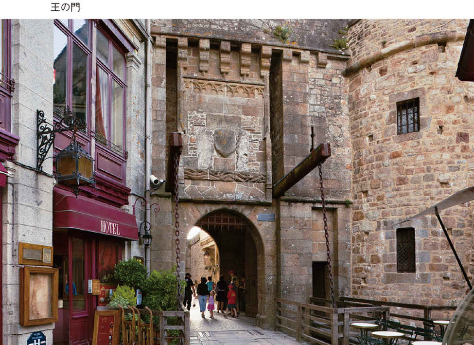
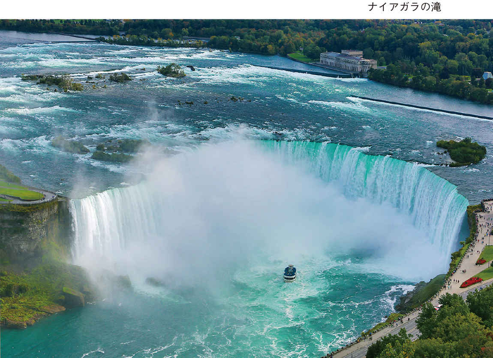
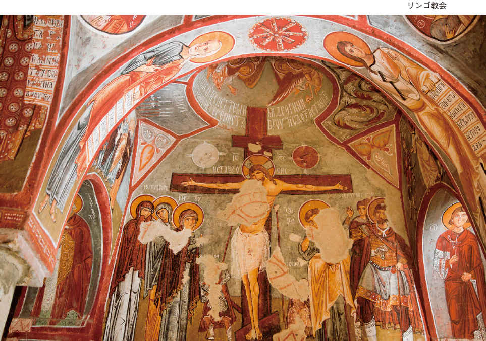
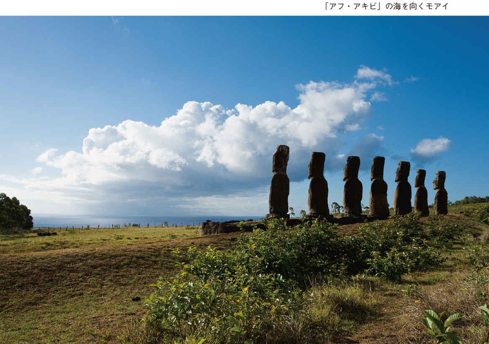
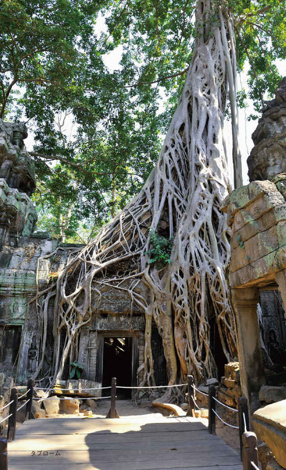
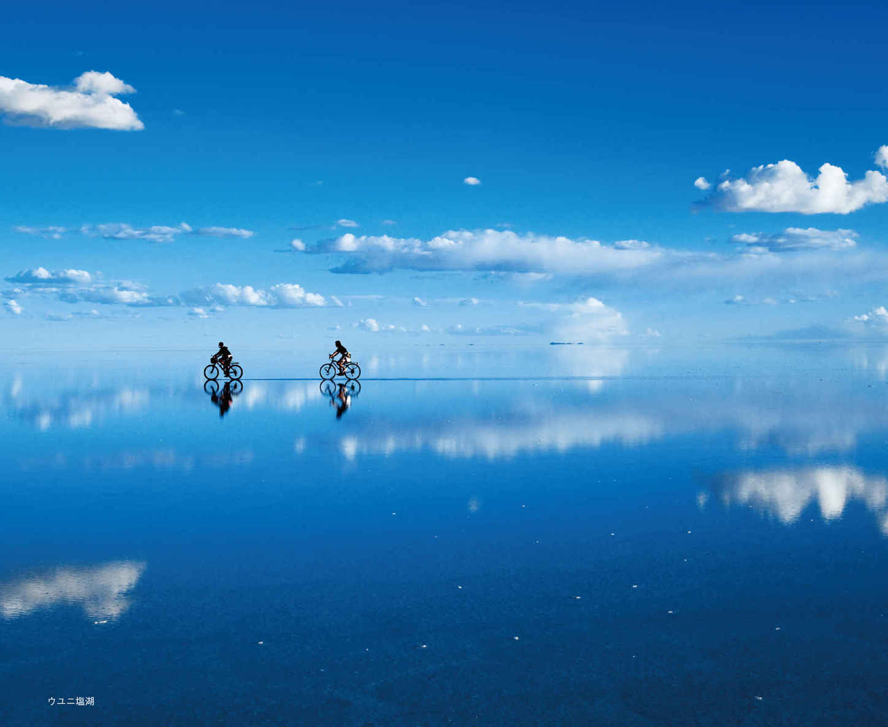

| 〈オールカラー版〉一生に一度は行きたい 世界の旅先ベスト25 (光文社新書) | |
| 多賀 秀行 | |
| (2015) | |
目 次
完全復旧まで数年。再び訪れることができる日を祈って......
【第５位】
【第４位】
【第３位】
【第２位】
【第１位】
編集協力 中原一歩
オビ・本文写真（世界一周クルーズを除く） ＡＦＬＯ
世界一周クルーズ写真 ピースボート提供
まえがき――「旅先を選ぶ」ために
私が初めて海外旅行を計画した15年前、海外旅行のガイドブックと言えば『地球の歩き方』（ダイヤモンド・ビッグ社）ぐらいしかなかった。１９７９年創刊の同シリーズは、これまで世界各地を紹介するガイドブックとして、１００タイトル以上が発売されており、言うまでもなく日本における海外旅行ガイドブックの金字塔だ。特に海外旅行の初心者にとって、こんなに心強い本はない。真新しいパスポートと『地球の歩き方』。この二つを握りしめて初めて出国ゲートをくぐった時の感動と興奮は今でも忘れることができない。
81年生まれの私は、いわゆるバックパッカーに代表される「旅」がカルチャーとして輝きを放っていた最後の世代だ。同じ海外旅行でも「旅」と「旅行」では印象が異なる。前者が「計画性のない貧乏旅行。放浪、冒険」だとすれば、後者は「計画性のある海外旅行。旅行会社が手配したパッケージツアー」と分別できやしないか。事実、私が海外旅行に目覚めた90年代は、現在のようにインターネットも、格安航空券なども普及していなかった。海の向こうの「海外」は憧れの存在。周囲の大人で、ハワイやグアムに行ったことのある人はいても、それ以外のアジアやアフリカ、南米などを旅した経験のある人はほとんどいなかった。
当時、私にとって海外とはテレビの中の憧れの世界だった。「なるほど！ ザ・ワールド」（フジテレビ系列）や「日立 世界ふしぎ発見！」（ＴＢＳ系列、現在も放送中）などの海外をテーマにしたクイズ番組を毎週、食い入るように見たものだ。一番影響を受けたのは「進め！ 電波少年」（日本テレビ系列）。お笑い芸人・猿岩石の２人が、香港からロンドンまでユーラシア大陸をヒッチハイクで横断するという冒険番組は、若い世代から絶大な支持を得た。そもそもこの企画は作家・沢木耕太郎の小説『深夜特急』をモチーフにしたと言われている。後に同小説は、俳優・大沢たかおの主演でテレビドラマ化され高視聴率を記録した。
当時は「アジア」という言葉の響きが新鮮な時代だった。「旅行」ではなく「旅」。「観光」ではなく「冒険」。私の初めての海外旅行先もベトナムだった。屋台で食べたベトナム料理や、アオザイという民族衣装を着たエキゾチックな地元の女性たちに目が釘付けとなった。また、路上に溢れる地雷や砲弾などで手足を失った無数の物乞いの群れに圧倒された。あの虚ろで物憂げな目はいまだに忘れることができない。
私の学生時代はバブル崩壊後の就職氷河期で、後に失われた20年と揶揄される経済低迷期だ。それでも日本は、世界有数の経済大国で平和な国であることには変わりなかった。しかし、アジアには戦争の残滓がそこかしこに転がっていた。教科書では教えてくれない世界の現実がそこにあった。「旅は人生観を変える」。この時期の「旅」の記憶が、現在の私を作っていると言って間違いない。
そして20世紀から21世紀へ。時代は巡る。世界経済はグローバル化によって急速にその姿を変え、旅行業界もまた大転換期を迎える。インターネット、格安航空券、スマートフォン......。これらテクノロジーの進化に伴って海外旅行のスタイルも劇的に変化した。
これまでは一部の若者（バックパッカー）の特権だったリーズナブルな「旅」か、経済的な余裕が必要となる高額な「旅行」に二分されてきたが、老若男女の誰もが、週末を使って気軽に海外を楽しむことができる時代が到来した。ひと昔前まで海外旅行と言えば最低でも10日前後が基本だったが、近年は「安・近・短（安くて、近くて、短い）」が主流となっている。これは日本に限ったことではない。多くの先進国で今、ブームと呼ぶことすらはばかられるほどに、海外旅行が当たり前になっているのだ。
＊
さて、前置きが長くなったがここからが本題だ。私は初めての海外旅行以来、旅にのめり込み、そのまま旅行会社に就職した。旅行そのものを仕事にしてしまったのだ。なかでも心血を注いだのは、旅行業界で「先遣」と呼ばれるツアーの企画・立案の仕事だ。世界遺産や大自然を満喫するばかりでなく、ケニアの山岳地帯に暮らす先住民の村にホームステイをするなどといった、「世界ウルルン滞在記」（ＴＢＳ系列）並みの国際交流ツアーも数多く手がけ、今までに70を超える国や地域を訪れてきた。
自分の企画したツアーにお客様が参加し、満面の笑みを浮かべ旅行を楽しんでいる姿を見るのは、旅行に携わる人間の喜びそのものだ。ツアー終了後も、「人生観が変わりました」「両親に最高の親孝行ができました」「自分の将来の進路が見えたような気がします」など、手紙のやりとりをさせていただいているお客様もいる。その一方、あげればきりがないほどのトラブルや大失態に遭遇した。その意味では、海外旅行の舞台裏も含め、その酸いも甘いも経験してきたことになるだろう。
旅行会社を退職した後、私はある出版社に就職した。そして、旅行会社時代の経験を元に海外旅行に特化したガイドブックの編集に携わった。この出版社を退職後、私は海外旅行のガイドブック専門の編集者としてフリーランスで活動している。出版社時代も含め、これまでに10冊のオリジナルガイドブックを編集し、その累計発行部数は30万部を超えた。手前味噌ながら、一度でも増刷すれば上出来と言われるガイドブック業界において、この数字は大健闘だと言っていい。
しかし、冒頭で書いた通り日本には『地球の歩き方』という海外旅行ガイドブックの金字塔が存在する。また、インターネットの普及に伴い、旅行者の口コミサイトも馬鹿にはできない存在となった。そんなライバルを横目に健闘できている理由は何か――。
それは、『地球の歩き方』が旅行の「実用書」であるのに対し、私が手がけるガイドブックは「旅先を選ぶ」ためのガイドブックだからなのだ。
漠然と海外旅行をしたいと思っていても、実際にはどこに行けばよいのか分からないという人も多いだろう。加えて、「自分はそこで何がしたいのか、何を見たいのか」という旅本来の目的を明確にすることが、未知なる世界へと踏み出す最大の原動力となる。
本書はそれに倣い、これまでの私の経験の中から、今行っておくべき観光地ベスト25を列挙した。大自然が織りなす絶景、息を呑む世界遺産、名画の舞台として登場した美しい街並みなど、この１冊に海外旅行のプロとしての経験を余すことなく盛り込んだつもりだ。
本書の構成だが、まずⅠ章で「旅の基礎知識」に触れたあと、Ⅱ章以降で難易度の低い順に20の観光地を並べた。難易度とは、必要な体力を中心に、旅行に要する日程や金額を考慮したものである。そして最終章では、これまで私が訪れた中のベスト５を紹介している。
本書がこれから海外を目指す人にとって、１冊目の旅行ガイドブックとなれば、著者としてこんなに嬉しいことはない。
旅の基礎知識
「一生に一度」は早い方が絶対にいい
中東を旅した時、こんな諺を教えてもらった。
四つのものは、帰ってこない。
口から出た言葉、
放たれた矢、
過去の生活、
そして失った機会
この諺を海外旅行に当てはめると、失った機会は二度と戻らないという一文は妙に説得力を持つ。
旅行会社で働いていた時、週末の度に各地で行われる「旅行説明会」に参加し、海外旅行を希望する老若男女のお客様と向き合ってきた。この説明会は、写真を使って現在売り出し中のツアー内容を全体に向けて説明した後、スタッフが個別グループに分かれてお客様の質問を受けるという２時間強のイベントだった。
参加者の多くは、すでに海外旅行に行くと決めている人、もしくは前向きに検討している人だ。無理強いこそしないが、旅行会社側としては、せっかく説明会に足を運んでいただいたのだから、せめて申込書だけでも記入して帰ってほしいというのが本音だ。
ちなみに、海外旅行に限らず、旅行は、申込書と旅行代金の一部、または全額を支払って初めて旅行会社とお客様との間で旅行契約が成立する。つまり、その場で申込書を書いても、後でキャンセルしてしまえば、本人の署名があっても申込書はただの紙切れとなる。
通常のパッケージツアーの場合、旅行開始日のおよそ半年前から販売が開始される。「南極大陸周遊クルーズ」などの稀少なツアーでは、１年以上前から販売が開始されるケースもある。
大事なのはこの先である。実は説明会や窓口で申込書を書いたお客様と、とりあえず検討しますと言って申込書を書かないで帰宅されたお客様とでは、最終的にその旅行に参加する率が大きく異なるのだ。言うまでもなく、その場で申込書を提出したお客様の方が参加率は高い。この傾向は稀少価値の高いツアー、もしくは高額なツアーでより顕著に表れる。
実際に説明会で申込書を提出した人に話を聞くと、その段階では、本当に行けるかどうか分からない状況だったと言う。だが、申込書を提出したことで、参加の可否を真剣に考え始めたそうだ。
ここに海外旅行を憧れで終わらせるか、それとも現実のものとするか、決定的な分かれ道がある。気軽に行ける国内旅行と違って海外旅行は特別な旅行だ。特に一生に一度、行けるかどうか分からない世界遺産などの稀少なツアーともなれは尚更だ。
「一生に一度は早い方がいい」
私は海外旅行を実現する秘訣はこの言葉に尽きると思う。別にパンフレットを請求しなくても、窓口を訪れなくても、旅行説明会に参加しなくてもいい。ただチャンスがあるのであれば、まず「行く」と決断してから、その旅行の障壁となる事象について調整すればいい。
仕事、学校、お金の工面、両親の介護、ペットの世話、家族の行事、地域の仕事......。ある一定期間、家を空けるには、こうした具体的な障壁を一つずつ解決する必要がある。
「いつか」という「憧れ」で終わらせるのではなく、「今年行くんだ」と決断することが、海外旅行を実現する上で何よりも重要だと私は思っている。
どのようなツアーを選択すればよいのか
海外旅行に行くと決めた次は、「どこへ行くか」が問題だ。もちろん旅行なのだから好きな所へ行けばよい。
海外旅行に行くには大まかに四つの方法がある。
①旅行会社が主催するパッケージツアーに参加する。
②旅行会社に旅行全体の手配をお願いする。
③旅行会社に飛行機とホテルの手配のみをお願いする。
④個人旅行をする。
まず①の方法を説明しよう。
この形態は「募集型企画旅行」と呼ばれる。
旅行会社があらかじめ旅行の目的地、日程を決定し、その旅行に必要な移動手段（飛行機や鉄道、バス）、宿泊（ホテル）、食事（レストラン）を確定させたものを、パッケージツアーとして売り出したものだ。すべての行程に添乗員が同行するものもあれば、現地では自由行動のみとなるものなど、内容は多岐にわたる。
新聞広告などでよく見かける「６泊７日で行くグアムの旅」とか「台北３日間 食の満喫ツアー」などがこの類いだ。
この航空券と現地手配がセットになったパッケージツアーは、海外旅行の初心者にお奨めだ。現地の言葉を話せなくても旅行会社が大部分をヘルプしてくれるので、まるで「日本国内を旅行する」感覚で、気軽に海外旅行を満喫することができる。
特に安心なのが、旅行中に体調を崩し病院の世話になる場合や、盗難被害にあって地元警察の事情聴取に応じなければならない場合なども、現地の日本大使館との連絡なども含め、旅行会社がすべて先頭に立ってあたってくれる点だ。海外旅行の初心者は、まずこの「募集型企画旅行」に申し込むのが賢明だろう。
一方、②の方法は「受注型企画旅行」と呼ばれる。その言葉の通り、旅行者の依頼に基づいて、旅行会社がツアーを作成するものだ。
例えば、「リオのカーニバルに参加したい」「スペインでサッカーの試合を観戦したい」「バリでヨガを習いたい」など旅の目的が具体的に決まっていて、なおかつ既存のパッケージツアーではその目的を満足に達成できない場合、このスタイルをお奨めする。
この場合、旅行者は飛行機と宿泊、そして現地で必要な移動手段、ガイドなど、その目的に応じた要望をあらかじめ旅行会社に伝える必要がある。完全にオーダーメイドなのでお金はかかるが、他のツアー客を気にせず、自分のペースで旅行を楽しむことができる。
現地施設との信頼関係を確立している旅行会社であれば、例えば「海外旅行を兼ねた結婚式」なども実現可能だ。海外旅行の中級者以上にお奨めのスタイルである。
また、旅行会社を介すという意味では①、②と同様だが、飛行機やホテルなどの手配のみを依頼する「手配旅行」という③の方法もある。
この世界の業界用語に「あご（食事）・あし（移動手段）・まくら（宿泊施設）」というものがある。この三つさえあれば旅行が成立するというものだ。それだけに、「あご（食事）」は現地で探すにしても、事前に旅行会社で「あし（移動手段）」と「まくら（宿泊施設）」だけでも手配しておけば、より安心して旅行ができる。
②の方法では旅行代金に加え、様々な手配に対する手数料＝「企画料」が発生する。また③の方法に関しては「手配手数料」が発生する。そのため、期日までにキャンセルした場合でも、この「企画料」「手配手数料」だけは手元に戻らない場合があるのでチェックしておく必要がある。
前記三つの方法以外に、全く旅行会社を通さず、旅行に関するすべてを自力で手配する④「個人旅行」というパターンがある。昨今、スマートフォンの登場で海外でもリアルタイムで旅や生活に関する情報を手に入れることができるし、見知らぬ土地でも目的地まで案内してくれる便利な旅アプリも多数、開発されている。
このように旅の方法は大まかに四つに分類できる。どのスタイルが自分に一番適しているかは、旅の目的と用途に合わせて、旅行会社のスタッフに相談するといい。プロの視点で明確な提案をしてくれるだろう。
キャンセルチャージはいつから発生するのか？
まず「行く」と決断することが大事――それが海外旅行実現の近道だと書いたが、特に長期にわたるものは、計画から実現までに最低でも３カ月、できれば半年以上の準備期間があった方がいい。なぜならば、「行く」と決めて万全を尽くしたものの、最終的に旅行を断念せざるをえないケースも発生するからだ。
経験上、その理由として最も多いのは「両親の介護」。旅行中に面倒を見てくれる人が見つからなかったというケースだ。次に多いのが自身の健康問題。最近では、予定していた行き先で大規模な災害やテロ事件が発生し、安全と言われていても、周囲に説得されて諦めるケースもあるようだ。
そうした万が一の事態に備える意味でも、旅行会社を通じてツアーの申し込みをした場合、いつの時点でキャンセルチャージ（取り消し料）が発生するのかを明確に記憶しておく必要がある。
標準旅行業約款では、国内旅行は出発日の前日から起算してさかのぼって20日目にあたる日、海外旅行は出発日の前日から起算してさかのぼって30日目にあたる日（ピーク時は40日目にあたる日）以降に契約を解除する場合に、取り消し料がかかると定められている。つまり、海外旅行の場合、一度、旅行の申込書を提出し、旅行代金を全額支払っていたとしても、出発の31日以前にキャンセルすれば、その全額が返金されるということだ。
不測の事態が発生した時、どの時点で旅行をキャンセルすればよいのか。その目安として、取り消し料がいつから発生するのかを記憶しておくといい。
ちなみにチャーター機や船舶を利用する旅行は、これよりさらにさかのぼって取り消し料が適用される場合がある。
宿泊や交通機関の手配のみを旅行会社に頼んだ場合は、宿泊約款や運送約款に取り消し料に関する原則が定められているので確認しよう。特にオーダーメイドの旅行や稀少ツアーを予約した場合には必ず確認することをお奨めする。
時期を間違えると旅行は台無しになる
旅行会社時代、お客様からよく受けたクレームで、旅行のパンフレットに使われている写真と、実際に訪れた旅行先とで、その印象が大きく異なるというものがあった。
もちろん、パンフレットに使われているのはイメージ写真なので、実際の現場が、全く同じ風景だとは限らない。それに撮影しているのはプロのカメラマンだ。ある程度の画像の加工もできるだろう。当然、当日の天気の良し悪しも関係していることは言うまでもない。
それでも、こうした「ギャップ」を体験してしまう人の多くが、ある共通の条件下で旅行に出かけているのだ。
その共通の条件下とは――。
それは、旅行そのものが「ベストシーズンではない」のだ。
行き先の天候は旅の充実度に直結する。いくら「一生に一度は早い方がいい」と言っても、行くタイミングが悪ければ、全く同じ世界遺産でも天と地ほどの差が出る。特に大自然を満喫するツアーにおいては「雨期」と「乾期」を間違えるだけで、お目当ての風景に遭遇できないケースもある。
国内旅行に置き換えて想像してみよう。
例えば海を目的に沖縄旅行に出かけるとする。この場合のベストシーズンは言うまでもなく夏だ。青い海。白い砂浜。台風はともかく、イメージ通りの沖縄を満喫できるだろう。反対に同じ沖縄でも、真冬の海ほど悲惨なものはない。沖縄は暑いというイメージがあるが、冬場の気温は10度前後。泳いでいる人は誰もいない。青いはずの海はどこまでも灰色で、白い砂浜がかえって寂しく映る。
これと全く同じことが、国内以上に情報が乏しい世界各地で発生するのだ。私も経験したが、同じ地中海でも夏と冬では旅情が全く異なる。インク瓶から零れ落ちたようなマリンブルーの海を堪能したいのであれば、夏の地中海に限る。
世界三大瀑布の一つに数えられるアフリカ南部、ジンバブエとザンビアにまたがるビクトリアの滝も、雨量の少ない乾期のまっただ中を選択してしまうと、迫力に欠けるものになる。雨期の中でも最も水量が多い時期と比較するとおよそ10倍もの違いがあり、それがそのまま迫力に直結してしまう。
無論、旅行会社はあらかじめ現地調査をしているので、その事実を絶対に把握している。にもかかわらず、こうしたクレームが生じる理由として、昨今の海外旅行の価格競争があげられる。
つまり「コスト」を最優先すると、その旅先に最も安く行く方法は、ベストシーズンを避けるより他にないということだ。
ベストシーズンとオフシーズンを比較すると、飛行機代、ホテル代などを換算して、一人当たり最大15万円以上の価格差となることも珍しくない。「コスト」と「シーズン」、どちらを優先するかによって海外旅行で得られる感動も大きく異なるのである。
逆に言えば、オフシーズンであれば、ベストシーズンと同じ金額を払うことで上級クラスのホテルやコテージに宿泊できるということだ。季節や天候にあまり左右されない観光地では、思いきってオフシーズンを選択し、星つきのホテルで思いっきり羽を伸ばすのも悪くはない。
初心者は「週末海外」から始めよう！
旅行業に携わる中で受けた相談で最も多かったのが、土日を入れて最大５日間で海外旅行できないかというものだった。事実、働いている世代にとって一回につき６日間以上の休みを取るのは現実的ではない。週末と連休、そして最小限の有給休暇を使って海外旅行を楽しみたい。こうした旅行者は「週末トラベラー」と呼ばれている。
昨今の海外旅行の広告などを見ていると、週末トラベラー向けの短期ツアーが数多く紹介されている。その昔、海外旅行と言えば10日以上の長期の旅行が主流だった。「シルクロードを踏破する」「世界一周旅行に出かける」など１カ月以上の長期旅行が流行った時代もある。しかし、そのためには勤めている会社を辞めなくてはならなかった。
ヨーロッパには年に２回、長期休暇があり、それを利用して海外へ避暑や保養に出かけるスタイルが根づいている。しかし、日本ではよっぽど資産があるか、フリーランスでも特殊な職種でない限り、その旅行スタイルは難しい。しかし、東京国際空港（羽田空港）の国際化によって、あるいは成田空港発でも週末トラベラー向けの週末発着ツアーの増加に伴って、「週末海外」は決して難しい時代ではなくなった。
こうした週末トラベラーのニーズに応えようと、私が考えたガイドブックが「５日間の休みで行けちゃう！」シリーズだ。私はこれまで『５日間の休みで行けちゃう！ 楽園・南の島への旅』『５日間の休みで行けちゃう！ 美しい街・絶景の街への旅』（いずれもＡ‐Ｗｏｒｋｓ）などの書籍を手がけてきた。なかでも12年12月発行の『５日間の休みで行けちゃう！ 絶景・秘境への旅』（Ａ‐Ｗｏｒｋｓ）は、発売と同時に重版がかかった私の出世作と言ってもいい。
ガイドブックのタイトルに「５日間」と期間を明記したのは、この本が最初ではなかったかと思う。以後、同様のコンセプトのものが立て続けに出版された。
長年、旅行に携わってきた私も、これらの本を編集して初めて分かったことがある。それは、５日間もあれば弾丸ツアーで思ったより遠くに行けるという事実だ。
次のスケジュールを見てほしい。
１日目 成田空港発～バンコク乗り継ぎ～アンタナナリボ着（アンタナナリボ泊）
２日目 アンタナナリボ発～モロンダバ着（モロンダバ泊）
３日目 モロンダバ発～アンタナナリボ着（アンタナナリボ泊）
４日目 アンタナナリボ発～バンコク着（バンコク泊）
５日目 バンコク発～成田着
このツアーにタイトルをつけるとしたら「マダガスカルで神秘の木バオバブに出会う５日間」だろうか。
マダガスカルは、アフリカ大陸の沖合４００㎞のインド洋に浮かぶ島国だ。かつてはアフリカ大陸の一部だったが、長い年月の果てにアフリカ大陸から分離し、大陸とは異なる独自の進化を遂げた島なのだ。
その象徴が、サン＝テグジュペリの『星の王子さま』にも登場するユーモラスな恰好をしたバオバブの木だ。その姿を地元の人は、「悪魔が大きい木を引っこ抜いて逆さまに突っ込んだ」と形容する。このバオバブの並木道、通称「バオバブ街道」があるのがモロンダバという街だ。
日本と直線距離でおよそ１万㎞離れたマダガスカル。地球の反対側に近いこの場所にも、実は５日間で行けてしまう。その上、しっかりとこのバオバブ街道を見ることも可能なのだ。もちろん首都アンタナナリボでは、露天マーケットや、この地固有の動植物を見ることができる動植物公園や自然保護区なども楽しめる。
マダガスカルには日本からの直行便はない。成田からいったんタイ・バンコクへと飛び、バンコク経由でマダガスカルの首都アンタナナリボを目指す方法が賢明だ。成田～バンコクは約６時間。バンコク～アンタナナリボは約８時間。注意点として、バンコク～アンタナナリボ間は便数が限られ、毎週火曜日にしか定期便がないということを覚えておこう。
このように、たった５日間でマダガスカルのバオバブ街道を見ることができる時代に私たちは生きているのだ。改めて旅行日数５日間で検索をかけてみると、アジアや太平洋の島々はもちろん、北米やヨーロッパ、アフリカの一部にまで行けることが分かる。これを生かさない手はない。
旅行会社では、これまで５日間という短期のツアーの取り扱いは少なかったが、今ではこぞってパッケージツアーを手がけている。特に30代、40代の働く世代の海外旅行のスタイルは、５日間以内で行ける場所が主流となっている。もはや「時間がない」は旅行をしない理由にはならないのだ。
旅先の治安をチェックしよう
これまで海外旅行で不慮の事件や事故に巻き込まれるケースはあっても、観光客が戦争やテロのターゲットにされることは滅多になかった。しかし残念なことに、特定の国や地域ではあるが、今では観光客を狙ったテロが現実的に発生している。
そうした国は中東、北アフリカに集中しており、２０１０年に勃発した「アラブの春」と呼ばれる民主化ドミノ現象後、急激に治安が悪化しているのだ。私も十数年、海外旅行に携わっているが、あのピラミッドを有するエジプトの治安が、ここまで悪化するとは想像できなかった。
なぜ観光客がテロのターゲットにされるのか。
それは、こうした国々において観光産業が貴重な外貨を獲得する手段であり、自国の経済に大きな影響を与える産業であることを、テロリストが熟知しているからだ、と言われる。つまり、観光収入が減少し、自国の経済が低迷・悪化することで、現在の政権に不満を持つ人々が増加する。こうした環境を利用してテロリストは、その過激思想を社会に蔓延させるのだ。
そう考えるとテロは観光産業に対する挑戦とも言える。観光産業は平和であればこそ成立するものだからだ。少なくとも私が海外旅行を始めた15年前、いわゆる観光地でテロ事件に巻き込まれるということは想定できなかった。もちろん当時も、現在進行形で戦争をしている国や、治安が安定した国でも局所的に内戦が繰り返されている場所はあった。しかし、そうした場所は、観光客はおろか現地の人でも足を踏み入れることのない特殊な地域として認識されていた。
こうした国際情勢の中、本書で中東地域にある世界遺産を紹介するか否か、私も考えさせられた。具体的には、ヨルダンのぺトラ遺跡と、エジプトのピラミッド群とルクソールである。
けれども現地に確認すると、ぺトラ遺跡を訪れる観光客は一時的に減少したが、現在はヨーロッパを中心に観光客がいない訳ではない。ヨルダンはイラクやシリアとも国境を接しているため危険なイメージがあるが、もともと中東諸国の中では極めて治安がよく親日的な国だった。
本書では、そうした点を踏まえ、また近い将来、この２カ所に安心して訪問できる日が来るよう願いをこめて、治安上の注意点を記した上で掲載することにした。
いずれにしても、旅行先の治安については、旅行者自身が入念に検討すべきだ。外務省が発信している「外務省海外安全ホームページ」が参考になる。海外における邦人の安全確保の観点から、その危険度を以下の四つのカテゴリーに分けて紹介している。
「退避を勧告します。渡航は延期してください。」
「渡航の延期をお勧めします。」
「渡航の是非を検討してください。」
「十分注意してください。」
旅行会社も、この外務省の渡航情報に基づいてツアー催行の可否を検討している。海外旅行を検討している人は、このページにアクセスして、どの国がどの程度危険なのかを把握することも必要だろう。例えば、15年１月に過激派テロが発生したフランス・パリには、これらの危険情報は発令されていない（15年４月現在）。
同ページには次のような一文が掲載されている。
このホームページに掲載する渡航情報は、海外に渡航・滞在される方々が自分自身で安全を確保していただくための参考情報です。法的な強制力をもって、皆様の渡航を禁止したり、退避を命令したりするものではありません。同様に旅行会社の主催する旅行を中止させる効力もありません。
渡航前、滞在中は、常に「自分の身は自分で守る」との心構えをもって、安全対策に努めてください。（以下略）
どのような根拠で危険度が評価されているかについては、直接、外務省に問い合わせてみるのもいい。いずれにしても、治安情報に関しては旅行会社にも十分説明を求め、家族や友人にも理解してもらった上で、海外旅行を楽しんでほしい。いくらパッケージツアーでも、自分の身は自分で守るしかないのだ。その意味では、少なくとも海外で緊急事態に巻き込まれた場合のことを想定して、家族に滞在先のホテルの連絡先ぐらいは出国前に伝えておく必要があるだろう。
また海外旅行傷害保険への加入も必須だ。同保険は、海外旅行中のケガや病気の治療費用や、パソコンやカメラなど携行品の盗難、破損時などに適用される。自分の身を守る意味ではもう一度、加入しているかどうかを出発前に確認する必要がある。
旅行の計画と同時にパスポートの残存有効期間を確認しよう
旅行の計画と同時に、海外旅行にはなくてはならないパスポートについても再確認しておこう。ビジネスで海外に行く人などは、常にその残存有効期間を意識しているかもしれないが、数年前に一度、海外に行ったきりの人もいるだろう。
残存有効期間というのは、そのパスポートが効力を発揮する期間のことだ。現在、パスポートは、その期間が「５年」と「10年」の２種類が発行されている。行き先によっては、残存有効期間が半年以上なければ入国できない場合があるので、残存有効期間が１年を切ったパスポートに関しては、かなり注意が必要だ。旅行会社もその点は把握しているので、事前に必ず確認するが、まれに出国の際にそれが判明して、飛行機に乗ることができなかったなどというトラブルが発生する。
旅行会社時代にあった実話だが、年配の方で、パスポートをスーツケースに入れて宅配便で空港に送ったら、その荷物が紛失してしまい、出国できなかったということがあった。また、旅行当日にパスポートを自宅で紛失して、集合時間に遅れた人は何人もいる。大切なものだからこそ、旅行開始当日までに準備万端の状態にしておきたい。
初めてパスポートを取得される方は、最寄りのパスポートセンターに問い合わせるか、外務省のホームページをご覧いただきたい。後者では取得方法が詳しく解説されている。
難易度１の旅先
１ フランス モン・サン＝ミシェル
★☆☆☆☆ 15万円～ ６日間
沖合に浮かぶ岩の島に立つ、美しさを兼ね備えた孤高の修道院
「モン・サン＝ミシェルが１日だけかつての姿を取り戻しました」
２０１５年３月21日、地元メディアのレポーターは、興奮気味にそう伝えた。この日、世界遺産でもあるこの島には、世界各地から３万人もの人が詰めかけ、その奇跡の瞬間に歓声をあげたのだ。
第二次世界大戦時、ナチスドイツに支配されていたヨーロッパを奪還するために、アメリカ、イギリス、フランスなどの連合軍によって展開されたノルマンディー上陸作戦。モン・サン＝ミシェルは、そんなヨーロッパ戦線における最大の激戦地、フランス北西部ノルマンディー地方にある。
西暦７０８年。この土地の先住民族・ケルト人の聖地だった場所に、当時の町の司教が聖堂を建てたのが修道院としての始まりだ。度重なる増改築を経て、13世紀頃に現在の姿になった。14世紀以降は海上要塞として、18世紀末からは牢獄として使われ、19世紀半ばからは、再び、修道院として多くの巡礼者を受け入れる観光地となった。１９７９年、「モン・サン＝ミシェルとその湾」としてユネスコの世界遺産に登録されることになる。
モン・サン＝ミシェルのあるサン・マロ湾は、世界有数の干満差を誇る海として知られている。その昔、ここを訪れる巡礼者たちは、干潮時に現れる干潟の上を歩いて修道院のある島へと渡った。しかし、干潮から満潮へと潮が転じると、あっという間に干潟は消え、この島は海の孤島となった。その姿こそ、冒頭の地元メディアのレポーターが伝えた「かつての姿」だ。現在は島と本土をつなぐ橋と道路（海岸堤防）が造られているので、島が完全な孤島と化すのは、橋よりも海面が高くなる18年に一度の大潮の日しかない。次回は２０３３年３月３日の予定だ。
本土から島を眺めると、意外にもそのスケールは小さく感じられる。しかし、堤防道路、または橋を渡って島へ近づくと、徐々にその迫力に圧倒されるだろう。玄関口となる前哨門をくぐると、待ち受けるのは王の門だ。その脇には、外部からの侵入者を防ぐために築かれた跳ね橋が復元されている。さらにこの門をくぐると、メインストリートである石畳が敷かれたグランド・リュにたどり着く。左右に土産物屋やホテル、レストランが軒を連ね、ハイシーズンともなると大勢の観光客で賑わう。

ここで最も有名なのが「ラ・メール・プラール」というレストランだ。１８８８年、プラールおばさんの愛称で呼ばれる婦人が、レストランを併設した宿を開業し、数百ものレシピを考案して巡礼者に振る舞ったことを起源とする。看板メニューのオムレツは、巡礼者に向けて栄養価の高いものを提供したいという思いから考案された。現在ではモン・サン＝ミシェルの名物料理だ。大人の顔ほどの大きさのオムレツは薄味で、卵白を泡立てたメレンゲのようなふわふわとした口当たり。不思議な味と食感だ。
しばらく進むと郵便局がある。ここで葉書を投函するとモン・サン＝ミシェルの消印が押されるので大人気だ。グランド・リュを歩き終えると、ようやく修道院へと続く階段が現れ、さらに進むと礼拝堂や教会が点在するエリアにたどり着く。一番の見所は、「驚異」を意味する三層構造の建物であるラ・メルヴェイユだろう。最上階には、細身の列柱が二重になって囲む屋上庭園がある。かつて多くの聖職者がここで時間を過ごした。今なお厳粛な雰囲気が漂っている。
モン・サン＝ミシェルを訪れるにあたって、花の都パリの観光は外せない。パリとモン・サン＝ミシェルをセットにして行程を組むのがいいだろう。パリ観光は説明不要かもしれないが、一応、記しておく。
パリの街を貫くのは、セーヌ川。「パリのセーヌ河岸」として１９９１年に世界遺産に登録され、その両岸には見所が集中している。レオナルド・ダ・ヴィンチの代表作である絵画「モナ・リザ」が展示されている「ルーヴル美術館」。アメリカのメトロポリタン美術館、ロシアのエルミタージュ美術館と並び世界三大美術館に数えられる。マリー・アントワネットが処刑された「コンコルド広場」、印象派の殿堂と呼ばれ、マネ、モネ、ルノワール、セザンヌなどが揃う「オルセー美術館」、「エトワール凱旋門」へと続き、世界で最も美しい通りとも謳われる「シャンゼリゼ通り」、パリのシンボルである「エッフェル塔」、ゴシック建築の傑作の一つである「ノートルダム大聖堂」など、一度は耳にしたことのある場所も多いのではないだろうか。
それらの名所を巡ったり、セーヌ川をゆったりとクルーズしたり、近郊に佇む豪華絢爛な「ヴェルサイユ宮殿」を訪れたりと、この街にはいくつもの楽しみが溢れている。
フランスの首都パリからモン・サン＝ミシェルへは、バスで片道５時間、または高速鉄道ＴＧＶとバスを乗り継いで３時間半を要する。パリ発の日帰りツアーもあるが、１日の大半を移動に費やすことになるので、現地に宿泊する方が無難だろう。宿泊すれば、ライトアップされたモン・サン＝ミシェルが闇夜に浮かび上がる幻想的な姿も見ることができる。
ＤＡＴＡ
一般的なツアーの目安代金 15万円〜 ６日間
一般的な行き方 日本からパリまでは直行便が運航しているので、簡単に行くことができる。一方で、アジアや中東の一都市で乗り継ぐことで、直行便よりもリーズナブルになることも珍しくない。パリからモン・サン＝ミシェルへはバスのみ、または列車とバスを組み合わせる方法がある。後者の方が１時間程度、移動時間が短縮されるが、直通で行けるバスのみの方が無難だろう。
旅のシーズン モン・サン＝ミシェルが属するノルマンディー地方は、天候の変化が激しく、１年を通じて雨具が必要となる。高緯度にありながらも温暖な気候が特徴の一つだが、夏でも天気によっては羽織るものが必要となる場合もある。
必要な体力 ★☆☆☆☆ パリへ移動すること自体は、それほど体に負担はない。しかし、パリからモン・サン＝ミシェルへは長距離の移動が避けられないので、現地に宿泊するか、前後でパリのホテルで少しゆっくりする時間が取れるとベストだ。モン・サン＝ミシェルでは勾配のある道や階段を登るが、一般的なツアーでは滞在時間が２〜３時間ほどなので、体力の心配はしなくてもいいだろう。ただ、足下は石畳ゆえに凹凸があるので、履き慣れた靴で訪れよう。
２ カナダ イエローナイフのオーロラ観賞
★☆☆☆☆ 20万円～ ６日間
すべての条件が揃うベストポイント
カナダの中央部にあるイエローナイフ。かつてゴールドラッシュに沸いたこの町が、世界的なオーロラの観測地として知られるようになったのは、その高い観賞率からだと言われている。観賞率とは、その観測地に３泊したうち、１回でもオーロラを見ることができる確率だ。年代にもよるが、近年の統計では、イエローナイフは実に90パーセント以上という、世界でも圧倒的に高い観賞率を誇っている。
オーロラは北極圏や南極点を中心にリング状に広がる「オーロラオーバル」という気候帯の真下に現れる。南極、北極以外では、北欧のフィンランドやスウェーデン。北米大陸ではアラスカやカナダの一部がその地域にあたる。
しかし、その真下にあるからと言って、必ず見えるとは限らない。観測には雲のない晴天の空が必須だ。一年を通じて雲が発生し、雨が降りやすい山間部では、観賞率はぐっと下がる。北極圏から南へおよそ４００㎞、オーロラオーバルの真下に位置しどこまでも平坦な平野部にあるイエローナイフは、すべての条件が揃っているベストポイントなのだ。
オーロラは夜に現れると思われているが、実はそうではない。昼間も出ているのだが、太陽の光にさえぎられ肉眼では見ることができないのだ。また、オーロラは寒い場所にしか現れないと思われているが、実は気温や季節は関係ない。たまたまオーロラが出現する地域が寒いというだけなのだ。
北緯62度に位置するイエローナイフは、夏でも夜間の気温は一桁台。冬（11月中旬～４月上旬）にもなるとマイナス30度に達する。そのため防寒具は必需品だ。
オーロラ見学は、車で30分ほどの街灯がない郊外に設営された専用のキャンプサイトで行われる。夏は夜11時、冬は夜９時にホテルからバスで移動する。
キャンプサイトのテントには、コーヒーや紅茶、ホットチョコレートにパンやスープなどの軽食が準備されている。暖を取りながらじっくりオーロラの出現を待つ。もちろんトイレもある。与えられたチャンスは４時間。椅子に座って体を休めていても、周囲の歓声を合図に外に飛び出せば十分に間に合う。
私が同地を訪れたのは夏（８月下旬）だった。現地に３泊して３晩ともオーロラに出会うことができた。オーロラは、夜空にかかる淡いカーテンのようだ。空の縁にどこからともなく緑の光が現れては消え、また場所を変えてゆらゆらと漂い続ける。時にその光は、赤やピンクに変色しながら、空一面を鮮やかに彩る。
この瞬間をカメラで記録したいと誰もが思うだろう。しかしオーロラは、通常の静止画のように「一瞬」を切り取ることは難しい。少なくともシャッタースピードを10秒以上に設定できる機種に加え、三脚などカメラを固定できるものがなければ、まず綺麗に撮影することはできない。
オーロラは地上１００～４００㎞で発色するそうだ。その発色の正体は、太陽から放出される「太陽風」だと言われている。太陽から放たれた粒子が、地球を包む大気圏に、秒速５００㎞という速度で突入する際、その粒子が様々な色に変化するのだ。つまりオーロラは、太陽と地球の共演の賜物なのだ。
連日のオーロラ観賞は夜半にまで及ぶ。そのため、翌日の行動は午後からだ。イエローナイフは、ノースウエスト準州の州都ではあるが、人口２万人ほどの小さな街だ。オーロラの他に、冬期限定ではあるが、雪原を疾走する犬ゾリ体験はとても楽しい。希望すれば自ら犬の手綱を握ることもできる。乗り物好きであれば、スノーモビルでの雪原ツーリングもお奨めだ。
夏期にイエローナイフへ行くのであれば、国内線を乗り継いで、カナダにあるいくつかの観光地にも足を延ばしたい。お奨めはトロントから車で約１時間半の距離にあるナイアガラの滝だ。カナダとアメリカにまたがり、轟音とともに盛大な水飛沫を飛ばす世界三大瀑布の一つとして知られている。

また、カナダ西部に峰を連ねるカナディアンロッキー（４ カナダ参照）で雄大な自然を堪能するのもいい。周辺地域がまるごと世界遺産に登録されており、様々な青の濃淡を描くいくつもの湖や滝、氷河など、貴重な自然が残っている。
ＤＡＴＡ
一般的なツアーの目安代金 20万円〜 ６日間
一般的な行き方 イエローナイフ空港までは、直行便で行くことができない。そのため、カナダ国内の１、２カ所（バンクーバー、エドモントン、カルガリーなど）で乗り継ぐ必要がある。バンクーバー観光をする場合は、バンクーバー乗り継ぎがお奨めだ。イエローナイフの中心街は、空港から車で10分もかからないほどの距離にある。
旅のシーズン 夏（８月中旬～９月下旬）、冬（11月中旬～４月上旬）がオーロラのシーズン。特に１～３月は、降雪量が少なく、また晴天が他の時期に比べ多いため、ベストシーズンと言える。夏と冬では、オーロラ以外のアクティビティの種類や他の観光地の様子が異なる。イエローナイフ以外にも訪問を予定している観光地があれば、そことの兼ね合いにも注意が必要だ。
必要な体力 ★☆☆☆☆ 飛行機の乗り継ぎがあるとはいえ、イエローナイフに到着すれば、後は基本的に車での移動となる。いずれも短時間のため、体力の心配は無用だ。オーロラの観賞は夜なので、強制的に昼夜が逆転する日々になるが、翌日の午前中はホテルでゆっくりするのが基本なので安心だ。夜は冷え込むが、観賞地であるキャンプサイトには暖かい施設があるので、快適にオーロラを楽しむことができる。
備考 防寒具をレンタルできるので、余分な荷物を減らすことが可能。とは言っても、防寒具の内側は工夫するべきで、動きにくくならない程度に肌着やタートルネック、フリースやセーターなどを重ね着して、空気の層を作ることを心掛けたい。カメラでオーロラを美しく収めたい場合、シャッターを10秒以上開放できる機種はもちろんのこと、三脚やレリーズも必須だ。
３ ネパール エベレスト（チョモランマ）
★☆☆☆☆ 20万円～ ６日間
完全復旧まで数年。再び訪れることができる日を祈って......
２０１３年、冒険家の三浦雄一郎氏が世界最高齢となる80歳でエベレスト登頂に成功したニュースは記憶に新しい。８８４８ｍの世界最高峰であり、気温がマイナス数十度にもなる過酷な山であるエベレスト登頂は、人類に残された数少ない冒険の舞台かもしれない。
しかし、世界最高峰を「見る」だけなら、特別な装備も体力も必要ない。エベレストを望む展望台として有名な「シャンボチェ」（標高３７２０ｍ）までなら、難所もなく比較的容易にトレッキングで行くことができる。また、小型飛行機の遊覧ツアーも充実している。そもそもネパールの首都カトマンズに足を延ばすだけでも、簡単にエベレストを「見る」ことができるのだ。この事実は、日本の登山愛好家の間でも意外と知られていない。
エベレストは英語の呼び名で、チベット語では「大地の母神」を意味する「チョモランマ」と呼ばれる。ブータン、中国、インド、ネパール、パキスタン、アフガニスタンの六つの国にまたがり、ユーラシア大陸を東西に横断するヒマラヤ山脈は、付属峰も含めると７０００ｍ級の山々が１００以上存在し、８０００ｍ以上の山も14峰ある。
７０００ｍに達する山脈は、ヒマラヤ山脈以外、地球上のどこにもない。「世界の屋根」と呼ばれる所以だ。
エベレストを「見る」観光の拠点は、ネパールの首都カトマンズになる。古くから交易の要衝として栄え、ヒンズー教と仏教の聖地でもあるこの地は、「神々の住む街」との異名を持つ。
エベレストに向かう前に、少しカトマンズ観光もしてみよう。カトマンズの名所と言えば、ヒンズー教で最も位の高い聖地とされ、シヴァ神が祀られている「パシュパティナート寺院」、そして、チベット仏教におけるネパール最大の寺院であり、仏陀の骨が埋められている「ボダナート寺院」だ。
街中も見所だ。旧市街のチョーク（小路が合流する広場）には、レストランや土産物屋が立ち並ぶ。巡礼者に混じり、様々な民族衣装をまとった人々やトレッカー、バックパッカーが行き交い、その間をすり抜けるようにリキシャ（自転車タクシー）や車が走る。人々の営みが生み出す活気と喧噪はカトマンズの代名詞にもなっている。
カトマンズ近郊には、日帰りできる距離に「バクタプル」「パタン」という街があり、カトマンズの旧市街を含め、「カトマンズの谷」として１９７９年に世界遺産に登録されている。これら三つの古都は、15世紀後半に高度な文字文化を有したマッラ朝から分裂し、栄華を競い合ってできたものだ。南アジアに残された、それぞれに個性的な中世の魅力を持つ。
「バクタプル」は、田園地帯の丘の上にあり、「バドガオン（信仰の街）」との別名を持つ。喧噪が渦巻くカトマンズや旅行者が多いパタンとは違い、街中は静かだ。旧王宮、宮殿、寺院、広場などの多くは赤煉瓦で建てられ、カトマンズの谷の中では最も中世の雰囲気に浸ることができる。
「ラリトプル（美の都）」の別名を持つのが、パタンだ。ネワール族によって装飾が施された建築物群が素晴らしく、街全体がアートに満ちた美術館のようだ。この街に暮らす住民の八割が、彫刻や絵画など芸術に関連する仕事に就いているというのも納得だ。
そろそろエベレストを目指そう。トレッキングと聞くと、さぞ傾斜のきつい山岳地帯を歩くのだろうと尻込みするかもしれないが、一般の観光客でも気軽に楽しめる。
トレッキングのコースは、「ルクラ」という町が玄関口になる「エベレスト街道」だ。カトマンズから国内線でルクラに移動。ガイドの案内で一日かけて「パクディン村」に向かい、一泊する。そして翌日、さらに徒歩で「ナムチェ・バザール」というエベレスト街道最大の村に到着。地元の人たちがトレッカーたちをサポートしてくれ、ルートの途中で山岳民族が暮らす村を訪問したり、美しい湖畔の眺めを楽しむこともできる。
足に自信がなければ無理にトレッキングはせずに、ナムチェ・バザールを観光するのもいいだろう。村にある「シャンボチェ」という丘からも、エベレストを含む雄大なヒマラヤ山脈のパノラマが見られる。シャンボチェにあるホテルからは、窓を額縁代わりにその景色を堪能することもできる。夜になれば、手が届くほどの距離に満天の星が広がり、その輝きは息を呑むほど美しい。

ナムチェ・バザールにはエベレスト登攀を目指す登山者も数多く逗留している。機会に恵まれれば、登山者をサポートするシェルパの話を聞くこともできる。
遊覧飛行も紹介しておこう。カトマンズ空港を小型飛行機で飛び立って約20分、眼下には、突き抜けるような青空と大地を隔てて万年雪を抱いたヒマラヤ山脈の美しい稜線が現れる。エベレストをはじめ、８０００ｍ級の山々が連なる風景は、思わず背筋を伸ばしたくなるほどの神々しさだ。この遊覧用の小型飛行機は30人乗りで、日本での手配が可能。ただし、悪天候で飛行中止になることも多いので、予備日を設けるなど余裕ある旅程を組んでおきたい。
カトマンズ近郊でもエベレストは望める。カトマンズから北東に約35㎞離れた標高２１００ｍのナガルコットの丘にある展望台だ。ここからはヒマラヤ山脈の全貌を見渡すことができる。最も美しいのは日の出と日没の頃。この時間帯を狙って観光客が集中する。
世の中に「世界一」の称号を持つものは星の数ほどあるが、エベレストほど輝かしい世界一は珍しい。特に山が好きな人であれば、一生に一度はこの目に収めたいと思うのではないだろうか。いつ、どんな時でも、エベレストを筆頭に悠然と鎮座するヒマラヤの山々は、訪れる人を母のような雄大さで抱擁してくれるだろう。
最後に残念なお知らせをしなければならない。２０１５年４月25日に発生したネパール大地震の影響で、本書で紹介した観光地の大部分が被災し、当分の間、観光旅行は不可能になってしまった。特に旅の玄関口にあたるカトマンズの街は激しい揺れによって倒壊し、観光客を含む８５００人近くが犠牲となった。完全復旧までは最低でも数年かかると言われている。また再び、ネパールを訪れる日が来るまで、あのエベレストの雄姿を目に焼き付けておこうと思う。
ＤＡＴＡ
一般的なツアーの目安代金 20万円〜 ６日間
一般的な行き方 ネパールの玄関口となるカトマンズへの直行便はない。タイのバンコクなどで乗り継いで行くのが一般的だ。カトマンズだけの滞在ではなく、ルクラなど他の都市も旅する場合は、国内線を利用して移動することになる。
旅のシーズン 乾期にあたる10～５月がヒマラヤ眺望に適したベストシーズンだ。特に12～３月中旬は、気温が低くなり冷え込むものの、空気が澄んでいるので視界がクリアになり、よりエベレストを眺めやすい。雨期である６～９月は、雨が多いのでエベレスト観光のコンディションは悪化しやすいが、高山植物が咲き乱れ、大地が美しく染まる季節でもある。
必要な体力 ★☆☆☆☆ アジア圏のため、飛行時間も他の大陸に比べ短くなるので、移動の疲れは心配する必要ないだろう。また、カトマンズ周辺の観光だけなら、街散策で少々歩くぐらいなので、こちらも心配は無用だ。ただし、ルクラやその他の街からトレッキングする場合は、長時間歩くことに加え、標高差があるので、一般的な体力だけでなく高山病の心配もある。ただ、エベレスト登頂ならいざ知らず、５０００ｍ級であれば旅行会社も通常のツアーとして催行しているので、事前に医師や旅行会社に相談すれば、心配が解消されることがほとんどだろう。
備考 カトマンズはバックパッカーが多く集まる街の一つとして知られる。比較的治安が良いことも相まって、個人旅行者が多いのだ。一方でやはり効率良く観光するには、ツアーへの参加をお奨めする。遊覧飛行の手配も事前に可能なことに加え、特にトレッキングを希望する場合は、ツアーが安心、確実だ。ガイドが同行すれば、エベレスト以外の名峰にも明るいので、ヒマラヤ山脈を存分に楽しみながら歩くことができる。
４ カナダ カナディアンロッキー
★☆☆☆☆ 25万円～ ８日間
山、川、滝、湖、氷河――文字通りの「大自然」を堪能する旅
北米大陸の背骨とも屋根とも謳われ、３０００ｍ級の山々が聳えるロッキー山脈。アメリカのニューメキシコ州から、カナダのブリティッシュコロンビア州まで、国境を隔てて連なる山脈の、カナダ部分は「カナディアンロッキー」と呼ばれ、世界的にその名が知れ渡っている。一帯に点在する四つの国立公園と三つの州立公園とともに、「カナディアン・ロッキー山脈自然公園群」として１９８４年、世界遺産に指定された。
カナディアンロッキーのテーマは一言で言えば「大自然」だ。ロッキー山脈の山懐に残る氷河、氷河湖、山麓から裾野に広がる渓谷は、四季によって全く異なる表情を見せる。
観光の拠点となるのはバンフ。カナディアンロッキー観光の中心地だけでなく、登山や冬場はスキー客で賑わう山岳リゾートの街だ。１８００年代後半に観光都市として整備され、歴史は浅いが洗練された空気に満ちている。ホテルに土産物屋、各種レストランなど観光に必要な設備は一通り揃っている。
この街で人気のアクティビティは、街の南に聳えるサルファー山への登山だ。と言っても徒歩ではなく、ワイヤーに吊り下げられたゴンドラに乗り、麓から10分ほどかけて約９００ｍの頂上を目指す。視界に映るのは雄大な山々に加え、それらを縫うように流れる川や滝、途中、宝石のように輝く湖や、氷河なども遠巻きに眺めることができる。
また、サルファー山の麓には温泉が湧いている。海外のスタンダードである水着着用とはなるが、時間が許せば海外での温泉体験もしてみたい。
バンフを出発し、ジャスパーという街を目指し、ひたすら西へ移動する。約２５０㎞の道のりは、ロッキー山脈と並行に走り、世界で最も美しい国道の一つと言われるアイスフィールド・パークウェイだ。
ジャスパーからは、カナディアンロッキー観光のハイライトの一つでもあるコロンビア大氷原を目指そう。北半球最大規模の氷塊で、３２５㎢もの大きさを誇る。氷が最も厚い所で３００ｍ以上もあるそうだ。それだけ広大な氷原なので、観光客がアクセスできるのは、その氷塊の一部。名前をアサバスカ氷河という。
アイスフィールド・センターという施設でチケットを購入し、15分おきに発車するシャトルバスに乗ろう。途中、巨大なタイヤを履き、車高が随分と高い特殊な雪上車に乗り換えランディングポイントまで移動し、いよいよ１万年以上もの歴史を持つ氷河の上に降り立つ。氷河から解け出した１万年前の水を味わうことも可能だ。
そこから車で10分。カナディアンロッキーの国立公園に50年ぶりに新設されたアトラクションが、グレイシャースカイウォークだ（２０１４年５月オープン）。これは、絶壁からせり出し宙に浮かんだような遊歩道で、およそ２８０ｍ下にはサンワプタ渓谷が広がる。驚くべきは、半円を描く遊歩道の先端部分が透明であることだ。およそ30ｍにわたり、手すりや腰壁、床までもがガラスでできている。思わず足がすくむほどのアクティビティ。山の連なりや森などを異なる視点で楽しめる空中散歩が体験できる。
カナディアンロッキーには、バンフ国立公園、ヨーホー国立公園、クートニー国立公園、ジャスパー国立公園という四つの国立公園がある。それぞれに山や滝、湖など美しい自然が溢れている。
ジョンストン渓谷にあるロウワー滝とアッパー滝（バンフ国立公園）、４００ｍもの落差があるため滝壺そのものがないタカカウ滝、また、大きな岩が川に架かる橋のようになったナチュラルロックブリッジ（いずれもヨーホー国立公園）、氷河から解け出した水が激しい勢いで渓谷の岩肌を流れるマーブル渓谷（クートニー国立公園）など、見所たっぷりだ。
それぞれの国立公園には湖が点在する。代表的なのがレイクルイーズだ（バンフ国立公園）。湖畔には、格式高いホテル、シャトーレイクルイーズが佇み、背後には山肌に氷河を抱く、標高３４６４ｍのビクトリア山が聳える。湖面は、エメラルドグリーンに輝き、「カナディアンロッキーの宝石」との別名を持つ。絶景が湖面に映り込み、四季や時間によって目まぐるしく色調を変える。
レイクルイーズの楽しみ方は湖畔からの眺めだけではない。１㎞も歩けば、展望台からレイクルイーズを眼下に収めることができるし、車で20分も走れば、ゴンドラに乗って、さらに高地から周辺の山々と渓谷、湖が望める絶景スポットにたどり着く。
レイクルイーズと並び、カナディアンロッキーを代表する湖が、モレーン湖だ（バンフ国立公園）。頂に残雪を抱くその風景は、旧20カナダドル紙幣にも描かれていた。
そして、ペイトレイク（バンフ国立公園）。私の脳裏に最も焼き付いた湖である。針葉樹と険峻な山々に囲まれたこの湖は、隣接するペイト氷河から解け出した水が溜まってできたものだ。最大の特徴は、自然色とは思えない目に鮮やかなトルコブルーの湖面。ここは、太陽の傾きによって色彩が変化することでも知られ、風のない日であれば、水面が鏡の働きをして山頂に雪を抱く山々の姿が湖面に映し出される。展望台から望む湖と雄大な山脈とのコントラストは、言葉を失うほど素晴らしかった。

また、他の湖と比較して透明度が高いボウレイク（バンフ国立公園）や、カナディアンロッキー最大の湖で、天候によって湖面が七色に変化すると言われるマリーンレイク（ジャスパー国立公園）、その名の通りエメラルドに染まるエメラルドレイク（ヨーホー国立公園）など、まるで絵葉書のような風景を楽しみたい。
そして、カナディアンロッキーは、高山植物の宝庫でもある。特に６、７月は見頃で、可愛らしく咲き誇る花々が旅に華やかな色を添えてくれるだろう。
カナディアンロッキー周辺で、バンフに次ぐ規模の街が北部に位置するジャスパーだ。バンフと比較すると小さいが、立派なマウンテンリゾートの街である。ジャスパーは、西部の大都市バンクーバーから列車でのアクセスが可能なので、カナディアンロッキーもバンクーバーも合わせて楽しみたい人には電車での旅もお奨めだ。
バンクーバーは、カナダの西の玄関口と呼ばれ、多くの移民が暮らす多民族タウンだ。街中では、世界各国の料理を楽しむことができる。
有名なのが、キャピラノ渓谷にかかる吊り橋だ。ここは、世界有数の吊り橋の一つで、長さ１３７ｍ、地面からの高さは70ｍもある。
他にも、バンクーバーの風景を一望できるグラウスマウンテンでのゴンドラ乗車や、開拓時代の面影が残るガスタウンなど見所は多い。特にガスタウンは往時を偲ばせる石畳の道やレトロな雰囲気が漂う建物が点在し、街のランドマークでもある蒸気時計は一見の価値がある。世界一住みやすい都市に何度も選出されたバンクーバーの街散策もお奨めだ。
ＤＡＴＡ
一般的なツアーの目安代金 25万円～ ８日間
一般的な行き方 曜日にもよるが、成田からカナディアンロッキーの最寄りの空港であるカルガリーまで直行便が運航している。その便を利用しない場合は、バンクーバーで乗り継ぐ便を利用する。その場合、バンクーバーでの観光も検討が可能だ。カルガリーからカナディアンロッキー観光の拠点の町バンフまでは、車で２時間ほどの移動となる。
旅のシーズン 冬は厳しい寒さから多くの湖は凍ってしまう。そのため、湖や緑に色づく風景の観光はできないが、一方でスキー場が多く存在するので、世界中からその上質な雪を求めてスキー客が訪れる。だが本書で紹介した旅は、夏場である。湖面に張った氷は６月末頃に解けるので、10月下旬頃～６月の訪問は避け、７月～10月上旬頃までの期間に訪れたい。
必要な体力 ★☆☆☆☆ 南米やアフリカに比べ、移動時間が短いので、比較的移動の疲れは少ないだろう。また、現地の観光ポイントはそれぞれ離れているが、凹凸のない道を車で移動するので、こちらも苦にならないし、何より車窓から見える風景が美しい。訪問地によっては、遊歩道やハイキングコースなどもあるので、歩くのが好きな人はそれぞれの場所をじっくり散策することも可能だ。
備考 日本発着でカナダを訪れるパッケージツアーはいくつも存在する。一方で、治安等の面から考えると、他国に比べ、個人旅行で行きやすい国の一つとも言える。現にレンタカーで巡る人も多いが、日本とは異なり右側通行であること、標識が英語であることから、語学力がある程度あり、左ハンドル車に慣れている人以外には、正直お奨めしづらい。いずれにせよ、現地での移動が多いので、ツアーに参加した方が効率が良いと言える。
５ フランス領ポリネシア タヒチ
★☆☆☆☆ 38万円～ ８日間
水上コテージに宿泊し、ターコイズブルーのラグーンを楽しむ
羅針盤のない時代、ポリネシアの先住民は、スターナビゲーションという航海術を駆使し、大海原を自由に往来していた。星の位置や風の向き、波の動きなどから位置情報を読み取り、針路を定めていたのだ。
ポリネシアとは、現在のハワイ、ニュージーランド、イースター島を線で結ぶ三角形のエリアだ。この広大な一帯は、ポリネシア文化圏として伝統や文化が酷似しているが、その歴史はいまだ解明されていないことが多い。タヒチはその南太平洋の一角に位置し、１１８の島々から構成される。フランス領ポリネシアが正式名称だが、島々を総称してタヒチと呼ばれることが多い。
空や海の玄関口である、首都パペーテを擁すタヒチ島が中心である。フランスのポスト印象派を代表する画家の一人、ポール・ゴーギャンが暮らした島としても知られ、パペーテから車で約１時間の距離に、ゴーギャンの名を冠した博物館が存在する。残念ながら展示されているのはレプリカのみだが、ゴーギャンの絵を通して、19世紀後半のタヒチの生活を垣間見ることができる。
タヒチ島の砂浜は西海岸の一部を除いて黒砂で、お世辞にも美しいビーチとは言えない。なので、海が目当てならば、高速船でおよそ30分のモーレア島（本章扉写真参照）か、飛行機でおよそ１時間のボラボラ島、ランギロア島などを目指したい。いずれも真っ白な砂浜と遠浅の珊瑚礁の海（ラグーン）が広がり、水上コテージが南国気分を高めてくれる。
世界中の海を旅してきた私にとって、今でも脳裏に焼き付いて離れないのがボラボラ島の海だ。海面は南国の日射しを反射して煌めき、足下に広がる海中の白砂まではっきりと見える。私の体験上、透明度ではボラボラ島近海がナンバーワンだ。
南太平洋の真珠とも謳われるボラボラ島には二つの山、オテマヌ（標高７２７ｍ）とパヒア（標高６６１ｍ）が聳える。標高こそ高くないものの、この二つの山は、ボラボラ島はもとよりタヒチのシンボルだ。この山からの眺めは絶景だ。ターコイズブルーに輝くラグーン、深いマリンブルーを湛える沖合の海。そのコントラストは一見の価値がある。
ボラボラ島には、いくつものリゾートが存在するが、いずれも間違いなく快適な滞在を約束してくれる。けれども、せっかくここまで来たなら、水上コテージに宿泊してみたい。何しろ、目覚めたら目の前が海。部屋から直接、ダイビングに出かけることができるのだ。常夏の島だけあって、水温は１年を通じて30度弱と温かい。朝夕は気温が下がるので、海から上がると少々肌寒いこともあるが、海が好きな人にとってこれ以上の贅沢はないだろう。客室の床の一部がガラス張りになっていて、室内に滞在しながら、水中を泳ぐ色彩豊かな熱帯魚を観賞することができる部屋もある。
水上コテージには、カヌーブレックファストというサービスがある。スタッフが、南国の花々で装飾されたカヌーに乗って部屋まで朝食を届けてくれるのだ。朝食後はコテージでのんびりするのもいいし、オプショナルツアーに参加するのもいい。オテマヌ山の周囲に浮かぶいくつものモツ（小島）に小型ボートで上陸して、バーベキューランチを楽しんだり、トロピカルフィッシュが集まる海域でのシュノーケリング、四輪駆動車でオテマヌ山を登るドライブなど、様々なツアーが用意されている。また、ボラボラ島で一番大きな村バイタペにはカフェやレストラン、土産物屋などもあるので、散策も可能だ。
島での食事はいずれもおいしい。フレンチやイタリアン、中華などに加え、パイナップルやバナナなどのトロピカルフルーツ、タヒチ産のバニラを使用したアイスクリームなどが揃う。なかでもポリネシアの郷土料理、ポワソンクリュはお奨めだ。マグロなどの刺身をメインに、野菜、ココナッツミルク、レモン汁を使用したマリネで、さっぱりした味が南国の気候によく合う。
ボラボラ島を満喫したら、一路パペーテへと戻ろう。パペーテの夜は、ルロット（屋台）が欠かせない。夕方５時を過ぎると、港に面する広場に小型トラックが続々と乗り入れ始める。いずれも厨房を兼ね備えていて、その数は20を超える。６時を過ぎると続々とオープンし、30分も経てば、周囲には香ばしい匂いが立ち込め、胃袋を強烈に刺激する。
屋台にはビールがよく似合うが、タヒチでは残念ながら、公共の場所（ルロットも含む）での飲酒が禁じられている。タヒチの地ビールである「ヒナノビール」は地元の酒場で味わいたい。
最後に、タヒチの名物・黒真珠を忘れてはいけない。実は黒真珠の世界シェアの90％がタヒチ産だ。黒と言っても、グリーンやピンク、ブルーなど実に様々な色味を持ち、また濃淡も異なる。黒蝶貝が生み出す天然物なので、傷や色、光沢などの要素によって数千円から数十万円までと値段は様々だ。街中に専門店がいくつもあるので、ホテルのスタッフに尋ねてみるのもいい。
手軽なお土産には、市場などで売っているパレオがお奨めだ。バスタオル２枚分ほどの薄い１枚布で、タヒチの女性はスカート替わりにこれを腰に巻く。古くから伝わるタヒチの伝統衣装だ。タヒチの象徴でもあるウミガメや海豚、国花でもあるハイビスカスなどをあしらったデザインは鮮やかな上、飽きることがない。
タヒチは仏領なので物価が高いと言われている。確かに輸入品は日本と比べても２倍以上する。星の数の多いホテルなどで昼食をとると、一人５０００円はするだろう。公用語はフランス語だが、観光客が多く集まる場所では英語も通じる。高い買い物をする場合は、言葉の面で不安がないようにしたい。
ＤＡＴＡ
一般的なツアーの目安代金 38万円～ ８日間
一般的な行き方 日本からタヒチ島のパペーテまで、週２日、直行便がある。同様に復路も直行便は週２日だけなので、直行便を利用する場合、最低でも現地に５日間の滞在が必要だ。現実的にはタヒチ島のみに滞在する人は少なく、パペーテから高速船や国内線でモーレア島やボラボラ島、ランギロア島などを訪れる。いずれも小さな島なので、港や空港に到着後は、短時間の車移動のみとなる。
旅のシーズン 常夏の楽園と言われる通り、１年を通じて最高気温は30度前後。３～11月が乾期、12～２月が雨期となる。海のコンディションは、乾期の方がいいので、できればその期間に訪れたい。しかし同時に朝・夕が冷え込む時期でもあるので、上に１枚羽織れるものが必要である。
必要な体力 ★☆☆☆☆ 日本からパペーテまで片道11時間30分程度。長時間移動となるが、直行便なので比較的体への負担は少ない。島での基本的な過ごし方は、快適なリゾートに滞在して海遊びや街散策、またはゆっくりとした時間を楽しむことなので、体力はまず消耗しない。10時間を超える空の移動さえ問題なければ、年齢が高くとも楽しみやすい旅行先と言える。
備考 タヒチには、タヒチ島やボラボラ島のみならず、いくつもの島に多くのリゾートがある。島選びはもちろんのこと、リゾートの選定もじっくり行いたい。日本語を話せるスタッフが常駐するリゾート、マリンアクティビティが充実しているリゾートなど、それぞれ特徴が異なるからだ。フィジーやニューカレドニアなど、他の南の島と比較すると物価は高いが、それを補うほどの魅力に満ちている。
難易度２の旅先
６ エジプト ピラミッドとルクソール
★★☆☆☆ 15万円～ ６日間
子どもの頃からの夢、古代文明の謎に触れる
エジプト文明はご存じの通り、世界四大文明の一つ。世界最長の大河であるナイル川流域にある。「エジプトはナイルの賜物」と言ったのは紀元前５世紀のギリシャの歴史家ヘロドトスだ。
衛星写真を見ると、アフリカ大陸の北半分を覆う広大な砂漠の中、ナイル川の両岸だけは、川の湾曲に沿って見事なほどの緑色に染められている。これらはすべて人の手によって作られた田畑だ。エジプトを縦断し、地中海にたどり着く全長６６５０㎞の大河は毎年氾濫し、上流から流れ出た肥沃な土を下流に運んでいた。
紀元前から歴史が紡がれているこの地に建造されたのが、ピラミッドだ。
首都カイロから、中高層の建物が両側に並ぶハイウェイを車で走り、しばらくすると近代的な建物群の隙間から巨大な石の建造物の頂部が見え始める。
初めてエジプトに行く人は、広大な砂漠の中に突如として現れるピラミッドの姿を想像するが、カイロはアフリカ有数の都市で、多くの高層ビルが立ち並んでいる。そこに混在するように現れるのがピラミッドだ。
数あるピラミッドの中でも最古のものと考えられているのは、ギザ近郊にあるサッカラの「階段ピラミッド」で、紀元前２６５０年頃に建造されたと言われている。他に、ダフシュールにある、途中で傾斜角度が変わる「屈折ピラミッド」や、鉄分を含んだ石を使っているので赤く見える「赤のピラミッド」も有名だ。
どのピラミッドもそれぞれ魅力的だが、これだけは見逃せないというのは、ギザの三大ピラミッドだろう。北から南西方向にクフ王、カフラー王、メンカウラー王のピラミッドが一列に並ぶ。
最も大きなクフ王のピラミッドは、高さが１４６・６ｍもある。入場料金が変わったり、入場制限があったりと、観光の条件がコロコロ変わるが、ほぼ常にピラミッド内部を見学することは可能だ。
私が初めてピラミッドの中へ足を踏み入れたのは15年前のこと。薄暗い照明を頼りに、時に身をかがめながら窮屈な通路をガイドに導かれるままに進んでいった。たどり着いたのは、素っ気ない小さな四角形の空間。蓋のない棺のようなものがぽつんとあるだけのピラミッドの中枢を見て、何やら気が抜けたのを覚えている。
実はピラミッドが作られた理由はいまだに解明されていない。王の墓説が有名だが、宗教施設という説もあるのだ。
またピラミッドは何千、何万という奴隷を使って築かれたという説が広まっているが、現在は、土木事業に従事する専門家が農閑期の農夫らを労働力として造り上げたもので、人々が強制的に働かされたのではないことが分かっている。
宝物などの収蔵品は運び出されているため、ピラミッド内部の構造には圧倒されるが、そう面白い観光ではない。しかし、外観はやはり素晴らしい。現代の重機を使っても、大人の背丈ほどもある大きな石を正確に積み上げるのは困難だ。当時、どのようにして建造したのか、なぜ建造されたのか、古代へのロマンがかき立てられる。
ピラミッドの美しい全景を写真に撮りたいなら、近郊の展望台に登るのがベストだ。ただし、商売上手と言えば聞こえはいいが、しつこいほど大勢の物売りをかき分けての撮影になることは覚悟しよう。
ピラミッドの東側に隣接して、頭は人間、体はライオンのスフィンクスがある。石灰岩の台地を削って築かれたと言われている。長年、砂に埋もれ、顔だけが出ていたが、１９２６年に完全発掘され、全容が見られるようになった。鼻や三つ編みの顎髭は崩れ落ち、顔の凹凸もほとんど残っていない。風雨に浸食され続けているが、それでも静かに佇む姿には威厳がある。
ピラミッドを背後に持つスフィンクスは守り神にも見えるが、これも真実は謎だ。ピラミッドが建造されるより前に建てられたという説もある。
ピラミッド観光において外せない王道スポットが「エジプト考古学博物館」である。カイロの中心地タハリール広場に面し、25万点もの収蔵品がある。
Ｘ線による手荷物検査を経て中に入ると、至る所に数千年前に作られた展示品がある。古代エジプトを統治した王たちの座像や様々な神の彫像、ピラミッドの頂に鎮座していたキャップストーンなど、遥かなる時を経て現在に残る品々が所狭しと展示されている。
最大の見所にして最も混雑するのが、ツタンカーメンの黄金のマスクだ。推定19歳という若さでこの世を去った悲劇の王、ツタンカーメン。毒殺や頭部打撲説など、死因については諸説あったが、近年の調査によって、何らかの衝撃で左足の大腿骨を骨折し、衰弱していたところにマラリアに感染して死亡したと考えられている。しかし、骨折の原因が他者によるものなのか、自身のアクシデントなのかは分かっていない。
結局、謎はいまだ解明されていないが、墓の埋葬品がほぼ完全な形で出土した珍しい王の墓であり、発掘関係者が次々と謎の死を遂げたことから、ファラオの呪いとして世に知れ渡るようになった王でもある。黄金に輝くマスクや椅子、棺はとても数千年もの昔に作られたとは信じられないほどに美しい。やはり一度は現物を見ておきたい。
追加料金を支払うことでミイラ室の見学もできる。デリケートなミイラの保護のため、温度や湿度が一定に保たれている部屋の中には12体が横たわっている。その中には、ルクソールにあるカルナック神殿やアブ・シンベル神殿などを築き、自分自身の巨像を数多く残したラムセス２世のミイラもある。
エジプト考古学博物館を出たら、エジプト最大のスーク（市場）であるハンハリーリ市場へも足を運びたい。市民の日用品はもちろん、香水の瓶や水煙草、金銀銅の装飾品にポストカードなど、多種多様な土産品が揃っている。
ただし、価格交渉は必須。相手はアラブの商人だ。正直なところ、品質の低いものもあるし、いちいち値切り交渉をするのは疲れるが、それも異国の楽しみ方と割り切れば、現地の人と触れ合ういい機会に変わる。
土産品のお奨めは、紋章や文字を飾り枠で囲む「カルトゥーシュ」のデザインを使ったアクセサリーなどの小物だ。ペンダントトップなどに多く用いられている。自分の名前のローマ字を古代エジプト文字のヒエログリフに変換して、世界に一つしかないカルトゥーシュの小物をオーダーしてはどうだろう。
古代エジプトで紙の代用品として用いられていた、植物の繊維をシート状にしたパピルスに描かれた絵も人気の土産の一つだ。
エジプト料理にもぜひ挑戦してみてほしい。辛いイメージがあるかもしれないが、目立つ香辛料はクミンくらい。辛さもほとんどなく、日本人の口に合うメニューも多い。
例えば、「エイシ」というエジプトパンとともに食べる「ホムモス」というひよこ豆のペースト、「タヒーナ」というゴマのペーストなどの前菜、モロヘイヤやレンズ豆などのスープは優しい味わいだ。イスラム教徒が多いため、豚が出ることはめったにないが、その代わり、牛や羊、鶏、鳩などの肉料理が豊富だ。地中海や紅海で水揚げされた魚料理は、見た目は良くないが、味は悪くない。イスラム教で禁じられているアルコールも、レストランやホテルによっては提供してくれるところがある。
エジプト旅行で日数が許すなら、カイロから南に約６７０㎞離れたルクソールの街も訪れたい。飛行機ならカイロから約１時間、陸路なら約10時間の旅だ。
ルクソールは、世界最大級の屋外古代博物館と言える。かつて古代エジプトの首都テーベがあった場所で、１９７９年に「古代都市テーベとその墓地遺跡」として世界遺産にも登録されている。
ナイル川を挟んで東岸が生者の都、西岸が死者の都と考えられていたことから、東岸にはカルナック神殿やルクソール神殿などが建ち、西岸にはツタンカーメンの墓がある王家の谷や王妃の谷などがある。
大きさだけならギザのピラミッドに軍配が上がるが、ピラミッドが乱立した後の時代に造られただけあって、細かな装飾が施された大きな列柱や像など、巨大なピラミッドとは異なる古代エジプトを楽しめる。またルクソールでは、母なるナイルをクルーズ船に乗って観光するというスタイルも、体力的に楽なことから人気がある。
ＤＡＴＡ
一般的なツアーの目安代金 15万円～ ６日間
一般的な行き方 日本からエジプトの玄関口であるカイロまで、直行便が運航することもあるが、トルコのイスタンブールやアラブ首長国連邦のドバイやアブダビ、カタールのドーハなどで乗り継いで行くのが一般的だ。
旅のシーズン ５～９月の日中の最高気温は30度を超える暑さになる。しかし砂漠という言葉から連想される気候とは裏腹に、10～４月は長袖が必須だ。体力的には、暑い時期を避けた方がいいだろう。
必要な体力 ★★☆☆☆ 世界的な観光地だけに、どこの観光スポットも多くの人で混雑していることが多い。また、そこかしこから物売りの声が聞こえてくるので、ゆっくり観光したい人は少々気疲れしてしまうかもしれない。一方、それぞれの観光地で歩く時間は短いし、移動は車が基本なので、現地では比較的体に負担がかからない。
備考 個人旅行でも、ツアーでも、基本的に行き先は同じと考えれば、言語面や治安面から、パッケージツアーが最も安心して旅ができると言える。特にルクソールも巡る場合は、往復の移動や各地での手配を考えると、旅行会社のツアーがお奨めだ。
７ オーストラリア ウルル（エアーズロック）
★★☆☆☆ 17万円～ ６日間
圧倒的な威厳と存在感を放つアボリジニの聖地
日本のおよそ22倍もの国土を持つ五大陸の一つ、オーストラリア。この一つの国の中に、熱帯、亜熱帯、温帯、砂漠と、地球上に散らばる様々な気候帯があることはご存じだろうか。
そんな大陸のど真ん中に、「大陸のヘソ」、あるいは「地球のヘソ」と呼ばれる巨大な岩がある。岩の名前は「ウルル」。先住民族のアボリジニの言葉で「偉大な石」を意味する。
実は、この岩にはもう一つ、名前がある。イギリスの植民地時代、南オーストラリア植民地総督だったヘンリー・エアーズにちなんで命名された「エアーズロック」だ。「ウルル」も「エアーズロック」も地理学的には正式名称なのだが、本書では、有史以前から崇められてきた聖地という歴史に敬意を表し、ウルルと呼ぶことにする。
現在、ウルルは「ウルル‐カタ・ジュタ国立公園」として保護されている。日本から向かう場合は、まずオーストラリア最大の人口を抱えるシドニー、または世界最大の珊瑚礁地帯「グレート・バリア・リーフ」に面するケアンズで乗り継ぎ、エアーズロック空港に降り立とう。さらに空港から車を20分ほど走らせると、ウルル観光の拠点となる街「エアーズロック・リゾート」にたどり着く。
ここはウルル‐カタ・ジュタ国立公園に隣接して整備された街で、ホテルやレストラン、警察、郵便局などが徒歩10分圏内に集まっている。
街に到着したら、さっそく展望台に上って周囲の景色を眺めてみよう。地平線の彼方まで続く荒野に、ウルルがその巨大な姿を現す。その圧倒的な威厳と存在感に、畏敬の念が自然と湧いてくるはずだ。
ウルルはもちろん、近くで観光することもできる。そのために無料のシャトルバスが街から運行されている。
標高差３４８ｍの岩山なので、登山初心者でも山頂まで登ることは可能だ。しかし、登頂については賛否が分かれている。実は、ウルルは今もアボリジニたちの所有物であり、聖地でもある。現在、私たちが観光できるのは、オーストラリア政府がリース料を払ってアボリジニから借り受けているからだ。観光客が支払う入場料も、リース料の一部にあてられている。
個人的には、聖地という神聖性を尊重すると、観光客の安易な登頂は避けるべきだと考える。オーストラリアでも、登頂に関する是非については決着がついていない。それでもどうしても登頂したいと思うならば、先住民への敬意と、聖地や大自然への畏怖の気持ちを忘れないようにしてほしい。
ちなみに登頂する場合は、片道約一時間、ゴツゴツとした岩肌をゆっくり登っていくことになる。途中、手すりの役割を果たす鎖を握り、一歩一歩進んでいく。
山頂からは、大地と空をつなぐ地平線を３６０度、ぐるりと見渡すことができる。西の彼方には、50㎞も離れた場所にある「カタ・ジュタ」の奇岩群（後述）が見える。
登山については、アボリジニの儀式が執り行われる場合や天候不良の際には制限されることもある。
ウルルが世界的に有名なのは、その巨大さもあるが、造形的な美しさと文化的な背景の影響も大きい。
ウルルが世界遺産に登録されたのは、１９８７年。自然の造形美に加え、アボリジニのアートなど文化的な価値も持つことから、１９９４年には、自然と文化の二つの点で世界複合遺産として登録されている。
ウルルの最高所の標高は、前述のように３３３ｍの東京タワーより少し高いくらい。「世界最大級の一枚岩」と呼ばれることも多いが、厳密には同じオーストラリア西部にある「マウント・オーガスタス」の方が巨大だ。
しかし、美しさとなるとウルルに軍配が上がる。私たちが見ることのできる岩山はウルルの一部であり、全体の大きさの３分の１、あるいはわずか５％とも言われている。その大部分は地面の中にある。つまり、私たちは氷山のように、ウルルのほんの一部を地上から見ているにすぎないのだ。
そして、ウルルの最大の魅力は、なんと言っても刻々と移り変わる岩肌の表情だ。ウルルは砂岩でできているが、表面に含まれる鉄分が空気に触れて酸化した結果、独特の赤みを帯びた色をしている。これが天候や時間帯によって見事なまでの濃淡を描くのだ。
せっかく見に行くのだから、ウルルの雄大さや幻想的な美しさを心ゆくまで味わえる日の出、または日の入りの時間帯をぜひ狙ってほしい。
また、ウルル周辺は、工場や住宅などの人工的な建物が極めて少ないため、世界でもダントツに美しい星空が眺められる。真っ白に流れる天の川、南半球の象徴的な星座である南十字星なども肉眼で容易に確認できる。そんな星空を見上げながらのバーベキューディナーは、個人的にもイチ押しのオプショナルツアーだ。
ウルル周辺の観光情報にも触れておこう。
ウルルから西に50㎞ほど離れた場所に、先住民の言葉で「沢山の頭」という意味の「カタ・ジュタ」という奇岩群がある。知名度はウルルに及ばないが、大小36の奇怪な形をした岩が連なり、最も高い所はウルルを超える５４６ｍもある。
いくつもの岩が複雑に重なり合う姿は、一枚岩のウルルとはまた違う壮観さだ。駐車場からカタ・ジュタまでは往復４㎞ほどのトレッキングコースになっている。舗装路ではないので、しっかりした歩きやすいトレッキングシューズなどで向かうのが安心だ。
カタ・ジュタの岩山と岩山の間には「風の谷」と呼ばれる回廊があり、岩山の間を通り抜ける風の音が幻想的な音を奏でる。展望台に到着したら周囲を見渡してみよう。地平線の彼方まで一切の人工物がない荒野は、まるで地球以外の惑星のようだ。
ウルル観光は１泊２日で十分に満喫できる。もし時間に余裕があるなら、１日滞在を延ばしてウルルの北東３００㎞の距離にある「キングスキャニオン」にも出かけたい。

片山恭一の青春恋愛小説で、後に大沢たかおや柴咲コウ、長澤まさみなどが出演し映画化もされた『世界の中心で、愛を叫ぶ』のロケ地としても知られる場所だ。高さ２００ｍを超える断崖絶壁を眺めることができる。
キングスキャニオンは、トレッキングで楽しむのが一般的だ。３～４時間かけて岩山を登り降りする「リムウォーク」、川床の平坦な道を歩く「クリークウォーク」と、二つのルートがある。雄大な景色を楽しみたいなら、リムウォークがお奨めだ。また、ここはかつて海底だった場所でもあり、至る所でその痕跡を見つけることができる。
オーストラリアの魅力は大地だけではない。海も壮大な自然の美術館だ。ウルルまでの中継地であるケアンズの「グレート・バリア・リーフ」（１９８１年に世界遺産に登録）も体験してみよう。世界でも有数のダイビングスポットとして知られる全長およそ２０００㎞もの大珊瑚礁地帯には、９００もの島々が浮かび、数百種類以上の魚類や鳥類が生息している。
白い砂と植物の緑のコントラストが美しい珊瑚の島「グリーン島」、ハート型の珊瑚礁で有名な「ハミルトン島」、白砂と碧い海水が混じり合って作られる縞模様の絶景が広がる「ヒル・インレット」など、場所によって違う景色が堪能できる。白砂のビーチも無数にあるので、のんびり海水浴をするのもいい。
ケアンズは観光設備も整っているので、新鮮なシーフードやオージービーフのステーキなどオーストラリアの味を堪能したり、数多くの免税店や土産物店でショッピングも楽しめる。
ＤＡＴＡ
一般的なツアーの目安代金 17万円～ ６日間
一般的な行き方 日本からエアーズロックまで直行便は運航していないので、オーストラリアのケアンズやシドニーで、国内線への乗り継ぎが必要となる。現在、成田からケアンズまでＬＣＣ（格安航空会社）の直行便が運航されているので、費用を抑えたい場合はそちらを利用する。しかし、荷物の制限や機内サービスの有無など、様々な条件がある。ＬＣＣを利用する際は予約前に確認を。
旅のシーズン オーストラリアは南半球にあるため、季節は日本の真逆となる。一年中訪問は可能だが、11～３月の平均気温は30度を超える厳しい暑さとなるので避けた方が無難だ。一般的に観光に良好なシーズンと言われているのは、秋から春までの４～10月。なかでも４～６月、９～10月は、日中の気温が25度前後となるベストシーズンだ。砂漠気候のため、いずれの時期も朝晩と日中の寒暖の差がとても激しい。夏服に加え、フリースなどの防寒具も必須である。
必要な体力 ★★☆☆☆ 乗り継ぎが１回あるものの、移動自体はそれほど疲れない。また景色を眺めるだけなら体力は消耗しないが、トレッキングツアーに参加する場合は、長時間の歩行ができるだけの体力が必要になる。また、訪れる時期にもよるが、気温が高い時期は、乾燥していることも相まって水分を失いやすい。日除け対策とともに水分補給を心掛けたい。
備考 ウルルでは、朝日観賞や夕陽観賞、それらにラクダで行くもの、砂漠上でのディナーなど、オプショナルツアーも人気がある。またパッケージツアーによっては、カタ・ジュタが含まれていない場合もある。カタ・ジュタやキングスキャニオンなどへも現地発着のツアーなどで訪れることが可能だ。
８ トルコ ギョレメ国立公園とカッパドキアの岩窟群
★★☆☆☆ 13万円～ ７日間
自然と歴史が生み出した地球の美しい芸術
カッパドキアは東洋と西洋が混じり合う、文明の交差点の国・トルコにある。トルコの空の玄関口は、世界有数の観光地イスタンブールだ。北の黒海から南のマルマラ海につながるボスポラス海峡南部の金角湾に面した、世界遺産の街である。
ヨーロッパとアジアを隔てるボスポラス海峡は古くから東西の交通量が多く、人やモノ、文化を往来させてきた。その結果、トルコには、海峡の最前線に位置するイスタンブールをはじめ、アジアやヨーロッパという枠に当てはまらない、独特の魅力に溢れる街が築かれている。
イスタンブールから国内線で南東に約１時間飛行すると、カッパドキアに最も近いカイセリ空港に到着する。そこから、カッパドキアの中心地ギョレメまでは車で１時間強。カッパドキアとは地方名であり、その中にギョレメ国立公園を擁するギョレメ村がある。そのため、世界遺産の登録名は「ギョレメ国立公園とカッパドキアの岩窟群」（１９８５年登録）になっているが、訪れてみるとそれらの境界はないに等しく、カッパドキアというエリア内に点在する遺跡や奇岩を巡る旅となる。
カッパドキアの見所は、二つに分類することができる。一つは人々の苦難の歴史、もう一つは奇岩だ。歴史とは、洞窟式住居や教会、地下都市のこと、奇岩とは、大地のあちこちに散らばる世にも珍しい造形の岩のことである。
紀元前より交通の要衝であったカッパドキアは、しばしば略奪者に襲われた。そこで先住の民が知恵を絞り築いたのは、隠れ家にもなる洞窟式住居だった。人々はその住居を巧みに組み合わせ、巨大な地下都市にまで発展させたのだ。
今日ではトルコ住民の大多数がイスラム教徒だが、紀元後間もない時期には多くのキリスト教徒が暮らしていた。ローマ帝国からの迫害から逃れるため、カッパドキアにたどり着いた彼らは、既存の洞窟式住居を拡大し、教会や礼拝堂を築いていった。身を隠すために築かれたそれらは、「ギョレメ屋外博物館」で見ることができる。
博物館と言っても、ギョレメ屋外博物館は、ガラスのショーケース越しに展示物を見るスタイルの博物館ではない。「屋外」の名がつく通り、当時築かれた数百もの教会のうち、およそ30の教会を自分の足で巡り、見て回ることができるのだ。
カッパドキア観光で外せないのが「リンゴ教会（エルマル教会）」だ。数ある教会の中で最も新しく、小さいが、一番有名な教会である。キリストの生誕から昇天までの一生が、芸術性に富んだフレスコ画で色鮮やかに描かれている。

他にも、何が描かれているのか不明だが、美しいフレスコ画で内壁が彩られている聖バルバラ教会、ギョレメ屋外博物館で最大の規模を誇るトカル教会にも足を運びたい。
カランルク教会は、石造りの構造ゆえに内部にほとんど光が入らないことから「暗闇の教会」とも呼ばれる。光が差さない悪条件がむしろ功を奏し、フレスコ画の色の退化が最小限に抑えられ、ほぼ描かれた当時のまま残っている。
宗教画も素晴らしいが、教会のドーム型の天井や柱の形状などにも目を向けてみよう。
外観からはとても教会があるとは想像もできない岩山の中で、コツコツと様々な造形を彫り上げた当時の人々の息づかいや暮らしぶり、神への祈りに思いをはせることができるだろう。
教会を一通り巡った後は、地下都市を冒険しよう。
地下都市のイメージを一言で言えば、「蟻の巣」だ。カッパドキアの各地には、現在確認されているだけで36もの地下都市が存在し、そのどれもが蟻の巣のような構造をしている。
数千年前から徐々に築かれた地下都市の中でも、最も当時の状態を保っているのがカイマクルの地下都市だ。地下８階までの層があり、最盛期には約２万の人々が集団生活を営んでいたという。現在はカッパドキアを代表する観光地の一つとして、地上に大きな入口が整備されている。
大地をくりぬいて築かれた薄暗い地下都市に足を踏み入れ、ゆるやかな坂道をくだってみよう。
地下は一年を通して温度が一定なので、特に夏に訪れると、ひんやりとした空気が心地よい。天井の高さは平均１７０㎝前後。長身の人は少しかがみながら進まなければならない。また、女性でもしゃがまないと通れない天井高の所もある。
どこまでも続く岩肌の左右に、小さな広場や部屋、無数の窪みなどを見ることができる。あまりにも複雑な構造のため、ガイドの説明を聞かない限り、どんな用途で使われていたのか、なぜそこに作られたのか、よく分からない。地下都市の中には寝室や食料庫、キッチン、井戸、トイレといった生活に必要な部屋だけでなく、ワイナリーや馬小屋まで完備されていたという。
地下都市を維持するための生命線は、新鮮な空気をいかに取り込むかだった。そのために設けられたのが、網目のように張り巡らされた通気口だ。また、火を使う時に必ず出る煙によって外敵に地下都市の位置を悟られないよう、遥か遠くに煙が出るような通路が作られていた。外敵から逃れるために徹底して凝らされた工夫の数々。そして何カ月もの間、太陽の光にあたることなく生活していた人々には、脱帽せざるをえない。
カッパドキアで最も標高が高い位置に「ウチヒサール」という村がある。ここもカッパドキア観光では必見スポットの一つ。シンボルは、村の中でも高い場所に築かれたウチヒサールの要塞だ。この場所からは、カッパドキアの大地に広がる奇岩群と、その周囲に模様のように無数の穴が空いたいくつもの岩山を一望できる。
大きな穴は住居として利用され、小さな穴は「鳩の巣」として利用されてきた。果樹を育てるために鳩の糞が貴重な肥料になったことから、岩山に穴が空けられたのだ。
カッパドキアの奇岩群が貴重なのは、広大な地下で人々の暮らしが営まれたためだけではない。地質学の視点からもユニークな存在なのだ。カッパドキアの岩が奇妙な形になったのは、柔らかな岩や地層の上に固い地層が重なった構造が大きく影響している。
「三姉妹の岩」を意味する「スリーシスターズ」は、３本の細長いきのこが立ったような形状をしている。円錐形の柱の上に黒い傘状の岩が乗ったような形だ。この柱の部分は柔らかい地層、傘の部分は固い地層で作られている。気の遠くなるような長い年月の中で、柔らかい層が風雨に浸食され、削り取られたことで、固い層がぽつんと残ったのである。
スリーシスターズ以外にも、白い柱の上に黒い傘や帽子のような形が乗った岩はいくつかあるが、そう多くない。主に奇岩群を構成しているのは、柔らかい層が生み出した岩石群だ。ホイップクリームのような柔らかな印象のものから、円錐形や円柱形など様々な形のものまでが多数存在する。
それらを一望したいなら、ウチヒサールの展望台に登ろう。さらにカッパドキアの全貌を知りたくなったら、気球に乗って大空から眺めることもできる。
気球のツアーは、カッパドキアでも一、二を争う人気のアクティビティだ。観光客は夜も明けきらぬ早朝５時頃にホテルを出発し、気球乗り場へと向かう。すでに準備は始まっており、炎が上がる豪快な音とともに徐々に気球が膨らみ始める。
日の出前の最も寒い時間、体を温めてくれるのは、スタッフが用意してくれるコーヒーだ。準備が整ったら、気球に取りつけられたカゴに一人ずつ乗り込む。気球はゆっくりと高度を上げ、最高で３００ｍの上空にまで達すると、水平飛行に移る。
その頃には東の地平線から朝日が昇り始め、太陽の輝きが奇岩群を照らし出していく。周囲にはカラフルな気球がいくつも浮き、眼下には不思議な陰影を形作りながら、徐々に姿を現す奇岩群が広がる。自然と歴史が生み出した地球の美しい芸術だ。その絶景は間違いなく、一生の思い出になるだろう。
カッパドキアを訪れる時は、名物の一つである「洞窟ホテル」に宿泊したい。岩を掘って築かれたホテルで、客室もレストランもすべてが洞窟内にあるが、普通のホテルと変わらず、快適に宿泊できる。
カッパドキア観光の後にはイスタンブールにも足を延ばそう。世界で唯一、通常は４本のミナレット（尖塔）が６本あるブルーモスクや、数千もの店で賑わう屋根つきの市場グランドバザールなど、過去から現代までのトルコが楽しめる。
イスタンブールから国内線で約１時間半の世界遺産「ヒエラポリス‐パムッカレ」もお奨めだ。石灰華段丘が広がる丘陵地で、純白の棚田のような景観が広がる。昔から良質な綿花の一大産地であり、トルコ語の地名は「綿の宮殿」を意味する。
トルコを代表するスイーツ、伸びるアイスクリームの「ドンドルマ」を舐め、小さな耐熱グラスに入った紅茶「チャイ」を飲む。そんな小休憩を挟みながら、人類の歴史に思いをはせ、地球が創造した絶景をのんびりと味わおう。
ＤＡＴＡ
一般的なツアーの目安代金 13万円〜 ７日間
一般的な行き方 日本からイスタンブールへは、直行便が運航。およそ12時間15分のフライトだ。カッパドキア最寄りのカイセリ空港までは、国内線で約１時間。到着後は、すべて車での移動になる。
旅のシーズン トルコには日本同様、四季がある。訪問エリアによってベストシーズンは異なるが、カッパドキアやイスタンブールであれば、４～９月が気候的に落ち着いている。日本と比較して湿度が低いため、夏でもカラッとしていて過ごしやすい。
必要な体力 ★★☆☆☆ イスタンブールまで直行便で行けることに加え、国内線のフライトは１時間ほどなので、さほど移動の疲れは生じない。また、カッパドキア観光は車での移動が主となるため、長距離を歩く機会はほぼない。地下都市やギョレメ屋外博物館で多少歩く程度で、それほど体力を使わない観光地と言える。
備考 イスタンブールまでは、飛行機のチケットさえ手配できれば、個人旅行でも容易に行ける。だが、イスタンブール及びカッパドキアは、観光スポットが離れていることが多いので、現地ではツアーに参加した方が、効率的かつ容易に巡ることができる。
９ ヨルダン ペトラ遺跡
★★☆☆☆ 20万円～ ７日間
古代のロマンが溢れる大彫刻の数々
ヨルダンは、国土のおよそ80パーセントが砂漠で占められている。殺伐とした大地が広がる国だが、海外からの玄関口となる首都アンマンは中東有数の近代都市であり、高層ビルや高級ホテルが立ち並ぶ。一方で「スーク」と呼ばれる昔ながらの市場や古代ローマ時代の遺跡も点在し、新旧の経済や文化が融合している都市でもある。
ヨルダンを含む中東諸国は、イスラム圏として一括りにされることが多いが、ヨルダンはキリストとゆかりが深い土地でもある。首都アンマン近郊には「バプティズム・サイト」という名のキリストが洗礼を受けた地がある。この地を流れる、わずか数メートルの川幅のヨルダン川は国境でもあり、対岸には監視を行うイスラエル兵士の姿がある。他にもキリストゆかりの地が多数存在する、紀元前からの歴史を持つ国がヨルダンなのだ。
世界遺産「ペトラ」（１９８５年登録）への旅は、アンマンから南へ約３時間、車を走らせることから始まる。デザートハイウェイという、草木もまばらな荒涼とした大地を貫く一本の舗装路をひたすら進む旅だ。
映画『インディ・ジョーンズ』シリーズの三作目『最後の聖戦』をご覧になったことはあるだろうか。クライマックスの舞台となったのが、ぺトラ遺跡最大の宝物庫である「エル・カズネ」だ。
ぺトラ遺跡の入り口であるビジターセンター前には、まるでアリババの物語に出てくるような商人が、集団で旅人を待ち構えている。徒歩でも移動できるが、一年を通じて強烈な日射しが降り注いでいるので、彼らと交渉し、ロバやラクダ、馬車を使って移動した方が体力の消耗を防げる。ただし、相手は百戦錬磨のアラブの商人だ。ガイドともよく相談し、慎重に交渉しよう。
ペトラ遺跡観光のハイライトはもちろん「エル・カズネ」だ。ここへ通じる「シーク」と呼ばれる回廊は非常に狭く、迷路のように入り組んでおり、馬車がすれ違うのもやっとという場所もある。薄暗いシークを進むこと約30分、岩の切れ目から突如としてエル・カズネの大門が姿を現す。
岩の壁一面を削って作られた幅30ｍ、高さ43ｍのエル・カズネは、正面から見ると二階建てにしか見えない。近年までそう考えられていたが、２００３年に降った大雨が流れ込んだことで、地下にも階層があることが発見された。現在は金網越しに地下の様子を見ることもできる。
一階へ足を踏み入れると、何の変哲もない四角形の部屋がある。１世紀初頭にナバテアの王の墳墓として造られたとされているが、真相は不明だ。宝が隠されていたという伝説からアラビア語で「宝物庫」を意味する「エル・カズネ」の名がついたが、こちらも真実は分からない。エル・カズネからは一本道が続く。次々と目に飛び込んでくる数々の遺跡には、古代のロマンが満ち溢れている。
意匠を凝らした「ファサード」が並ぶ通り、精緻な彫刻が施された幾百の墓、３０００人を収容できるローマ劇場、数々の神殿、規則正しく並んだ列柱など、隅から隅までじっくり見学すると、３日以上はかかる。エル・カズネから一時間ほど歩いたレストランが折り返し地点になり、ビジターセンターに戻る順路が王道のコースだ。
ペトラの遺跡群はおよそ２０００年前、この地で暮らしていたナバテア人が岩肌を削って築いたとされる。往時の人々の技術力には脱帽するしかない。建造物というより、大彫刻という方がふさわしいだろう。
ペトラ遺跡群が「バラ色の都市」と称されるのも、この岩を生かした構造による。いくつもの層が重なってできた岩は、太陽の高さによって色が変化するのだ。午前中は黄金色に、午後は燃え盛るような紅に染まる。旅の往路と復路で景色が大きく異なるのだ。
ペトラ遺跡の歴史にも触れておこう。
ペトラは中国やアラブ諸国、ギリシャ、ローマとの交易都市として繁栄し、最盛期には人口が３万人を超えたと言われている。しかし、紀元前64～63年頃、ローマの支配下におかれ、紀元１世紀にはローマ帝国のアラビア属州に組み込まれた。その後、12世紀まで駐留していた十字軍の撤退により、ペトラの存在はいつの間にか忘れ去られ、数百年にわたって地元の人のみが知る存在だった。
ペトラが歴史の表舞台に再登場したのは19世紀の初頭、地元以外の人間の侵入が厳しく制限される中、現地人に扮したスイス人の冒険家、ヨハン・ルードヴィッヒ・ブルックハルトが侵入に成功し、世に知られるようになった。現在はヨルダン観光における貴重な収入源となっている。
今、見ることができるペトラ遺跡は全体のわずか１パーセントにすぎない。発掘調査は現在も続いており、全容が分かるまでには、まだ何世代もかかることだろう。
ヨルダンにはペトラとともに訪れたい場所が二つある。いずれもアンマンからツアーが出ている。
まずは有名な「死海」だ。地球で最も低い海抜マイナス約４００ｍに位置する海で、高い塩分濃度を有する。そのため、海水の浮力がとても強く、浮遊体験ができる。読書をする人が死海に浮かぶ写真を、一度は目にしたことがあるのではないだろうか。
また、死海に沈殿する泥は、ミネラル成分を豊富に含むことから美肌効果があるとされ、古代エジプト女王であるクレオパトラも愛用したと言われている。
死海の浮遊体験は重力から解き放たれたような快適さだが、少しでも傷口があると海水が染みて強烈な痛さで飛び上がることになる。注意しよう。
もう一つは、自然のままの断崖絶壁の巨大な岩山が乱立する「ワディラム」だ。人の手で破壊されることなく、地球の歴史そのままの大地が広がっている。映画『アラビアのロレンス』のロケ地としても知られる。四輪駆動車で縦横無尽に駆け巡り、夜は遊牧民スタイルのテントに宿泊できる。
ヨルダンを代表する土産と言えば、まずはサンドアートのボトルだ。５００mlのペットボトルほどの大きさの瓶に、カラフルな色に染めた砂を重ね、砂漠を歩くラクダの群れや夕陽が沈む砂漠の光景などが精密に描かれている。死海の泥を使ったフェイスパックや石鹸、バスソルトも手頃だ。死海関連の美容グッズは女性に喜ばれるので、土産物に悩む男性陣にはお奨めだ。
ＤＡＴＡ
一般的なツアーの目安代金 20万円〜 ７日間
一般的な行き方 ヨルダンまでの直行便はないため、アラブ首長国連邦のドバイなど１都市で乗り継ぐ必要がある。ヨルダンの玄関口、首都アンマンからペトラへは車で約３時間。
旅のシーズン 砂漠が広がる大地とはいえ、冬は寒い。また夏はとても暑く、外を歩くのは体に堪える。そのため、春（３～５月）と秋（10、11月）がベストシーズンと言える。しかし、いずれの時期も降水量は多くないので、通年訪れることができる場所でもある。また、ヨルダンは比較的治安がいい国とされているが、情勢によっては訪問を延期すべき場合もあるので、外務省の渡航情報などを確認した上で、訪れる時期を決めたい。
必要な体力 ★★☆☆☆ アンマンに到着してしまえば、車に３時間乗るだけということに加え、遺跡にしては珍しく平坦な道が続くので、３、４時間歩ける体力があれば問題なく観光できる。ただし、暑い時期は体力の消耗が激しくなるので、体力に自信のない人は、ロバや馬車などを使って観光する選択肢もある。
備考 アンマンからペトラ遺跡、死海、ワディラムとそれぞれ離れているので、現地ではツアーに参加するのがベストだ。個人でローカルバスに乗って行くことも可能だが、ハードルが高く、お奨めしない。観光地を周遊するのが一般的となるヨルダンでは、日本発着のツアーが無難だと言える。
10 ロシア サンクトぺテルブルク
★★☆☆☆ 23万円～ ７日間
街全体が大きな屋外博物館
ロシアの首都モスクワの北西約６００㎞。サンクトペテルブルクは、バルト海へと流れるネヴァ川の河口、荒れ果てた沼地の上に築かれたロシア第二の都市だ。街中を縦横に運河が流れ、「北のベニス」との異名を持つ。
17世紀初頭、ロシアはすでにオホーツク海までを領土としていたものの、人々の大半は貧しい農民であり、西欧諸国と比べると近代化の波に乗り遅れ、時代に取り残されつつあった。
幼い頃から外国人居住区で育ち、先進的な考え方に触れて育ったピョートル１世は、このサンクトペテルブルクの生みの親だと言われている。若くして政治家として名をはせると、自ら船大工に扮し、イギリスやオランダ、ドイツを訪れ、当時、世界最先端の土木・建築技術を学んだ。そして、その知見を惜しみなく街作りに注いだのだ。
サンクトペテルブルクとは、「聖ペテロの街」という意味で、ピョートル１世と同名の聖人である聖ペテロにちなんでつけられた（ペトロ、ピョートル、ペテルは言語が違うだけで同じ名前。英語ではピーター）。英語ではセイントピーターズバーグと呼ばれている。
この街を代表する観光地がエルミタージュ美術館だろう。ネヴァ川沿いにあるこの美術館は、ピョートル１世から数えて八代目となる女帝エカテリーナ２世によって築かれた。フランスのルーヴル美術館、アメリカのメトロポリタン美術館と並び、世界三大美術館と言われている。現在、保管されている美術品は３００万点に及び、すべてを見るには５年かかると言う。レオナルド・ダ・ヴィンチ、ラファエロ、モネ、ゴーギャン、セザンヌ、ルノワールなど名だたる芸術家の作品が展示されている。
伝統あるロシア様式を否定し、西洋様式での建造を推し進めてきた街だが、一際異彩を放つ建物もある。サンクトペテルブルクを代表する建物の一つで、玉ねぎのような形の屋根を持つ「血の上の救世主教会」だ。外観はもちろん、内装のモザイク画など、細部にまで精緻な芸術が施されている。私にとっては、サンクトペテルブルクを訪れていることを最も実感した場所だった。
サンクトペテルブルク中央部に立つ聖イサク寺院の頂上部には、黄金のドームが輝く（本章扉写真参照）。高さはおよそ１０１ｍ、収容人数は１万人をゆうに超える、世界最大級の教会の一つである。金をふんだんに使用した煌びやかな内部には、「キリストの復活」という美しいステンドグラス作品がある。
サンクトペテルブルクは街中だけではなく、１時間以内で訪れることができる郊外にも見逃せない観光地がある。
サンクトペテルブルクの西、およそ30㎞。フィンランド湾に面した場所にあるピョートル大帝の夏の離宮「ペテルゴフ」である。フランスのヴェルサイユ宮殿に強い影響を受けて築かれた宮殿の建物を挟み、「上の庭園」と「下の公園」と呼ばれる区域に分かれている。
最大の見所は、下の公園で繰り広げられる水のショーだ。ポンプなどを使わず、上流から流れる水の高低差を計算して設計された噴水が、あちらこちらで盛大に水飛沫を飛ばす。全方位に向けて上がるものや、一点に向けて上がるもの、均整の取れた美しい形で上がるものなど、それぞれ趣向が凝らされた噴水の数は１００を超える。暖かい時期に訪れると、よりいっそう清々しく気持ちいい。
サンクトペテルブルクの南25㎞に位置し、皇帝の村を意味する「ツァールスコエ・セロー」の「エカテリーナ宮殿」も見逃せない。外観に施された淡いブルーの色が特徴的で、ピョートル１世の後を継いだエカテリーナ１世にちなんで名づけられた。現在の外観は、六代皇帝のエリザヴェータが、優美な曲線を多用したロココ調に改装したものだ。
至る所で目に映るのは眩しいほどに輝く金。そして美しい天井画の数々と、おびただしいほどの豪華な内装には驚くばかりだ。なかでも贅の極みと言えるのが「琥珀の間」だ。世界で唯一、室内のすべてが琥珀で装飾されている。先の大戦時、ナチスドイツの手によって、一度はすべてこの琥珀が持ち出されてしまった。その行方は今も定かではなく、２００３年に復刻されて現在に至る。
エカテリーナ宮殿のみならず、サンクトペテルブルクの建造物は戦争によって大きな被害を受けた。この地がヨーロッパを舞台とした近代戦争の戦地であったことを忘れてはならない。
サンクトペテルブルクは、他国の観光地と比べて英語表記が少ないように感じる。街中の看板やレストランのメニューは、ロシア語のみの表記が多かった。
金色の尖塔が特徴的な旧海軍省から、アレクサンドル・ネフスキー大修道院まで延びる全長約５㎞のネフスキー大通りを歩くのは楽しい。
運河が張り巡らされ、文字通り水の都でもあるこの街では、ネヴァ川を下るクルーズも楽しめる。エルミタージュ美術館をはじめ水上から美しい建造物をゆっくりと眺めることができる。
これまで紹介したものはすべて「サンクトペテルブルク歴史地区と関連建造物群」として、１９９０年に世界遺産に登録されている。
最後になるが、ロシアは入国に際してビザが必要となる。客船で訪れる場合は、その限りではないが、個人で取得するのはなかなかハードルが高い。というのも、観光ルートや宿泊先など滞在中の情報を確定させた、ロシアの旅行会社が発行する旅行確認書が、ビザ取得の条件に含まれるからだ。手続きがあまりにも複雑なので、その手間なども考えると旅行会社に依頼するのがベストだ。そこだけ頭に入れておいていただきたい。
まさに世界遺産の宝庫とも言えるサンクトペテルブルク。『罪と罰』『白痴』『カラマーゾフの兄弟』で知られるドストエフスキーなど、多くの文学者を輩出した文化都市でもあるこの街には、ヨーロッパの歴史や文化、芸術が凝縮されている。時代の変遷とともに、サンクトペテルブルクからレニングラード、そして再びサンクトペテルブルクへと街の名前は変わったが、この街の美しさは、今も昔も世界中の旅行者を魅了してやまない。
ＤＡＴＡ
一般的なツアーの目安代金 23万円〜 ７日間
一般的な行き方 サンクトペテルブルクへは乗り継ぎ便が基本になる。フィンランドのヘルシンキやロシアのモスクワ、トルコのイスタンブールなどで乗り継いで行くことが一般的だ。
旅のシーズン ６～８月が観光に最も適したシーズンだ。他の時期は寒さが厳しく、特に12～２月は日中の気温が０度以下となるため、避けた方がベター。６～８月は真夏にあたるが、それでも気温は20度前後なので、快適に散策することができる。
必要な体力 ★★☆☆☆ 空路は乗り継ぎがあるので少々疲れる。サンクトペテルブルクでは街歩きを楽しめるが、見所が点在していることもあり、車での移動が基本となる。多くの観光スポットでは、悠々と楽しめるが、エルミタージュ美術館やエカテリーナ宮殿の琥珀の間など、世界的にも有名な所では時期によって、少々の行列や人混みを覚悟しなければならない。そのため、２～３時間は立ちっぱなしで歩くこともある。
11 チリ イースター島（ラパヌイ）
★★☆☆☆ 40万円～ ９日間
人類の謎、モアイ像に出会う旅
モアイ像で有名なイースター島。周囲にはほとんど島らしい島はなく、人が暮らす最も近い島まで、２０００㎞近くも離れている。日本で言えば、北海道の端から九州の端までの距離だ。この地理的条件がイースター島を「絶海の孤島」にしている。
海底火山の噴火によって形成された島に、最初の移民であるポリネシア人がたどり着いたのは、５世紀頃。当時は椰子の樹が生い茂る自然豊かな島だった。しかし10世紀頃からモアイの製造が始まると、徐々に自然破壊が進む。一体10～90トンもの重さがあるモアイを運搬するのに大量の木材が必要だったからだ。
なぜそうまでしてモアイが作られ続けたのだろうか。
祭祀目的、墓碑、集落の護り神など諸説あるが、いまだ真相は解明されていない。
モアイの製造は16世紀に終わりを告げる。無計画に続けられた森林破壊によって土地が痩せ、漁業用の船が作れなくなったこと、そして食料の自給が困難になったことが最大の要因だ。１万人を超える人々が食料不足の窮地に立たされ、部族間の抗争やモアイ倒し戦争へと発展していった。
なぜモアイを倒すことが争いになったのか。
当時のモアイには珊瑚で作られた眼があり、そこに霊力が宿っていると考えられていた。そこでモアイを地面に倒し、眼を破壊することで、島での優位な立場を奪い合っていたのである。
イースター島という名前は、１７２２年の復活祭（イースター）の日に、オランダの探検家ヤーコプ・ロッヘフェーンに島が発見されたことに由来する。
島が歴史の表舞台に登場した時には、すでに衰退の一途をたどっていた。加えて、島がヨーロッパ文明に発見されたことにより、住民が奴隷として連れ去られ、またヨーロッパから持ち込まれた疫病が流行り、大幅に住民が減ってしまう。19世紀後半には、百余名を数えるほどになっていたという。その頃には、モアイ倒し戦争も終結していたが、島に残ったのは荒れた土地と倒れたモアイだけだった。
１８８８年にチリ領になったことで徐々に人口が回復し、現在は３０００人を超える人々が住んでいる。大多数が住むのは島の南西部に位置するハンガロアの街だ。この街に、ホテルや商店など生活に必要な機能のすべてが集中しているため、必然的にこの街からイースター島観光が始まる。
島の外周は約60㎞。点在する観光スポットに立ち寄りながらでも、車で３時間もあれば一周できる小さな島だ。
東の海岸線に「アフ・トンガリキ」と呼ばれる場所がある。さえぎるものがない草原が広がり、背後の湾には海面が穏やかな表情を見せている。その湾の奥の「アフ」という祭壇上に、海に背を向けた15体のモアイが整然と並ぶ。アフの長さは１００ｍもあり、島内で最も見応えのあるスポットだ。１９６０年に発生したチリ地震の大津波によって壊滅したが、日本のクレーン会社が協力を申し出て復元された過去を持つ。
また少し離れた場所には、ぽつんと一体のモアイが佇む。これは大阪万博で公開されたもので、はるばる海を越えて出張した経験を持つことから「トラベリング・モアイ」と呼ばれることもある。
実は、アフ・トンガリキのように立っているモアイは40体ほどしかなく、大多数はうつぶせや仰向けに横たわるか、地中に埋まっている。その多くはアフ・トンガリキの西に位置する山、モアイ製造工場の「ラノ・ララク」で作られた。
麓の入口に到着すると、辺り一面にモアイが散乱しているのが目に飛び込んでくる。それらは、アフへの運搬途中に放棄されたものと考えられている。山の中腹には、唯一正座するモアイがあり、山頂付近では岩肌から切り出し中のモアイを見ることもできる。後者は石工が休憩中と言わんばかりに、今にも作業が再開されそうな風情だ。
ラノ・ララクの標高はさほど高くないため、汗がじわりと肌をしめらす頃には山頂にたどり着く。
山頂からの眺めは、真っ青な空と水平線まで続く海、そして海岸線に向かって見えるのは、部族間の力関係を競うかのように点々と存在するモアイだ。東に視線を移せばアフ・トンガリキも見渡すことができる。
その他の場所にあるモアイも紹介しよう。現在、モアイの多くは海岸線を背にしている。モアイはそもそも「お墓」であり、島の人々を見守るために作られたため、その多くが集落を向いて立てられたという説が有力だ。しかし内陸部の「アフ・アキビ」には、海を向いて７体のモアイが並んでいる。年に二回、春分と秋分の日には、顔の向きと日没の場所が一致することから、天文学的な意味があるとも、伝説の王ホツマツアが渡ってきた方向を向いているとも推測されている。

また、ハンガロアから徒歩10分の距離にある「アフ・タハイ」では、レプリカだが眼がはめこまれ、プカオという帽子のようなものを被ったモアイが見られる。ラノ・ララクとは別の場所で切り出された赤い石で作られたプカオは、男性の結髪を模し、格の高いモアイだけに乗せられていたと言われている。
島南部の「オロンゴ岬」には、イースター島一の絶景が広がる。断崖絶壁の上から目に入るのは弧を描いた水平線、その手前には岩の小島が浮かぶ。断崖絶壁を駆け下り、それらの小島で産み落とされる鳥の卵を取り、一番早く帰ってきたものが勇者となるという鳥人伝説が残る舞台だ。この岬から眺める日没の光景は、この世のものとは思えない迫力だ。周囲に障害物がないことから、太陽と月を同時に眺めることもできる。
他にも、倒されて首が折れたモアイが残り、戦争当時を彷彿とさせる「アフ・アカハンガ」や「アフ・バイフ」、７体のモアイが並ぶ白砂のビーチに海のエメラルドグリーンが栄える「アナケナビーチ」、島の貴重な歴史を学べる博物館、食人伝説が残る洞窟など、小さな島だが、見所は多い。
イースター島の食事情にも目を向けてみよう。南太平洋に浮かぶ他の島々と同じく、蒸し焼き料理が名物だ。肉や魚、野菜など、様々な食材を大きな葉に巻き、地中に埋め、その上でおこした火で蒸す。ただし、伝統的な料理法は大がかりになるため、島民も催事でもなければめったに口にしない。
食材の多くをチリからの空輸に頼る島だから、レストランでも「洗練」された料理は期待できない。最もポピュラーなメニューはバーベキューだが、他の地域よりも割高である。ここが絶海の孤島であることを考えると仕方ないか......。
イースター島での私の過ごし方は、車やバイクで島内を一周。季節になると露天で売っているマンゴーやスイカで水分を補給しながら、モアイ観光をした後にオロンゴ岬へ。南太平洋随一の深い藍色の海から吹く風の音に耳を澄まし、しばし休憩。どこまでも続く海と空の狭間で、気忙しい日常を忘れてシエスタ（昼寝）に興じる。イースター島でしか体験できない最高の贅沢である。
ＤＡＴＡ
一般的なツアーの目安代金 40万円〜 ９日間
一般的な行き方 イースター島までの直行便はないため、アメリカの１都市とチリの首都であるサンティアゴで乗り継ぐ必要がある。サンティアゴ、イースター島間は、ほぼ毎日往復便が運航しているので、このルートが一般的だ。一方、日本から一度の乗り継ぎでタヒチを経由するルートもある。イースター島もタヒチも同時に楽しみたい人にはお奨めだ。
旅のシーズン 南半球に位置するため、11～４月が夏、５～10月が冬となる。１年を通じてそれほど気温差はないが、冬は朝晩が冷え込む。冬に訪れる時には防寒具が必要だ。イースター島は海水浴も楽しめるので、海遊びをしたい人は、乾期にあたる夏に訪れよう。
必要な体力 ★★☆☆☆ 飛行時間が長いので、少なからず体への負担は生じる。しかし、イースター島は小さな島なので、観光スポットが点在しているとはいえ、車での移動は短時間で済む。また、観光スポットで長時間歩くことはないので、現地に到着してしまえば体力は消耗しない。
備考 レンタカーやレンタルバイクで行動することが可能。小さな島だけに道に迷うこともほとんどなく、交通量も少ないため、他国と比較して自由旅行のハードルは低い。馬に乗って島内を移動することもできる。ただし、言語面や万が一の時の保険などを考えると、慣れない人には旅行会社が催行しているツアーへの参加をお奨めする。加えて、ガイドと巡った方が、モアイや島に関する歴史など興味深い話も聞ける。ここ数年、世界を巡るクルーズ船の客も増えている。タイミング次第では島内が混雑している場合もある。
12 スイス アルプス山脈
★★☆☆☆ 28万円～ 10日間
咲き誇る花々、キラキラと輝く湖、アルプスの山々......
ヨハンナ・シュピリが描いた『アルプスの少女ハイジ』。ロレックス、オメガ、パテックフィリップ、フランクミュラー、タグ・ホイヤーなど、挙げればきりがない時計ブランド。ゴルゴ13が愛用し、数々の映画にも登場するスイス銀行......。
いずれもスイスという言葉からよく連想されるイメージだが、同国のシンボルとして世界的に有名なのが、ヨーロッパを東西に横断することから「ヨーロッパの屋根」と呼ばれる「アルプス山脈」だ。
九州とほぼ同面積のスイスの国土は、その７割をアルプス山脈に代表される山岳地帯が占める。世界のクライマーが憧れる４０００ｍ級の山々が48峰あり、夏のハイシーズンともなると、世界各地から山岳愛好家とともに、避暑を目的とした観光客が訪れる。世界にも知られた山岳地帯と言えば、かなり長時間の徒歩移動が必要と思うかもしれないが、多くの山や展望台に登山列車やロープウェイが繋がっており、拍子抜けするほど、短時間の歩行で雄大なアルプスの景色を堪能できる。
アルプス観光のパンフレットやホームページ上には、２大名峰、３大名峰、４大名峰、５大名峰といった言葉が躍る。旅行会社やツアーによって、冠となる数字はバラバラだ。明確な定義がないとも言えるが、一般的には、スイスの二つの山（マッターホルンとユングフラウ）と、イタリアとフランスの国境に位置する一つの山（モンブラン）を合わせて３大名峰と呼ぶ。
アルプスを巡る上で、まず押さえたいのが、スイス・アルプスのシンボルである標高４４７８ｍのマッターホルンだ。スイス南部、イタリアとの国境に聳え、頂上部の三角錐が一際目を引く。鋭く尖った岩峰は、凛々しい佇まいを見せる。
観光の拠点となる山麓の町は標高１６２０ｍの高地にあるツェルマット。環境に配慮し、ガソリン車の乗り入れが禁止されており、いっそう澄んだ空気に満ちている。この町から列車やケーブルカーが扇状に整備されている。まずはゴルナーグラート鉄道に乗車して、展望台のあるゴルナーグラート駅（標高３０８９ｍ）を目指す。道中では早速マッターホルンが望め、氷河や滝なども車窓に映る。およそ30分かけて展望台に着くと、スイス最高峰のモンテローザ（標高４６３４ｍ）やゴルナー氷河も、マッターホルンの雄姿とともに見渡せる。険しい岩の稜線を柔らかな表情の雪が包むその姿には思わず息を呑む。
できれば早朝の列車に乗ってみよう。夜明け前の独特の紫色が、朝焼けとともに徐々に黄金色に染まっていき、４０００ｍ級の山々を照らすご来光を拝むことができる。この光景のために連泊して、最低でも２回はチャレンジしたい。
この路線の途中にあるローテンボーデン駅で下車し、５分ほど下ると、リッフェル湖がある。風がない日には、鏡のように山の全景を映し出す山上湖で、この水面に映されたマッターホルンは「逆さマッターホルン」と呼ばれる。スイスの絶景の一つで、アルプスを代表する風景でもある。
ツェルマットからは、ヨーロッパ最高所に位置する展望台へも行くことができる。ゴンドラを乗り継ぎ、ぐんぐん高度を上げていく。ツェルマットは遥か下界で小さくなっている。駅を降りたら、エレベーターに乗って展望台へ。そこは富士山の頂上よりも高い、標高３８８３ｍの別世界だ。「マッターホルン・グレイシャー・パラダイス」と呼ばれるこの展望台から望むマッターホルンは、ゴルナーグラートからのそれとはまた異なる形に見える。周囲に広がるのは、万年雪と氷河が織りなす完全なる白銀の世界。天気が良ければ遥か先に佇むいくつもの山々を見渡せ、さながら天上の世界のようである。
これまでに紹介した二つの展望台以外に、ツェルマットからおよそ３分で行ける展望台もある。地下トンネルを通るケーブルカーで、標高差６９０ｍを一気に駆け上がったところにあるのはスネガ展望台（標高２２８８ｍ）。マッターホルンの姿を最も美しい角度で見られるとも言われている。
マッターホルンに次いで訪れるべきは、スイス中央部のやや南に位置するユングフラウである。標高４１５８ｍのこの山は、隣に並ぶアイガー（標高３９７０ｍ）、メンヒ（標高４１０７ｍ）とともにユングフラウ三山をなす。この一帯は、「スイス・アルプス ユングフラウ‐アレッチ」として２００１年に世界遺産にも登録されており、マッターホルンと同様に人気の目的地だ。
この地域の玄関口となるのが、トゥーン湖とブリエンツ湖の間に築かれた街であるインターラーケン（標高５６７ｍ）だ。19世紀から始まった登山ブームによって発展した街で、五つ星ホテルやカジノ、土産物屋などが立ち並び、賑やかな雰囲気に満ちている。しかし、観光の拠点としてお奨めしたいのは、インターラーケンの上方に位置するグリンデルワルト（標高１０３４ｍ）である（次の写真及び目次扉写真参照）。アイガー北壁と迫り来る二つの氷河のパノラマが目前に広がる山村で、ハイキングや登山、展望台への拠点となる。
この村から列車に乗って目指すのは、鉄道駅であるユングフラウヨッホだ。標高３４５４ｍに位置し、ヨーロッパ最高所の駅として知られている。１００年以上前に開通したこの鉄道は、アイガーとメンヒに空けられたトンネルを通る。途中、一時停車して外の景色が見える展望デッキに行けるが、それ以外の約45分間は、ずーっとトンネルの中だ。終点となるユングフラウヨッホも地中にある。
そこから、10秒足らずで１００ｍ上昇するエレベーターに乗って到着するのが、スフィンクス展望台（標高３５７１ｍ）である。眼下には、全長約24㎞に及ぶアルプス山脈最大の氷河であるアレッチ氷河が流れ、メンヒやユングフラウを望むことができる。
この展望台の地下１階にあたる場所には、映像や音などを駆使してユングフラウの歴史を伝える「アルパイン・センセーション」というアトラクションなどがある。他に、上下左右すべてが氷に囲まれた場所を歩ける「氷の宮殿」という施設もある。これは、アレッチ氷河の下に作られたもので、別世界を歩きながら氷の彫刻などを観賞できる。
ユングフラウ地域は、美しい花々が見られるスイス屈指の場所でもある。上方に広がる真っ白な世界に、咲き誇った花々が色を添える。
アルプスの３大名峰の一つとして名を連ねるのが、イタリアとフランスの国境にある、アルプス最高峰のモンブラン（標高４８１０ｍ）だ。
この山の観光は、一度、国境を越えてフランスのシャモニーという街を拠点とするといい。標高３８４２ｍに位置する「エギーユ・デュ・ミディ展望台」からは間近にその雄姿を眺めることができる。
アルプス４大、５大と呼ばれる時には、スイス東部のピッツ・ベルニナ（標高４０４９ｍ）を筆頭としたベルニナアルプスと、スイス国内にあるものとしては最高峰のドム（標高４５４５ｍ）を抱く、ミシャベル連峰が加わることが一般的である。
いずれにしても、広範囲にわたって連なる白く輝く山々がアルプス山脈の魅力である。
また、これらの名峰に花を添えるのが、列車の旅である。スイス各地の山岳リゾートを東西に結ぶのが、平均時速34㎞で走り、世界一遅い特急と言われる氷河特急だ。また、これとは別に２００８年に世界遺産に登録された「レーティシュ鉄道アルブラ線・ベルニナ線と周辺の景観」もあり、人気は二分されている。ベルニナ線は、スイス東部とイタリアを南北に繋ぐルートだ。
車窓の左右に映るのは、咲き誇る花々、アルプスの山々、キラキラと輝く湖、緑の絨毯のような牧草地、肩を寄せ合うように家が立ち並ぶ小さな村。時に石橋を渡り、時にトンネルをくぐって進む。絶景列車の旅もスイス観光を代表するものである。
山岳観光と列車の旅。どの山を訪れて、どの列車に乗るかという選択肢は無数にある。また、ハイキングコースも多数あるので、何をメインにするかが本当に悩ましい。時間が許せばできるだけ多く巡りたいが、10日程度ならば、３大名峰と二つの絶景列車がお奨めだ。
ＤＡＴＡ
一般的なツアーの目安代金 28万円〜 10日間
一般的な行き方 日本からチューリッヒまで直行便が運航しているが、オーストリアのウィーン、オランダのアムステルダムなどヨーロッパの１都市で乗り継いで行く場合も多い。所要時間は増えるが、同日着ができて、リーズナブルに行けるためだ。チューリッヒに到着後は、どこに向かうかによって行程は大きく異なるが、本書に掲載したような内容であれば列車を中心に移動するケースが一般的だ。
旅のシーズン 新緑が芽吹き、花々が咲き始める春（４、５月）、気持ち良くハイキングができ、最も活気に満ちる夏（６～８月）、木々が黄色く色づき、近づく冬の足音が聞こえる秋（９～11月）、雪化粧をした山の存在感が一層高まる冬（12～３月）と、四季折々の表情を楽しめるアルプス。名峰の観光を目的とした場合、一般的に７、８月がハイシーズンとなる。
必要な体力 ★★☆☆☆ アルプスの観光は遠方から望むものが多くを占めるので、現地到着後は体力を使わない。一方で、トレッキングをする場合は長時間歩くことになる。しかし、ハイキング程度であれば、山登り未経験者でも安心して参加可能。スイスの観光地は設備が整っているので、気候も相まって快適に観光できる。
備考 多くの旅行会社がアルプスのツアーを実施しており、その内容は多岐にわたる。アルプスを訪れる上で、列車の旅、ハイキング、名峰など、何をメインにするか、ある程度、目的を持っておいた方がいい。もちろんそれぞれのいいとこ取りも可能だ。内容が分からない状態であれば、旅行会社のスタッフに気軽に相談してみてほしい。その中で、自身が訪れたい場所を決め、それに沿ったツアーに参加するようにしよう。
難易度３の旅先
13 カンボジア アンコール遺跡
★★★☆☆ ８万円～ ５日間
神々しいほど美しい遺跡群
アンコール王朝時代（９～15世紀）、インドシナ半島にはヒンズー教に基づいて数多くの古代遺跡が建設された。なかでも現在のカンボジアの国旗に描かれているアンコールワット遺跡は、東南アジア有数の世界遺産（１９９２年登録）として旅行者の間でも人気が高い。
サンスクリット語で「アンコール」は「王都」、クメール語で「ワット」は「寺」。大伽藍と美しい彫刻を特徴とするクメール建築の傑作として知られている。
広大なアンコールワットだが、構造を大きく分けると、天に向かって聳える５つの祠堂と三重の回廊、それらを取り囲む環濠から成り立っている。
特に見応えがあるのは三重の回廊だ。一番外側の壁の「乳海攪拌」はヒンズー教の世界観が描かれていると言われる。いつまでも立ち尽くしていたいほど、見飽きることがない。
また、回廊は迷路のように複雑に入り組み、立ち入りを制限されている場所や急勾配の階段もある。そうした構造から観光客で大渋滞している時間帯もあるので、事前に混雑する時間を確かめておいた方がいいだろう。
アンコールワットの全景をカメラに収めたいなら、最適なビュースポットがある。環濠の外の土手から撮影するのだ。ここからの景色は絵葉書などにもよく使われている。観光の拠点となるシェムリアップの街から遺跡までは車で15分程度。特に朝焼けに映えるアンコールワットは神々しいほど美しい。シャッターを押す手を止めて見入ってしまうほどだ。
他には、アンコールワットから１㎞ほど離れたプノンバケン山に登るのもお奨めだ。鬱蒼としたジャングルの中、そこだけが光輝くアンコールワットを撮影することができる。プノンバケン山からの眺めは、太陽が西に傾く時刻が最も美しいと言われるため、夕方には多くの観光客で賑わう。徒歩でも登れるが、象の背に揺られながら頂を目指すのも、カンボジアならではの風情だ。
アンコール遺跡観光では、アンコールワットの寺院の北に位置する城砦都市遺跡「アンコールトム」もぜひ見ておきたい。およそ３㎞四方の敷地に環濠と城壁が張り巡らされているこの都市は、アンコールワット遺跡よりも比較的新しいジャヤヴァルマン７世の時代に築かれた。
巨大な宗教都市には五つの門があるが、往時の姿を残しているのが南大門だ。環濠の上に設置された石橋の欄干には、１０８体の神と阿修羅像が並び、壮観な景色に圧倒される。
南大門をくぐると、柔らかな微笑みを浮かべる人面像が彫刻された仏塔が数十基、目に入ってくる。この像が「クメールの微笑み」と形容される観音菩薩像だ。観音像がある寺は「バイヨン寺院」と呼ばれる。この寺院を囲む回廊の壁画には軍の行進や戦の様子に加え、市場や闘鶏、夫婦、出産の様子なども描かれ、当時の庶民の暮らしぶりを見ることができる。
この他にも多くの遺跡があり、凱旋した軍を迎えるための「象のテラス」、多くの壁画が残る「ライ王のテラス」など見所が多い。後者の壁画から、三島由紀夫は戯曲『癩王のテラス』の着想を得た。
広大なアンコール遺跡群の中でも、私が最も好きな場所は「タプローム」だ。ガジュマルの根が、長い年月をかけて遺跡そのものを浸食し続けている場所をそう呼ぶ。人類が築いた建造物に容赦なく根を張るガジュマルの木々の生命力には驚嘆するしかない。ここはアンジェリーナ・ジョリー主演の映画『トゥームレイダー』のロケ地にもなった。

カンボジアの魅力は広大な遺跡群だけではない。伝統文化にも目を向けてほしい。例えば、鮮やかな民族衣装をまとった妖艶な美女たちが舞い踊るアプサラダンスは、一見の価値がある。
ここ数年、観光客の増加に伴い、アンコールワット周辺の町は目まぐるしい成長を遂げている。外資系ホテルが郊外にまで進出し、それまで地元の人々の生活を支えていたオールドマーケットは、ほぼ観光客向けとなった。カンボジアで売られている土産物はタイからの輸入品だ。それでも、雑多な商品が集まる市場は歩いているだけでも楽しい。
カンボジア料理は日本人の味覚に合う。特に地元の人が朝食でよく食べる「ボッボー」と呼ばれる粥はおいしい。メコン川流域は東南アジア最大の稲作地帯でもある。また、「クイトゥー」という鶏のスープに入ったビーフン麺も定番だ。茹でたシャキシャキのもやしと香味野菜が山盛りになっていて、ライムを絞って食べる。どちらも屋台で１ドルくらい。しかし、かつてフランス統治下にあったカンボジアはホテルの朝食も充実しているから、どちらで朝食をとるか迷うところだ。昼や夜は、カンボジアならではの川魚料理を。海老でも蟹でも頭つきの魚さえオーダーしなければ、安価で最高においしいディナーにありつけるだろう。
ＤＡＴＡ
一般的なツアーの目安代金 ８万円〜 ５日間
一般的な行き方 日本からカンボジアまでの直行便は運航しておらず、シンガポールやタイのバンコク、ベトナムのホーチミンやハノイ、韓国のソウルなどで乗り継いで行く。その中では、バンコクかホーチミンがシェムリアップに同日着できるのでお奨めだ。シェムリアップの空港から市内までは車で15分程度。
旅のシーズン １年を通じて高温多湿で、基本的に蒸し暑い日が続く。大きく乾期（11月～５月下旬）と雨期（５月下旬～10月）に分かれるが、雨期でも１、２時間で雨は止む。多くの時期の最高気温が30度前後になるため、暑さを覚悟しなくてはならないが、11～１月は25度前後なので、比較的快適な気候の中で観光できる。
必要な体力 ★★★☆☆ 乗り継ぎがあるとはいえ、行き先がアジアなので、移動自体はそれほど疲れないだろう。また、現地到着後はそれぞれの遺跡間の移動は車だが、遺跡内は少々足場が悪く、また完全に徒歩観光となるので、１日数時間は歩く必要がある。またそれに追い打ちをかけるのが暑さ。水分補給はもちろんのこと、日焼け、日除け対策が必須だ。
備考 治安が良く、また多くの日本人観光客を受け入れているので、個人旅行でも比較的容易に訪れることができる。しかし、それぞれの遺跡に様々なストーリーがあるので、現地ではガイド付きツアーに参加するか、専属ガイド及びドライバーを手配できるといいだろう。また、アンコール遺跡は入場券が必要で、１日券、３日券、７日券と３種類用意されている。日帰りではなく数日滞在した方が充実した観光ができるので、１日券より３日以上の券を購入したい。
14 中国 九寨溝
★★★☆☆ 17万円～ ６日間
湖や滝など自然の織りなす渓谷美
中国には現在、47（２０１４年６月現在）もの世界遺産が点在している。その保有数はイタリア（２０１４年６月現在50）に次いで世界２位だが、いずれイタリアを抜いて世界１位になるかもしれない。
中国４０００年とも言われる歴史と広大な国土。その中でも、類いまれなる景観美を備える世界遺産として知られているのが、１９９２年に登録された「九寨溝の渓谷の景観と歴史地域」だ。
中国南西部に位置する四川省は、絶滅危惧種に指定されているジャイアントパンダの故郷としても知られる。九寨溝に行くには、四川省の省都・成都から国内線を乗り継ぎ、北に４００㎞の四川九寨黄龍空港を目指す。
空港から九寨溝の入口までは車で約２時間。そこは、岷山山脈と呼ばれる四川省の最北部に位置する。海抜およそ２０００～３５００ｍの高地に、世界遺産となった美しい湖や滝など自然の織りなす渓谷美が存在する。その水面の色は、コバルトブルー、エメラルドグリーンなどに加え、鮮やかなオレンジや黄色などにも変化する。
１９７０年代、林業に従事していた労働者が、この九寨溝を「発見」した。この地に古くから暮らすチベット民族には知られた存在だったが、外部の人の目に触れたことで、この美しい渓谷は、たちまち中国全土に知れ渡ることとなる。
九寨溝という地名は、渓谷を意味する「溝」に、チベット民族の村を意味する「寨」が九つあることから名づけられた。
この渓谷は、英語の「Ｙ」の形をしており、途中から右と左にルートが分かれている。入口から最奥部までの距離はおよそ30㎞。体力に自信がある人でも徒歩で巡るのは現実的ではない。天然ガスを利用した低公害型バスがあるので、各ポイントまではそれを利用し、そこからは整備されたハイキングコースを満喫しよう。
「Ｙ」の字の左側のルートの最奥部にある「長海」は、九寨溝で最も大きな湖だ。群青色の湖面には、周囲に聳える４０００ｍ級の山々が映り、季節ごとに絶景を織りなす。近くには「五彩池」と呼ばれる池もあり、こちらは目の覚めるようなエメラルドグリーンの水を湛え、その抜群の透明度は、水深およそ６ｍの湖底を肉眼で見ることができるほど。

九寨溝最大のハイライトである「五花海」は、「Ｙ」の字の右ルートにある。読んで字のごとく、水の色が五色に輝くことからその名がついた。あまりの透明度の高さに、水没林が、水の中でなお枝を伸ばし、生きているように見える。

鏡のように周囲の景色を湖面に映し出すのが「鏡海」だ。その透明度から「魚が空を泳ぎ、鳥が水中を飛ぶ」という逸話が残されている。特に風も雲もない早朝の凛とした神々しさは圧巻だ。
こうした、童話の世界に登場するような穏やかな水の世界とは対照的なのが、「珍珠灘瀑布」だ。幅３１０ｍ、悠々と水を湛えた川が、一気に21ｍ下の滝壺に落ちる様は豪快だ。
他にも九寨溝で二番目に大きい「犀牛海」、森が湖面に映り虎の毛皮のように見える「老虎海」、棚田状に湖が連なる「樹正群海」、もともとこの土地に住んでいるチベット民族の村の一つ「樹正寨民族村」など、見所がいくつも点在している。
九寨溝と並んで世界遺産に登録（１９９２年）されているのが、四川九寨黄龍空港から約１時間の距離にある黄龍だ。各旅行社が販売しているツアーでは、九寨溝と同時に訪れるのが定番である。
黄龍は、岷山山脈の一つ、玉翠峯から続く全長約７・５㎞の渓谷だ。ロープウェイを利用して、最大のハイライトである「五彩池」を目指そう。
数百段もの階段を登ったところに現れる絶景。黄金色に縁取られた鮮やかな青の池が、棚田のように連なっている（本章扉写真も参照）。その姿が龍の鱗に喩えられるほどに、神秘的な輝きを放っている。ここは標高３０００ｍ。四季折々の高山植物をはじめ、至る所に大自然が織りなす絶景が広がっている。
九寨溝と黄龍であれば、３泊４日もあれば巡ることもできる。しかし、せっかく四川省までやってきたのだから、成都を拠点にして近隣の観光地も訪れたい。
例えば、「寛窄巷子」は、成都の３００年前の町並みを残す歴史文化保護区だ。古い建物はそのまま観光地となり、なかには最先端のレストランや茶館、土産物屋などが入っている。
また、自然、文化の両面から複合遺産に登録されている「峨眉山と楽山大仏」も見応えがある。前者は仏教四大聖山の一つで、雲海に包まれる光景や仏教施設などが神秘的な世界を紡いでいる。後者は、90年かけて崖を削り、作られたもの。高さが71ｍもあり、近代以前では世界最大の石刻座仏だ。苔むした体や喩えようのない表情は、一見の価値がある。
成都にある「成都パンダ繁殖研究基地」も人気だ。中国国内の稀少野生動物を保護する目的で作られた施設で、ジャイアントパンダに適した自然の環境を再現している。日本の動物園では長蛇の列ができる人気のパンダを、本場中国で見てみたい。
ＤＡＴＡ
一般的なツアーの目安代金 17万円〜 ６日間
一般的な行き方 まずは四川省の玄関口である成都を目指すことになる。日本から直行便が運航していることもあるが、北京や香港、ソウルなどで乗り継ぐとリーズナブルなことが多い。成都から九寨溝の玄関口となる四川九寨黄龍空港までは、国内線で約１時間。以前は陸路で10時間以上の長距離移動が必要だったが、空路が開通したことにより格段にアクセスしやすくなった。空港から九寨溝までは車で２時間ほどの移動だ。
旅のシーズン 11～５月は気温が低く、水量も減るためオフシーズン。６～10月が観光シーズンである。花々が咲き誇り、高山植物も見頃の６月下旬～８月、湖面に映る鮮やかな紅葉が楽しめる９月下旬～10月と、時期によって雰囲気は異なる。標高３０００ｍ前後での観光となるため、いずれの時期も脱ぎ着しやすい防寒具は必須である。
必要な体力 ★★★☆☆ 隣国の中国だけに飛行時間は短時間で、乗り継ぎがあるものの移動自体にはそれほど負担はかからない。しかし、九寨溝や黄龍では高低差のある道を数時間、徒歩で観光することになる。軽いハイキングのようなものだが、少々体力は必要だ。履き慣れた歩きやすい靴で訪れよう。
備考 九寨溝や黄龍自体の観光は、複雑な道ではないので、個人でも比較的容易に歩くことができる。そのため、個人旅行で訪れる人も多い。一方で日本から訪れる場合、少なからず乗り継ぎがあることに加え、現地到着後の移動も少々長距離となる。また、一躍人気観光地になった九寨溝では、ハイシーズンにもなるとホテルの予約が困難なこともある。それらの手配が不安な人は、旅行会社のツアーに参加することをお奨めする。
難易度４の旅先
15 ペルー マチュピチュ歴史保護区
★★★★☆ 28万円～ ８日間
インカの息吹を今に伝える、失われた天空都市
ペルーにはインカ帝国の遺跡がひしめく。首都リマから飛行機で１時間。標高３４００ｍの山岳地帯にあるインカ帝国の首都「クスコ」は、先住民族の言葉、ケチュア語で「へそ」を意味する。天空都市マチュピチュへの旅は、いきなりインカ帝国の「へそ」から始まるのだ。
そもそも中南米は古代史跡の宝庫である。メキシコの高地にはアステカ文明のピラミッドが聳え、中米の密林にはマヤ文明の神殿が横たわり、アンデス山脈の裾野に広がるボリビアの高原には巨石文明の遺跡が存在する。インカ帝国はそうしたアンデス文明最後の王国で１５３３年、征服者スペインに侵略されるまで栄華を極めた。クスコはその首都だけあって、街そのものがまるで古代史の博物館のようである。
絶対に見ておきたい場所が２カ所ある。一つはカミソリの刃一枚も通さないほど精緻に積み上げられた石垣が目を引く「サクサイワマン遺跡」。もう一つはインカ帝国の時代に築かれた神殿を破壊してその上にスペイン人が建てた「サント・ドミンゴ教会」である。
前者はインカ帝国の繁栄の礎となった精巧な技術力の象徴であり、後者はインカ帝国の繁栄がスペイン人によって滅亡に追いやられた証である。目指すマチュピチュは、インカ帝国の人々が迫害を逃れるために、クスコよりもさらに険しい山岳地帯に築き上げた「新天地」だという説が有力だ。
クスコからマチュピチュまでの移動距離はおよそ１００㎞。まずクスコからバスで２時間移動し、次にオリエント急行さながらの列車に１時間半揺られることになる。この高原列車の旅がいい。大きく切り取られた窓からはアンデスの山々を眺めることができる。車内では鮮やかな衣装をまとった地元の女性たちがアンデス地方に伝わる伝統的な踊りを披露するなど、エンターテインメントも用意されていて旅人を飽きさせることはない。
終着駅の「マチュピチュ駅」に到着する。期待を膨らませて外に出ても、天空都市の姿はどこにも見当たらない。
実は目指す遺跡は、ここからさらにバスで30分ほど移動した場所にあるのだ。思えばこれまでにいったいいくつの山々を越えてきただろうか。いずれもアンデス山脈に連なる３０００ｍ級の断崖絶壁である。今でこそ観光客用の交通網が整備されているが、インカ帝国滅亡後、４００年にわたってこの一帯はインカ人の末裔たちがひっそりと暮らす未開のジャングルだった。
１９１１年、映画『インディ・ジョーンズ』シリーズの主人公のモデルとなった冒険家・ハイラム・ビンガム３世によってマチュピチュが再「発見」され、「ナショナル・ジオグラフィック」誌の巻頭を飾ったことで、失われた天空都市の名前は一気に世界へと広まった。マチュピチュとはケチュア語で「老いた峰」という意味である。
そんなハイラム・ビンガム３世の名前が刻まれた断崖絶壁のジグザグ道をバスで進む。遺跡の入り口を示すゲートの手前でバスを降り、急勾配の坂道を数百メートル進むと、やがて一気に視界が開け、山頂に石造りの広大な都市跡が現れる。
私がこの場所を初めて訪れたのは十数年前。その日は深い霧が立ち込めていた。アマゾン川の源流でもある広大な熱帯雨林に囲まれた遺跡の周囲は、年間を通じて天候の変化が目まぐるしく、案の定、眼下に見えるはずの遺跡は深い霧に沈んでいたが、太陽が顔をのぞかせると一気に霧が晴れ、雲間からマチュピチュは現れた。大自然のじれったい演出によって、より神秘的なマチュピチュを体験することができた。
マチュピチュ遺跡は、インカ時代に建造された石造りの建物とその背後に聳えるワイナピチュ（「若い峰」を意味する）から構成される。遺跡内に足を踏み入れると、急峻な山肌一面に築かれた段々畑をはじめ、神殿や住居跡、王女の浴場というなまめかしいものから拷問・処刑場まである。ブロック状に積み上げた石を、さらに丹念に積み上げた建築群は、一日中見て回っても飽きない。太陽を神として崇拝していたインカ人が祭事に利用した「太陽の神殿」や、その姿が羽を広げたコンドルに似ていることから「コンドルの神殿」と呼ばれ、自然の岩の上に人工的な石段を組んで造られた特別な部屋などがある。
マチュピチュに一泊するか否かで全体のスケジュールは変わってくるが、早朝から夕方まで遺跡を満喫すれば、クスコへの帰りは夜となり、車窓から見上げる夜空には星が降るように輝く。標高３０００ｍ以上の高地の上、人工的な光を発するものもないため、流れ星をはじめ銀河の一粒、一粒までがくっきりと見える。現在は、天井にも大きな窓がある「ビスタドーム」という展望列車もあって人気が高い。インカ人も見上げたであろう星空は、迫力ある天空都市のパノラマとともに、私の脳裏に刻まれている。
マチュピチュ観光は日本でも数多くのツアーが販売されている。その多くがマチュピチュとともに有名な「ナスカの地上絵」を訪問するツアーだ。いずれにしても、せっかく地球の裏側に位置する南米大陸まで行くのだから、あまりタイトなスケジュールはお奨めしない。季節によっては集中豪雨に阻まれ、マチュピチュ行きの高原列車が動かない日もあるから要注意だ。
体調面では、低酸素が原因で頭痛や吐き気を催すいわゆる「高山病」を心配する人もいるだろう。確かに、標高ゼロメートルの首都リマから一気に標高３０００ｍ以上のクスコまで移動するのだから、体に負担がかかることは間違いない。私もクスコに初めて降り立った時に多少、体が重くなったように感じた。体調が悪くなった場合は、ホテルやバスに必ず準備されている酸素マスクで酸素を補給しよう。いずれにしても数日前から暴飲暴食はせず、体調管理を万全にしておけば問題ない。
今から時をさかのぼることおよそ４００年。16世紀中頃、数多くの遺跡群を残して忽然と姿を消したインカ人。彼らは伝統的に文字を持たなかったため、いまだにその消滅の謎は解明されていない。
一般的なツアーの目安代金 28万円〜 ８日間
一般的な行き方 ペルーまでの直行便はないため、アメリカの１都市で乗り継ぐ必要がある。ペルーの玄関口、首都リマに到着したら、国内線でクスコへ。そこから車と電車を乗り継ぎ、マチュピチュ村へ。そこからさらにバスで約30分でマチュピチュ遺跡の入口に到着する。
旅のシーズン ４～10月が乾期とされているが、なかでも５～８月は特にお奨めのシーズン。晴天が多く、観光にも適している。高地のため朝晩は冷え込むので、羽織るものはいずれにしても必要となる。雨期は霧も多く、雨によって近隣の河川が氾濫し、マチュピチュまでたどり着けないケースもあるので要注意だ。
必要な体力 ★★★★☆ 日本から飛行機での移動時間が長いことに加え、高地であるクスコを経由するので、ある程度の体力は必要だ。またマチュピチュでは通常、アップダウンのある道を徒歩で約２時間観光する。
備考 マチュピチュほど、手配が多岐にわたる観光地も珍しい。飛行機、宿、車、列車、レストランといくつもあるのだ。これらすべてを個人で手配するのは、不可能ではないがかなりハードルが高い。高地であるがゆえに、高山病などの不安もあるので、旅行会社のツアーで訪れるのがベストである。
16 アルゼンチン パタゴニア
★★★★☆ 45万円～ 10日間
氷河の崩落を見ることができる「風の大地」
15～17世紀、ヨーロッパ諸国による植民地主義的な海外進出が盛んに行われ、新航路や新大陸が相次いで「発見」された。アメリカ大陸への到達、アフリカ南端の喜望峰を回ってインドへと抜けるインド航路の開拓、史上初めての世界一周の達成......。この時代、世界の海に多くの冒険者が乗り出し、世界地図は次々と塗り替えられていった。
クリストファー・コロンブスやヴァスコ・ダ・ガマなどとともに、歴史に名を刻んだのが、チリとアルゼンチンを隔てるマゼラン海峡の開拓者であるフェルディナンド・マゼランだ。
マゼランは、南米大陸の南端に暮らす先住民を、「巨人」という意味の「パタゴン」と名づけた。それがパタゴニアの由来だと言われている。ここには日本の国土の３倍もの面積の氷原が広がっている。南緯40度以南。常に強い偏西風が吹きすさぶことから「風の大地」との異名をとる。
パタゴニアの代名詞は何と言っても「氷河」だろう。南極や北極、グリーンランドなど、極地を除けば天然の氷河が最も多く残っている地域として知られている。なかでも有名な氷河が、「ロス・グラシアレス国立公園」にある「ペリト・モレノ氷河」だ。
氷河とは、地上に降り積もった雪が巨大な塊となり、地球の重力によって流動するようになったものだ。この「ペリト・モレノ氷河」の全長は約35㎞、最深部では７００ｍもの厚みがあると言われている。もともとは５０００ｍ級の山々が連なるアンデス山脈に積もった雪が、長い年月をかけて氷河になったものだ。
ペリト・モレノ氷河の観光拠点となるのは、カラファテという山間部の静かな村だ。首都であるブエノスアイレスから飛行機で約３時間30分の距離にある。目抜き通りとなるリベルタドール通りに沿って、ホテルやレストラン、土産物屋が軒を連ね、氷河観光のハイシーズンには、世界各国から旅人が訪れ、村は活気を帯びる。
このカラファテ村はアルヘンティーノ湖の湖畔にある。ペリト・モレノ氷河の最大の見所は、全長35㎞にもなる氷河の先端部がこの湖に流れ込み、轟音をあげて崩落する瞬間だ（本章扉写真を参照）。氷河の先端部といっても、幅約５㎞、水面からの高さは70ｍ前後あるから、その迫力はものすごい。太古の昔から繰り返されてきたこの現象を見るには、パタゴニアの夏にあたる12～３月がベストシーズンだ。
ペリト・モレノ氷河の観光は、湖畔の展望台から眺望するものと、遊覧船に乗って、湖から氷河を見上げる二つのツアーがある。加えて、体力があるならば、氷河の上を歩くという貴重な経験ができるツアーもある。金属製の爪がついたアイゼンという滑り止めを靴底に装着して、氷上をトレッキングするのだ。ツアーの最後には、ガイドが氷河の氷でオンザロックを作って振る舞ってくれる。
またパタゴニアはアルゼンチンだけでなく、隣国のチリにもまたがっている。なかでも有名なのが「パイネ国立公園」だ。ここにはエメラルドグリーンの水を湛える氷河湖がいくつもある。また、「トーレス・デル・パイネ」という、それぞれが３０００ｍに迫る高さの三つの岩山は、同公園の象徴となっている。
世界中のクライマーが憧れる名峰フィッツ・ロイ（標高３４０５ｍ）も有名だ。この名峰は、環境に配慮した製品を販売することで知られるアウトドアブランド「パタゴニア」のロゴ・マークにも使われている。言うまでもなく、同社のブランド名もここパタゴニアの大地から名づけられたものだ。
広大なパタゴニアには、こうした見所が数えきれないほどあり、氷河だけでも１００カ所以上ある。いずれにしても、パタゴニアにある主力の観光スポットを巡るならば、最低10日は必要だ。あらかじめ、旅行会社で入念な打ち合わせをすることをお奨めする。
パタゴニアを旅するならば是非、訪れたい街がある。南緯54度48分。南米大陸の最南端であり、世界最南端の都市でもある「ウシュアイア」だ。
この街は、かつてこの地を訪れたマゼランが、人々が焚く篝火を見つけたことから名づけた「火の島」という意味のフエゴ島にある。島はビーグル水道に面し、東半分がアルゼンチン領、西半分がチリ領となっている。
この街では、すべてが「世界最南端」だ。ティエラ・デル・フエゴ国立公園の中を走る観光列車は「世界の果て号」と呼ばれ、郵便局で葉書を投函すると、誇らしげに世界最南端という消印を押してくれる。南北アメリカ大陸を縦貫するパンアメリカンハイウェイの終点でもあるため、「アラスカまで１万７８４８㎞」と書かれた標識もある。
ウシュアイアに来たならば、是非食べてみたいのがアサードだ。アサードとは、アルゼンチンの国土の２割を占めるパンパと呼ばれる大草原に暮らすカウボーイたちの伝統食で、牛や羊の様々な部位を、豪快に炭火焼にしたものだ。
ウシュアイアに限らず、アルゼンチン全土でアサードは食べることができる。世界有数の放牧牛の産地であることもあって、とにかく安くて、豪快で、最高に旨い。肉は、同じ牛肉でも、和牛のような上品な霜降りではない。まさに肉を食らっていると実感できる、飛び切り上等の赤身だ。女性でも一人前８００グラムほどをペロリと平らげてしまう。それで一人前20ドル。合わせるのは、やはりアルゼンチンの特産品の赤ワインだ。
また運が良ければ、街中のシーフードレストランで採れたての殻つきウニにありつくことができる。いわゆる馬糞ウニの一種で、豪快に殻を割って、生でいただく。季節や天候によって入荷がないこともあるが、日本語で「ウニ」と言えば、ほとんど通じる。なぜならば、この地で採れたウニのほとんどが加工され、日本へ輸出されるのだ。ウニ以外では、セントージャと呼ばれるタラバガニ。ここではリゾットが有名だ。いずれも、よく冷えた白ワインを注文しよう。ウニもセントージャも時価なので、アサードに比べると多少割高だが、それでも一人30ドルもあれば大満足の食事ができる。
この他、ビーグル水道（Ⅶ章扉写真を参照）の遊覧ツアーも楽しい。この地に生息する珍しい海鳥やアシカのコロニー（生息地）を観察しながら、ペンギンのコロニーとなっている島を目指すのだ。この地に住むのはマゼランペンギン。人間にも慣れているため、至近距離で写真を撮ることもできる。往復で８時間かかるこのコースだが、パタゴニアの自然の雄大さを堪能できるお奨めツアーだ。
世界最南端の街は、一年を通じて曇り空が多く、荒涼とした風景の連続だ。しかし、その物悲しさが、世界の果てまでたどり着いた感慨をいっそう深いものにしてくれる。
ＤＡＴＡ
一般的なツアーの目安代金 45万円〜 10日間
一般的な行き方 パタゴニアのどの地域を訪れるかによって異なるが、基本はまずアルゼンチンのブエノスアイレスを目指すことになる。日本からはダラスやアトランタなど、アメリカの１都市で乗り継いで行くのが一般的だ。また、中東などで乗り継ぐルートも、実はさほど時間が変わらないので選択肢に入るだろう。ペリト・モレノ氷河を目指す場合、ブエノスアイレスから国内線でカラファテに移動し、そこから陸路での移動となる。
旅のシーズン 南半球にあるパタゴニアは、秋（３～５月）、冬（６～８月）の間、厳しい寒さとなる。特に冬は観光客の足もおのずと遠のき、オフシーズンとなる。９月には春を迎え徐々に観光がスタートするが、南極に近いだけあって空気はまだ少々冷たい。そして夏にあたる12～３月にピークシーズンを迎える。特にこの時期は、氷河の崩落を見られる可能性が上がるので、世界中から観光客が訪れ、ホテルの予約がしばしば困難になることもある。
必要な体力 ★★★★☆ アルゼンチンまでの飛行時間が長いことに加え、到着後も陸路の移動時間が長い。目的地となる所まで行くだけで、体力を消耗する。また、ペリト・モレノ氷河だけでなく他の見所も多く巡ることが一般的なので、日程の多くを移動時間に割かなければならない。一方で、観光ツアーや設備などは整っていて快適な滞在ができるため、日々ホテルで疲れを取りながら見所を巡ることができるだろう。
備考 個人旅行でも決して行けないわけではないが、空港から街、街から観光地までは車が必要となるため、効率よく多くの見所を巡れる日本発着のツアーがお奨めだ。特にアルゼンチン、チリと国境をまたぐ場合、入出国の手続き等もあるので、係員が同行すると安心して２国のパタゴニアを堪能することができる。しかし、ツアーごとに行き先が異なるので、可能な限り多くの場所を訪問したい場合は、オーダーメイドの旅も検討に値するだろう。
 難易度５の旅先
難易度５の旅先

17 ボリビア ウユニ塩湖
★★★★★ 38万円～ ８日間
ネット時代のバックパッカーの聖地
南米大陸を縦貫するアンデス山脈は、太古の昔、太平洋プレートとナスカプレート、そして南米大陸が地殻変動により動き、ぶつかり合い、隆起して誕生したと言われている。この時、アンデスの高地に取り残された海水が巨大な湖を作った。長い年月を経て、その湖の水は干上がり、広大な塩の結晶の大地となった。それがウユニ塩湖だ。
ウユニ塩湖への旅は、ボリビアの首都・ラパスを訪れることから始まる。標高４０００ｍという世界最高所にあるエルアルト空港への着陸は感慨深い。何しろ、ここは富士山の頂上よりも高い場所なのだ。ボリビアは、ペルー、チリ、アルゼンチン、ブラジル、パラグアイに囲まれ、南米大陸ではパラグアイとともに海のない内陸国として知られている。また、ラパスは旅人の間で最も美しい首都としても知られている。遠方には万年雪を頂いたアンデスの山々が聳え、空を見上げると手が届くような距離を巨大な雲が流れてゆく。まさに絶景だ。
ラパスは、すり鉢の形状をした緩やかな谷底にある。地元の富裕層が暮らす中心街には、いくつものビルが建設され、観光客が集まる賑やかなサガルナガ通りには、土産物屋やレストランが集中している。一方、すり鉢の「縁」にあたる傾斜地帯には、昔ながらの日干し煉瓦造りの家屋がひしめき合っている。ここに暮らすのは先住民の血を引く貧しい暮らしを余儀なくされている人々だ。谷に漆黒の帳が訪れる頃、谷を埋め尽くす家々にオレンジ色の灯がともり、郷愁を誘う。
２０１１年、ラパスからウユニ塩湖への飛行機の定期運航が開始された。片道45分。料金は往復およそ３万円。それ以前はバス、もしくは鉄道とバスを乗り継いで、およそ半日かけて現地を目指すしかなかった。飛行機の定期運航が始まったことで、ウユニ塩湖を訪れる観光客の数は急増したが、現在もアンデスの山並みを縫うように移動する旅情溢れる陸路は人気が高い。
ウユニ塩湖は、標高３６９２ｍに位置する。南北約１００㎞、東西約２５０㎞の広大な塩の平原だ。この塩湖が世に広く知られるようになったのは、やはり雨期に撮影された写真や映像の力だろう。インターネットが普及した現代においては、その拡散スピードはすさまじく、「若者の旅離れ」という言葉とは裏腹に、多くの学生が目指す、いわばバックパッカーの聖地のような様相を呈している。
そんな世界の人々を魅了したのが「天空の鏡」と呼ばれる絶景だ。これを撮影できるのは、ボリビアの雨期にあたる12～３月に限られている。周囲の山々から流れてくる雨水が数㎝から50㎝ほど溜まり、塩の大地に薄い水が張られる。この水面が自然の「鏡」となるのだ。太陽、雲、月、空、そして人間。この天空の鏡は、すべてのものを逆さまに映し出す（Ⅰ章写真及び本章扉写真も参照）。驚くのは夜。湖に立つと、満天の星空が湖面に映り、まるで宇宙空間にいるような別世界を体験できる。
しかし、こうした光景は雨期であれば必ず見られるとは限らない。雨期といっても雨そのものが少ない年もある。また、水はあっても湖面にさざ波が立つ風の強い日は、「天空の鏡」は現れない。こう書くとなかなかハードルが高いように感じられるかもしれないが、雨期であれば条件を満たす日は多いので、恐れずにチャレンジしてみよう。
ウユニ塩湖の湖畔には、まず余所では体験できない「塩のホテル」がある。そのホテルは、外壁、内装、さらにはベッドやテーブルまでもが、ウユニ塩湖で採取された塩のブロックでできているのだ。長い年月の間に結晶となった塩の塊は、とてつもなく固く、まるでコンクリートブロックと見間違うようだ。内装はとてもモダンで、ウユニ塩湖を一望できる部屋もある。
また観光客に人気なのが、ウユニ塩湖の「鏡」を利用したトリック写真だ。手のひらの上に人間を乗せたり、小さな人形よりも人間を小さくしたりするなど、遠近法を使って日常ではありえないトリック写真を撮るのである。多くの観光客がアイディアを凝らして面白い写真を撮影し、それが世界に広まっている。
また、ウユニの町の郊外には列車の墓場と呼ばれる場所がある。かつて使われていた列車が放棄され、数十年を経て朽ち続けている。なかには１００年も昔の列車もある。
加えて、塩湖の中には、魚の形に見えることから名づけられた「魚の島」がある。もちろん魚はおらず、そこには10ｍを超す大きなサボテンがニョキニョキ生えている。これらはインカの民が植えたとされているが、純白の大地とサボテンとのコントラストは地球上とは思えない景色となっている。
ウユニとともに、時間に余裕があれば訪れたいのが、ボリビアとペルーの国境にまたがるチチカカ湖だ。南米最大の面積を誇り、やはり富士山よりも高い標高３８１０ｍにある。観光船が航行する湖としては世界最高所にある。チチカカ湖には、ラパスから隣国ペルーのプーノに移動して観光するのが人気のルートだ。
チチカカ湖には、現地の人々が「トトラ」という葦を組んで作った人工の浮島がいくつもあり、その総称は「ウロス島」と呼ばれている。
この島は、カラフルな民族衣装を身にまとう先住民ウル族のもので、彼らは湖上に浮かぶ島の上に家を築き、湖で魚を捕り、畑を作り、家畜を放牧しながら生活を営み続けてきた。島は、15年に一度ほど作り変えられるが、修繕を繰り返しながら、過去から現在にまで受け継がれている。島の上を歩いてみると、葦ならではのフカフカとした感触だが、島の上で人々が生活をしても沈むことは全くない。現在は、観光客の受け入れも行っており、トトラで作った伝統的な船の小さな模型など、土産物も揃っている。
ＤＡＴＡ
一般的なツアーの目安代金 38万円〜 ８日間
一般的な行き方 日本からボリビアのラパスに行くには、アメリカの２都市での乗り継ぎが必要だ。一般的には、ヒューストン、マイアミなどで乗り継ぎラパスに入る。さらにウユニ塩湖へは、国内線またはバスで行くことになる。ラパスからウユニまで、国内線を利用する場合は、同日の乗り継ぎができるかどうか確認が必要である。ウユニの空港からウユニの街はすぐ近くなので、タクシーで簡単に移動できる。
旅のシーズン 天空の鏡と呼ばれる、ウユニ塩湖に水が張る現象は、12～３月の雨期にのみ見ることができる。また欲を言えば、その期間の中でも月の見えない新月の日を狙って訪れたい。月の光の影響を受けないことで、満天の星空がより鮮明に湖面に映るからだ。
必要な体力 ★★★★★ ラパスに行くだけでも、正直、体力を消耗する。加えて、ラパスからウユニまでバスで移動するとなると、高地にあることも相まって、相当に体に負担がかかる。金額は少々上がってしまうが、その区間を飛行機で移動することで、体力の消耗を少しは抑えることができる。一方で欠航となることもあるので注意が必要だ。また、ウユニ塩湖の観光自体も舗装路ではないので、車に乗っているだけでも少々疲れが溜まる。しかし、そんな疲れも吹き飛ばすほどに素晴らしい絶景に出会えるので、頑張って行く価値はとても高いと言える。
備考 ウユニ塩湖へは、個人旅行で訪れる人も多い。しかし、現地でウユニ塩湖のツアーを申し込む際に、旅行会社との価格交渉が上手くいかなかったり、適当なポイントだけを訪れてツアーが終わってしまったりしたという話も聞く。はるばるウユニ塩湖を訪れるのならば、可能な限りリスクを抑えるようにしたい。ウユニ塩湖の観光は、実績と信頼がある旅行会社のツアーに参加するのがベストである。
18 ナミビア ナミブ砂漠
★★★★★ 45万円～ ８日間
アプリコット色に染まる雄大な砂丘
草木も生えぬ紅い砂の海を見て、先住の民は「ナミブ（何もない）」と言った。それが現在の国の名称「ナミビア」の語源だと言われている。ナミビアは国の大半が砂漠、もしくは土漠で、その総称は「ナミブ砂漠」と呼ばれる。その広さは約５万㎢。隣接する北はアンゴラから、南は南アフリカ共和国まで南北１２８８㎞、幅48～１６１㎞にわたってナミブ砂漠は続いている。
ナミブ砂漠には、南部アフリカの旅の玄関口、南アフリカ・ヨハネスブルグから国際線を乗り継ぎ、ナミビアの首都ウイントフックに降り立つ必要がある。日本からおよそ20時間の長旅だ。砂漠の国のイメージを裏切る近代的な街並みを横目に、すぐさま車に乗り込み、大西洋に沿って海岸線を３００㎞ほど南下する。目的地は、「ソススフレイ」と呼ばれる世界最大の砂丘群のあるポイントだ。
ナミビアになぜ世界最古のナミブ砂漠は誕生したのか。そこには、アフリカ大陸に沿って南極海から北上する寒流・ベンゲラ海流が関わっている。上昇気流を発生させない寒流は、沿岸部に雨をもたらすことがない。年間降水量は１２０ml以下と言われている。この過酷な環境は、８０００年前からほぼ変わらない。
それでも早朝、海上で発生した濃霧が、海から陸地へと向かって流れ込む風に乗って沿岸部をすっぽりと覆う。これが、砂漠内に自生する植物や生物にとって貴重な水分補給源となっている。
ソススフレイとは、ナミブ砂漠の一部を指す砂丘群である。標高が３００ｍを超えるものも珍しくなく、その規模は世界最大だ。砂漠というと淡いクリーム色を連想するが、この砂丘はアプリコット色に染まる。砂に付着した鉄分が、風に舞う中で酸化したためだ。初めて見る人は、砂丘の大きさに驚くばかりだろう。
ナミブ砂漠では、広大な砂漠にテントを張ってバーベキューのディナーを楽しみ、翌朝、周辺を散策するというツアーが数多くある。砂の大地で見上げる夜空はなんともロマンチックだ。砂漠と言えば灼熱の大地を想像するが、寒流の影響もあり、朝夕は夏でも薄手のダウンジャケットを羽織るなど防寒対策が必要だ。
早朝、「デューン45」と呼ばれる場所を目指す。幹線道路からほど近く、ナミブ砂漠で最も美しい砂丘との呼び声が高い場所だ。
標高１２０ｍの頂上を目指して、砂丘の稜線を登ってゆく。30分ほどかけて頂上にたどり着くと、ちょうど、東の空に太陽が姿を現す。その瞬間、朝日のあたる砂漠の側面は赤く染まり、その反対側には影が現れる。この陰影のコントラストは砂漠ならではの絶景だ。柔らかな山肌に注目すれば、絶えず山の形を変え続けてきた、風の芸術作品である風紋を見ることもできる。
「デューン45」からさらに内陸部に進むと、周囲３６０度を砂丘に囲まれた平地がある。かつて沼地だったその場所は「デッドフレイ（死の沼）」と呼ばれ、完全に干上がってひび割れた大地に、息絶えた少しばかりの木々が悲しげに立ち尽くしている。まるで世界の終わりのような光景だ。
時間が許せばデッドフレイ近郊に位置するソススフレイ最高峰の砂丘、「ビッグ・ダディ」にも登りたい。頂から望む砂丘の連なりは、砂の道を往復４時間歩く者だけに許される。
このソススフレイは、セスナ機に乗って空中から眺めるツアーもある。離陸して間もなく、眼下には果てしなく続く砂丘が広がる。砂漠とは反対側の大西洋上空に飛び出すと、濃紺に染まる海の波が、アプリコット色の砂の波と地続きのように見える。
さて、ソススフレイを堪能した後は、ナミビア第二の都市「スワコプムンド」を目指そう。大西洋に面したリゾート地であり、立ち並ぶ建築物にドイツ植民地時代の趣が色濃く残る。
ここから内陸へおよそ20㎞。「奇想天外」という和名を持つ「ウェルウイッチア」という植物を見ることができる場所がある。一見、サボテンのようでもあり、茎のない巨大なヒマワリのようでもあるこの植物の寿命は、なんと２０００年。生きる化石として現地では珍重されている。世界でもここでしか見ることができない。
スワコプムンド近郊の見所をもう一つ。映画『猿の惑星』のロケ地になったことで、世界的に有名になった「ムーンランドスケープ」だ。その名の通り、月面を彷彿させる荒涼とした大地が続いている。砂漠とは異なる「土漠」の大地は、まさに別世界。いずれもスワコプムンドから１日で巡ることができる。
ナミビアにおける私のひそかな楽しみの一つは、肥沃なプランクトンを湛えた寒流が育てる海の幸だ。なかでもオイスター（牡蠣）は外せない。日本の牡蠣と比べて身は小さく、濃厚でありながらさっぱりとした後味だ。新鮮なオイスターは、タバスコ数滴と粗挽きの黒胡椒を少々、お好みでレモンを絞って生でいただく。あっという間にテーブルは、殻の山となる。ドイツの植民地だったこともあり、地ビールやソーセージも旨い。
２０１３年、ナミブ砂漠が持つ美しい景観や歴史、生息する動植物などの価値が認められ、「ナミブ砂漠」として世界遺産に登録された。かつて「何もない」と言われた大地は現在、豊かな観光資源を持つアフリカ有数の人気国となった。治安も良く、リピーターが多いのもうなずける。
ＤＡＴＡ
一般的なツアーの目安代金 45万円〜 ８日間
一般的な行き方 ナミビアの首都ウイントフックまでの直行便はない。香港またはアラブ首長国連邦のドバイ、そして南アフリカのヨハネスブルグで乗り継ぐ必要がある。ウイントフックからソススフレイまでは車で約５時間の移動となる。
旅のシーズン 主に訪れる沿岸部は、１年を通じて晴天の日が続く。しかし夏（11～２月）の間は日中の気温が40度を超えることも珍しくなく、砂漠観光にはあまり向かない。芽吹きの時期となる４～６月がベストシーズンと言われているが、他の時期でも天候に恵まれることが多い。いずれにせよ、砂漠地帯は朝晩の冷え込みが強いため、防寒具が必要だ。
必要な体力 ★★★★★ ナミビアまでの飛行時間だけでも20時間に達し、乗り継ぎが最低でも２回発生する。加えて、ウイントフックからソススフレイまで５時間にも及ぶ陸路移動もあるので、往復だけでもかなり体力を使う。また、砂丘を30分歩くことは平地に比べ、圧倒的に体力を消耗する。しかし砂丘を長時間歩くことはないので、移動できる体力さえあれば現地での滞在は問題ない。
備考 ウイントフックからは現地の旅行会社が様々なツアーを実施しているので、航空券のみ自己手配をして、現地でツアーに参加ということも可能。ただ、現実的にはナミビアを個人で巡るのはハードルが高い。多くの飛行機の乗り継ぎ、また長期にわたる宿泊手配や現地での行動を考えると、日本発着のパッケージツアーに参加するのが無難だ。ナミビアを取り扱っている旅行会社は秘境に強いことが多く、事前に様々な情報を仕入れることもできる。
19 ベネズエラ エンジェル・フォール
★★★★★ 45万円～ ９日間
滝壺ができない、９７９ｍの落差の滝
地球最後の秘境と呼ばれる場所が南米ベネズエラにある。その名は「ギアナ高地」。「シャーロック・ホームズ」シリーズで世界的に知られる作家コナン・ドイルの小説『ロストワールド（失われた世界）』の舞台ともなった場所として有名だ。
北はカリブ海、東は大西洋に面し、南米大陸北部に位置する国ベネズエラ。その南東部に位置し、コロンビアやブラジル、ギアナ、スリナムなど六つの国にまたがる熱帯雨林地帯にギアナ高地はある。その代名詞と言えば、「テーブルマウンテン」と呼ばれる世界最古の岩山群ではないだろうか。
テーブルマウンテンとは、大地の隆起によって作られた岩山で、頂が平坦でテーブルのような姿をしていることから名づけられた。ギアナ高地には、およそ20億年前に誕生したテーブルマウンテンが、１００以上点在している。圧巻なのは垂直に聳える山の高さだ。どの山も標高１０００～２０００ｍ。なかには３０００ｍを超えるものもある。それらの山裾には熱帯雨林が広がり、多くの場所が人跡未踏の大地と言われている。
下界と隔絶されたテーブルマウンテンの上部は、まさしく陸の孤島と呼ぶのがふさわしい。地上とは異なる進化を遂げ、独自の生態系が保たれていることから、他の場所には生息しない固有種の楽園となっている。
ギアナ高地の中でも最も有名なテーブルマウンテンが、ベネズエラ東部のカナイマ国立公園内にある、現地の言葉で「悪魔の山」を意味する「アウヤンテプイ」（標高２５６０ｍ）だ。この山の頂上付近から流れ落ちる一筋の滝が、９７９ｍという世界最大の落差を誇る「エンジェル・フォール」である。そのあまりの落差で、流れ落ちる水は途中で霧となり、地表まで届かない。そのため、世にも珍しい滝壺がない滝としても知られている。
そもそも「エンジェル・フォール」が、米国の探検飛行家ジミー・エンジェルによって再「発見」されたのは、１９３６年のことだ。実は１９１０年にベネズエラ人のある探検家によっても発見されていたのだが、なぜかこの時は世間に知られることはなかった（もちろん、それ以前に先住民には知られていた）。
エンジェルは、飛行機でアウヤンテプイの大地に着陸したが、エンジンが故障し、10日以上をかけて徒歩で下山したとされている。その後、飛行機はベネズエラ軍によって回収され、現在ではベネズエラの都市シウダ・ボリーバルの空港に展示されている。
すなわち、「エンジェル・フォール」とは「天使の滝」を意味するのではなく、発見者の名前が刻まれているのだ。
エンジェル・フォール観光の玄関口であり、拠点となるのがカナイマ湖畔にあるカナイマ村だ。この村は、陸路でのアクセスは不可能な「陸の孤島」と言われている。飛行機を乗り継ぐ以外に、この村に到達することはできない。
エンジェル・フォールの観光方法は大きく二つある。一つはセスナ機に乗って、上空から滝を眼下に眺める「遊覧飛行」。もう一つは、ボートや徒歩で滝に近づき、その全貌を見る「トレッキング」だ。それぞれにメリットとデメリットがあるので説明しよう。
まず「遊覧飛行」だが、何よりも体力的には絶対に楽なので、年配の方でも十分に楽しむことができる。空から俯瞰するギアナ高地やアウヤンテプイは迫力満点だ。滝の全景を、ギアナ高地をバックに目に焼き付けることができる。この風景は一生の宝物になるだろう。
全景にアクセスしやすい一方、天候によってはフライトがキャンセルになるリスクも忘れてはいけない。また頂上付近は雲がかかりやすいため、雲に遮られ、滝を見ることができないこともある。しかし、パイロットも心得たもので、時間を稼ぐなどして複数回、トライしてくれるだろう。雲が晴れ、滝が見えた瞬間、機内が歓声で沸く。
一方、「トレッキングコース」は、長時間の往復移動となるため、少なからず体力が必要となる。ボートで湖を渡り、緑のしたたるジャングルを縫うように流れるいくつかの河川を遡上する。水飛沫を上げながらボートは進むので、多少なりとも濡れることは覚悟しなければならない。
やがてボートは、滝を真下から眺めることができるライメ展望台のある、ラトンシート島に到着する。ここまでの道のりは約４時間。ここで船を降り、ライメ展望台を目指してのジャングルトレッキングが始まる。ゴロゴロとした石が転がる川辺や、ぬかるんだ土手をガイドの案内で進んでいく。歩くことおよそ１時間30分。ついにライメ展望台に到着だ。見上げると、切り立った崖から降り注ぐエンジェル・フォールの姿を拝むことができる。

いずれのツアーもギアナ高地の醍醐味を満喫することができる。ただ、ジャングルトレッキングは想像以上に過酷なので、体力に自信のない人にはセスナでの遊覧をお奨めする。
ＤＡＴＡ
一般的なツアーの目安代金 45万円〜 ８日間
一般的な行き方 まずはアトランタやニューヨークなどアメリカの１都市、またはメキシコのメキシコシティなどで乗り継いで、ベネズエラの首都カラカスを目指す。カラカスからは、プエルト・オルダスなどを経由し、エンジェル・フォール観光の拠点カナイマへと国内線で移動する。
旅のシーズン 11～４月が乾期、５～10月が雨期とされている。雨期は水量が増え、滝の迫力が増す反面、雲が発生しやすいので、遊覧飛行時にエンジェル・フォールが見えづらくなることがある。逆に乾期は見られる可能性が高くなる。基本的に１年中訪れることは可能だが、川から展望台にアクセスできる可能性が高まる雨期に訪れたい。
必要な体力 ★★★★★ 南米を訪れるには最低でも20時間以上の空の旅があり、また、国内線での移動もあるため、負担は少なからず生じる。遊覧飛行や近距離をボートに乗るだけであれば、体力の心配は不要だ。だが、川から展望台にアクセスする場合は、足下の悪い道を歩くので、数時間は歩ける体力が必要だ。
備考 個人旅行でエンジェル・フォールを訪れる人もいるが、ベネズエラの観光の歴史が比較的浅いこともあり、事前情報と異なり制度が変更されていたりすることもある。行程によっては治安が芳しくない首都カラカスに１泊することもあり、エンジェル・フォールを訪れるには経験豊かな旅行会社のツアーに参加するのがベストと言える。
難易度０の旅先
20 世界一周クルーズ
☆☆☆☆☆ １２９万円～ 91日間～
まさに「一生に一度は早い方がいい」
日本で観光目的の海外旅行が自由化されたのは１９６４年４月のこと。当時、ハワイへ９日間行くだけでも現在の価値で４００万円が必要だった。その後、旅行者数は右肩上がりで増え続け、それと反比例するように旅行代金の値下げ競争が続いた。
日本人にとって海外旅行と言えば飛行機を利用するのが一般的だ。最近では格安航空券も普及し、驚くことに１万円で東南アジア往復ができる時代となった。その一方、近年じわりと人気となっているのが、大型客船で大海原へと繰り出す船旅だ。
わずか10年ほど前まで、船旅と言えば、映画『タイタニック』に描かれるような豪華客船が主流だった。しかし近年、リーズナブルな価格設定のクルーズ旅行が国内外を問わず増加傾向にあるのだ。数ある船旅の中でも、世界を一周するクルーズは、まさに一生に一度の贅沢な大冒険旅行として人気が高い。
１９７３年、日本で初めて世界一周の船旅を実現したのが商船三井客船の「にっぽん丸」だ。しかし、にっぽん丸はここ数年、国内周遊クルーズを中心としていて、世界一周クルーズは実施していない。現在、行っているのは、郵船クルーズの「飛鳥Ⅱ」、日本クルーズ客船の「ぱしふぃっくびいなす」、そしてジャパングレイスの「ピースボート」だ。
世界一周クルーズは、その名の通り、およそ１００日かけて世界を一周する日本発着の船旅だ。船舶業界では、その行き先を寄港地と呼ぶが、世界一周ともなると、一回の船旅でおよそ25カ所の国や地域を巡る。寄港地での停泊日数は長くても１泊２日。基本は早朝の入港、深夜の出港である。飛行機を使った旅行の場合、限られた旅程の中でなるべく長く旅先に滞在することを目的としている。一方、船旅の場合は、世界一周を達成することが最優先とされているので、一つの寄港地での滞在時間は短い。その代わり、一度の旅行で数多くの国や地域を訪れることができるのだ。
世界一周のルートは、２大運河（中東のスエズ運河、中南米のパナマ運河）を通過するものと、２大運河を迂回して南米大陸の最南端とアフリカ大陸の最南端を通過するものの、二つのパターンがある。前者は主に北半球、後者は主に南半球の国々を訪れる。船旅は、そのルートによって訪れる寄港地が全く異なるのも魅力の一つだ。
また飛行機の場合、空の上は移動時間でしかなく、自由も利かないので退屈してしまうが、船旅は移動そのものが旅の醍醐味なのだ。例えば、デッキチェアーに身をゆだね、刻々と変わる海と空を眺めているだけで、時間が経つのを忘れてしまう。朝夕の日の出、日の入りは言うまでもない。イルカやクジラ、シャチなどの海洋動物に遭遇することもある。
スエズ運河、パナマ運河をはじめ、ジブラルタル海峡や、ノルウェーやパタゴニアのフィヨルドなど、船の要衝と呼ばれるポイントを通過する日は、それそのものが一大イベントだ。船長などが船内放送でポイントの解説をしてくれるので、初心者でも今、どこを通過しているのか一目瞭然だ。
船旅の初心者は、船上で時間を持て余し、退屈するのではないかと心配する。しかし、さにあらず。船上では、多種多彩なイベントが用意されている。テレビやラジオで活躍する文化人、芸能人がゲストとして乗船し、講演会やライブを行うこともある。また、船内のバーやラウンジでは、船上で知り合った友人たちと時間を忘れて談笑するのもいい。船旅は船上という条件つきながらも、時間や行動に縛られないのが最大の魅力だ。
また、デッキで飲み過ぎても、船は「海の上のホテル」なので、そのままキャビン（船室）に戻ればいい。東京のように終電車を気にする必要はないのだ。体調が思わしくない時も同様だ。
船上生活をしているうちに、気がつけば次の寄港地に船が到着する。面倒な入国審査などの手続きも船のスタッフが代行してくれるので、下船開始の合図までゆっくりとスタンバイしていればよい。何より、飛行機の移動のように、その度に重たいスーツケースを引きずる必要がない。下船時はショルダーバッグ一つで十分だ。とにかく年配者にも「楽」なのが船旅だ。
では、どの旅行会社の世界一周に申し込めばよいのだろうか。
まず船のランクによって、同じ世界一周でも旅行代金は大きく異なる。以下をご覧になっていただきたい。
飛鳥Ⅱ（５万１４２トン）：２０１５年世界一周クルーズ・１０４日間。旅行代金４２２万～２６３４万円（２人部屋１名あたりの旅行代金）
ぱしふぃっくびいなす（２万６５９４トン）：２０１４年世界一周クルーズ・91日間。旅行代金２９０万～１５５０万円（２人部屋１名あたりの旅行代金）
ピースボート（３万５０００トン）：２０１５年地球一周の船旅・１０８日間。旅行代金１２９万円（４人部屋１名あたりの旅行代金）～３９５万円（２人部屋１名あたりの旅行代金）
このように、同じ世界一周クルーズでも、１００万円台で行けるカジュアルなツアーから、２０００万円を超える高額なものまで様々だ。客船の大きさと客室の設備、サービス、そして一つの部屋を何人で使用するかで大きく異なる。ちなみに、各寄港地で発生するオプショナルツアーの代金は含まれていない。
世界一周クルーズに参加を希望する人は、各旅行会社が定期的に行っている船内見学会に出かけるのがよい。このイベントに参加すれば、横浜や神戸などに停泊した客船を実際に見学することができる。特に自分が希望するキャビンがどのような空間で、どのような設備が揃っているかを事前に確認できることは心強い。
実は私の最初の海外旅行はピースボートの世界一周の船旅だった。この時は１００日かけて世界20カ国を巡った。
乗船者はおよそ６００人。自分と同じ20代の若者から定年退職したご年配の方まで、幅広い年代層が一つの船に乗り合わせていた。ピースボートの特徴は、一人で参加している人の割合が他の船に比べて圧倒的に高いということ、そして30代以下の若者が全体の４割を占めるということだ。
世界一周を通じて、このガイドブックでも紹介した多くの世界遺産を訪れることができた。それは確かに貴重な体験だったが、それ以上に、１００日の船上生活を通じて、生涯の友人を作ることができたのが最大の収穫だった。この時知り合った友人とは、今でも頻繁に連絡を取り合っている。
船旅というと船酔いを心配する方も多いが、立っていられないほどの揺れに遭遇したのは、１００日のうち数えるほどしかなかった。どうしようもない時は、船側で準備されている酔い止め薬をあらかじめ服用し、キャビンで休んでいればよい。揺れを理由に、一生に一度の大冒険を諦める手はない。
ＤＡＴＡ
費用の目安 日本発着という条件であれば、世界一周クルーズを催行しているのは３社のみである。そのため、旅のメインとなる船をどれにするかによって旅行代金の大半を占める船賃は大きく異なる。あくまでも目安だが、２人部屋の大人１人の料金はピースボートが２００万円～、ぱしふぃっくびいなすが２９０万円～、飛鳥Ⅱが４２２万円～といった具合である。この「～」というのが、ポイントで、クラスが上がるごとにどんどん金額が上がる。この辺は経済事情とともに、現地でのツアー代などを勘案して決める必要がある。
旅のシーズン 飛行機の旅は、出発するチャンスが１年中存在するのに対し、世界一周はおよそ３カ月に一度、または１年に一度しかチャンスがない。行ける可能性があるのならば、行けるか行けないかは別にして、早めに情報を収集して、その日に合わせて準備に励むしかない。世界一周だけに、訪れる所がすべてベストシーズンとは限らないが、各社工夫を凝らし、その時期に合わせた魅力的な場所を航路に入れているので、行き先のシーズンで選ぶ必要はほとんどないと言っていい。
必要な体力 ☆☆☆☆☆ 唯一★をなしとした。世界を巡る上で船旅は、命を賭した時代とは異なり、今では最も体力が必要ないスタイルだと言えるからである。もちろん、現地で体力を使うようなツアーもあるが、一方で、極力歩かなくてもいいように見所を巡るツアーも準備されている。とはいえ、多くの世界遺産はバリアフリーを無視した凸凹道がほとんどなので、船旅でも早ければ早いほど、足腰が健康なうちの方が、楽しみ方の選択肢が増えるのは間違いない。
一生に一度は行きたい旅先ベスト５
【第５位】
21 アルゼンチン イグアスの滝
★★★☆☆ 38万円～ ８日間
大量の水が流れ落ちる自然のショー
南米で最も面積が広いブラジルに２割、それに次ぐ広さのアルゼンチンに８割、イグアスの滝はラテンアメリカの巨大な二つの国にまたがっている。つまり、滝が国境の役目を果たしているのだ。
イグアスは、先住民グアラニ民族の言葉で「大いなる水」を意味している。北米のナイアガラの滝、アフリカのビクトリアの滝とともに世界三大瀑布の一つだ。しかしその規模は、他の滝を遥かに凌駕する。最大落差は80ｍとベネズエラのエンジェル・フォール（落差約９７９ｍ）に譲るが、毎分36億リットルもの豊富な水量と、約４㎞にも及ぶ広大な川幅から、世界最大級の滝として広く知られている。
そのあまりのスケールの大きさから、その昔、イグアスの滝を訪れたルーズベルト元大統領夫人は「かわいそうな私のナイアガラ」と漏らしたとも言われている。
イグアスの滝はアルゼンチン、ブラジル双方の国から訪れることが可能だ。しかし、それぞれがイグアス国立公園を有する範囲が異なることから、訪れることができる範囲も変わってくる。そのため、どちらの国から入園するかによって、観光できる滝の姿は異なる。
アルゼンチンから訪れる場合、起点になるのは最寄りの街プエルトイグアスだ。イグアス国立公園までは車で約30分。到着し、入園券を購入すると、観光客は時速30㎞で走る小さな列車に乗せられる。
イグアス国立公園はアルゼンチンとブラジルの両園を合わせると、東京都より面積が広い。また、滝周辺には豊富な水飛沫の恵みを受けて、緑豊かなジャングルが形成されている。そのジャングルを貫く、まるで遊園地のアトラクションのようなかわいらしい列車で滝を目指すのだ。
駅から滝までは徒歩になる。川の上に張り巡らされた遊歩道を歩いていくと、視線の先に噴煙のように上がる真っ白な水飛沫が見え始める。と同時に、滝が流れ落ちる爆音が鼓膜を振るわせ、徐々に大きくなっていく。
目の前で繰り広げられる大量の水が流れ落ちる自然のショー。水飛沫に目を凝らしても、滝壺は見えない。響くような轟音が体を包む。目前まで続く遊歩道から見る滝の姿には恐怖を感じるほどだが、そこここに浮かぶ幻想的な虹が美しい。
イグアスの滝は、実は一つではない。大小約２７５（時期によって数は変動する）もの滝の集合体だ。そして、それらの滝の中でも、「悪魔の喉笛」は必聴だ。一部の滝の音が悪魔の唸り声のように聞こえることから、そう名づけられたもので、イグアスの滝観光のハイライトだ。
気がつくと全身は水飛沫でびっしょり。イグアスの滝を訪れる時には、雨用のコートやカッパなどを準備し、財布や携帯電話など濡らしたくないものはビニール袋などに入れて、しっかり防水しておこう。
イグアスの滝の楽しみ方は、遊歩道からの観賞だけではない。一番スリリングなのは、滝のすぐ下流に浮かぶサンマルティン島からのボートツアーだ。ライフジャケットを着用して滝の下流から小型の強化ゴムボートに乗り込み、滝を下から見上げ、さらには滝壺へと飛び込んでいくのだ。一瞬息ができないほどの強烈な水を浴び、「苦しい」と思った瞬間、滝から離れる。これを３回繰り返す。
これほどイグアスの滝を全身で体感できるアクティビティはない。もちろん完全にびしょ濡れになる。だが、びしょ濡れになりながらも笑いが止まらない。同乗する他の客も、みんな童心に戻ったような笑顔だ。その一体感も楽しい。
ボートツアーは遊歩道からの観賞以上の準備が必要だ。ずぶ濡れになることから、多くの人は水着で参加している。
滝周辺に広がるジャングルの眺めも見所だ。生い茂る緑の間には、４５０種もの鳥が飛び、８００種以上もの蝶が生息している。
現地の旅行会社が企画するツアーもいろいろある。気軽なハイキング気分でジャングルを散策する短時間のツアーから満月の前後５日間のみ催行される月明かりに照らされるイグアスの滝観賞ツアーなど特別なものまで。運が良ければ、夜の滝に輝くムーン・レインボー（月光でできる虹のこと）を見ることができる。
ブラジル側から訪れる場合は「フォス・ド・イグアス」が起点となる。プエルトイグアスと同じくこぢんまりとした町だが、ホテルやレストラン、土産物屋が一通り揃い、日々世界中から訪れる観光客で賑わっている。
ブラジル側は、アルゼンチン側に比べ、国立公園の敷地は狭い。そのため、歩く距離も少ないが、滝を間近で観光することは難しい。しかし、その立地のおかげで大量の水が作り上げる「水のカーテン」を見ることができる。滝から距離があることで、全景が見られるからだ。全景を見ることは、滝に近づけるアルゼンチン側では逆に難しい。
アルゼンチン側から見るか、ブラジル側から見るか、どちらがいいかは訪れた人の好みによるが、一般的にはアルゼンチン側からの観光の方がメジャーだ。ブラジルに入国するには、日本国籍の人はビザを取得しなければならないという手間もかかる。
とはいえ、イグアスの滝はどちらの国から見ても魅力的だ。時間とお金が許すなら、ぜひブラジルのビザも取得して、両方の国から見てほしい。ブラジルでも、アルゼンチンと似たジャングルの探検ツアーやイグアス川でのラフティング、ヘリコプターの遊覧ツアーが楽しめる。
イグアスの滝への玄関口となるアルゼンチン・ブエノスアイレスの観光も紹介しておこう。
スペイン語で「良い空気」を意味するこの街は、時間的な余裕があれば、ぜひとも観光しておきたい。「南米のパリ」の名で親しまれ、南米一美しい街として知られているからだ。
大統領府や大聖堂など歴史的建造物に囲まれ、五月広場がある中心部はモンセラート地区と呼ばれる。道に石畳が敷かれ、真鍮製品やアンティークの逸品が並ぶのはサンテルモ地区。赤や黄、緑、青、水色など、カラフルな外壁の家が建ち並び、大道芸人が集まるカミニート通りを含むボカ地区など、ブエノスアイレスは通りごとに異なる風景を見せてくれる。
夜は、この地発祥のアルゼンチンタンゴを観賞しながら、ディナーを赤ワインとともに堪能したい。
また、ブエノスアイレス近郊の牧草地には、「ガウチョ」と呼ばれる南米のカウボーイが暮らしている。彼らの家を訪ね、カウボーイ体験ができる日帰りツアーも多く催行されている。彼らが馬上から放つロープの妙技は、思わず「おお」と声が上がるほど素晴らしい。
ここでのもう一つの楽しみは食事だ。アルゼンチンで親しまれているマテ茶と一緒に、アサードと呼ばれる、アルゼンチン版バーベキュー料理が楽しめる（16 アルゼンチン参照）。人口よりも牛の数の方が多いと言われるお国柄だけに、料理のメインは牛だが、極太のソーセージやチキンなどが出てくることもある。広大な南米大陸で食べるといっそうおいしい。そんなアルゼンチンならではの田舎体験もお奨めだ。
ＤＡＴＡ
一般的なツアーの目安代金 38万円〜 ８日間
一般的な行き方 アメリカのダラスやアトランタなどの１都市で乗り継ぎ、アルゼンチンの首都ブエノスアイレスを目指す。そこで国内線に乗り継ぎ、イグアスの滝の最寄り空港であるイグアス空港へと移動する。空港からイグアスの滝までは車で30分ほどである。
旅のシーズン 時期によって滝の様相は変化するが、基本的に１年を通じて訪れることが可能。夏の間（12～２月）は雨期とされているので水量が増し、滝の迫力が高まる。一方、水飛沫が少ない乾期は、その全体像が見えやすい。雨期と乾期を比較すると、少々迫力に差があるものの、どちらにも捨てがたい魅力がある。
必要な体力 ★★★☆☆ 南米を目指すと、必然的に24時間以上の移動となり、また便によっては途中で１泊する必要もある。そのため、アルゼンチンに到着した時点でかなり疲れてしまう。だが、滝に到着してしまえば長距離を歩く必要はない。加えて、現地での移動も短いので飛行機の移動さえ乗り切れば、快適な観光ができる。
備考 アルゼンチン側に加えて、ブラジル側も観光する場合はビザが必要である。ツアーに参加する場合は、旅行会社から連絡があるが、個人で訪れる場合は注意が必要だ。また、ツアー自体にボートツアーやヘリコプターツアーなどが含まれている場合とそうでない場合があるので、事前に確認しておきたい。
【第４位】
22 ケニア マサイマラ国立保護区
★★☆☆☆ 32万円～ ７日間
人間がちっぽけな存在に感じられる大自然
「サファリ」とは、ケニアの国語であるスワヒリ語で「旅」を意味するが、日本語や英語では主に「野生動物を観賞する旅」の意味で用いられている。
赤道直下の国ケニア。その玄関口は首都ナイロビだ。アフリカというと勝手に暑さをイメージするが、ナイロビの空港に降り立つと、そのイメージは見事に裏切られ、拍子抜けするほど涼しい風が肌を撫でる。標高１７００ｍの高地に位置するこの町は、湿度が低く、１年を通じて気持ちのよい気候だ。
ナイロビの爽やかな空気を胸いっぱいに吸い込み、国内線ターミナルからマサイマラへと向かう小型飛行機に搭乗しよう。目的地となるマサイマラ国立保護区は、隣接するタンザニアのセレンゲティ国立公園とともに、アフリカ有数の動物の楽園として知られている。
市街地に別れを告げ、しばらくすると、眼下には広大なサバンナが広がり始める。サバンナとはアフリカ大陸で多く見られる明瞭な乾期と雨期を持つ草原地帯のことを指す。離陸から約50分。大草原の中に真っ直ぐ伸びる一本の滑走路に着陸する。そこはマサイマラ国立保護区の中だ。送迎車で数日間の拠点となるロッジへと向かうが、その道中、早速インパラやトムソンガゼルの歓迎を受けることだろう。
マサイマラにはいくつもの宿泊施設が存在する。いずれもロッジ風ではあるがモダンな外観だ。部屋に入ると温かいシャワーはもちろん、真っ白なシーツが敷かれたベッド、手入れの行き届いた調度品が並ぶ。ホスピタリティ溢れるサービスも評価が高い。また、食事はインターナショナル（多国籍）料理だが、日本人でも十分に満足できる。
食事のテーブルには、東アフリカの主食であるウガリが登場する。熱湯に粉末状のトウモロコシを加えながら、混ぜ、蒸したものだ。ウガリ自体は薄味で、とりたてておいしいものではないが、パン同様にメイン料理のソースやスープに浸して食べると独特の風味があって病みつきになる。
いずれにせよ、マサイマラのロッジは、大自然の中にあるとは思えないほど、快適な滞在を約束してくれる。私が巡った世界各地のロッジの中でも、間違いなく３本の指に入る。
さて、翌日は早起きして「ゲームドライブ」へと出かけよう。ゲームドライブとは、専用の四輪駆動車に乗って動物探索に出かけることを言う。専用車には天井がなく、車のボンネットに身を乗り出すようにしてサファリを楽しむ。これは乗客の視界を最大限に確保するために工夫されたものだ。サバンナには人間の背丈ほどの草木が茂っており、目が慣れるまで、その茂みに潜む動物を探し出すのは意外にも難しい。
ロッジ滞在中、ゲームドライブは朝、夕の２回行われる。同行するのは、ガイド兼ドライバーの地元の人々。長年の経験に加え、彼らの視力は５・０とも７・０とも言われている。驚異的な身体能力だ。
その眼力だからこそ、一般旅行者では到底見えない距離にいる動物も発見できるそうだ。加えて、車内に備わる無線で近くの仲間たちと連絡を取り合い、目当ての動物情報をやりとりする。高確率で様々な動物を見られるよう努力してくれる心強い存在だ。彼らとのコミュニケーションがゲームドライブを楽しむ秘訣でもある。
サファリにいる「ビッグファイブ」をご存じだろうか。かつて狩猟が行われていた時代に、最も危険な動物として挙げられていたバッファロー、象、ライオン、ヒョウ、サイである。現在、狩猟は禁止されているが、これらの動物は、他の動物と比較して遭遇する可能性が低いのだ。すべて見られれば運が良かったと言っていい。
土埃を巻き上げ、乾いた大地を進むと、やがてインパラなどが姿を現す。他にもシマウマやキリンなどの草食動物、イボイノシシやバブーンなどの雑食動物、ハイエナやジャッカルなどの小型の肉食動物に加え、水辺にはカバやワニ、樹上を見ればハゲワシもいる。
人間は正直な生き物だ。初日は、動物に遭遇するだけで興奮し、カメラを向けるが、旅も終盤に差しかかると、これらの動物には見向きもしなくなる。やはり狙うはビッグファイブだ。他にも、牧草を求めてマサイマラへとやってくるヌーの大移動は評価が高い。けたたましい地響きの先に、何百頭ものヌーの大群がいるのだ。このヌーの大移動は毎年７月頃から見ることができる。
マサイマラに滞在するのであれば、ロッジで準備されているバルーンサファリ（気球に乗ってサバンナを見学するツアー）は外せない。早朝、夜明け前にロッジを出発し、日の出の時刻に合わせて気球は空へと舞い上がる。起き抜けの体にサバンナの少し冷たい風が心地良い。眼下では、何も知らない動物たちが日常の生活を送っている。やがて、地平線の彼方から朝日が顔をのぞかせ、眼下の大草原が一瞬で茜色に染まる。
サプライズはこれで終わりではなかった。およそ１時間のフライトを終え、草原のど真ん中に着陸する。すると目の前に１台の車が止まり、スタッフが荷台からダイニングテーブルや椅子、食材を降ろし、あっというまに優雅な朝食が始まった。まずはシャンパンで乾杯。テーブルクロスの上には、パンやサラダ、ベーコン、卵料理にコーヒー、紅茶、そしてワイン。記憶に残るおもてなしだった。
圧倒的な大自然を前にすると、人間はちっぽけな存在だ。広大なアフリカを旅すると何度でもそう思う。人には、何度か人生をリセットしたくなる瞬間がある。そんな時、私だったら迷うことなく、このケニア・マサイマラの大自然に身を委ねるだろう。きっと探している答えがここにはあると思う。
ＤＡＴＡ
一般的なツアーの目安代金 32万円〜 ７日間
一般的な行き方 ケニアまでの直行便はないため、アラブ首長国連邦のドバイなど１都市で乗り継ぐ必要がある。ケニアの玄関口、首都ナイロビからマサイマラ国立保護区へは国内線で約50分の移動となる。
旅のシーズン サバンナには明瞭な雨期と乾期がある。３～６月、10～12月が雨期とされ、他の時期が乾期となる。一般的に乾期がベストシーズンとされるが、雨期でも１日中雨が降ることはまれなので、１年を通じてサファリが可能だ。また、マサイマラは標高１６００ｍの高地にあるため、朝晩は冷え込む。しかし防寒具が１枚あれば事足りるので、快適に過ごせる気候と言える。
必要な体力 ★★☆☆☆ 成田からドバイまでは11時間15分、ドバイからナイロビまでは５時間と、長時間、空路で移動することになる。さらにナイロビからマサイマラに飛ぶので、移動に一番体力を使う。マサイマラに到着してしまえば、車で移動しながら動物を探し求めるだけなので、長距離を歩くような体力は不要だ。
備考 様々な旅行会社がパッケージツアーを用意している。マサイマラに一つ、または二つの訪問地を加えていることも少なくない。その中に自身の求める行程があれば、ツアーに参加した方が効率的だし、かつ安心してアフリカの大地を堪能できる。
【第３位】
23 クロアチア ドブロブニク
★☆☆☆☆ 18万円～ ６日間
ドブロブニクを訪れた旅人は、また必ずこの地を訪れる
私はこれまで飛行機だけでなく、世界の大型客船にも乗船してきた。そんな客船の船乗りたちの間で、世界３大美港と呼ばれる港町がある。諸説あるが、一般的にはオーストラリアのシドニー、イタリアのナポリ、ブラジルのリオデジャネイロと言われている。
しかし、私の中で、最も心に焼き付いて離れない美しい港町は、クロアチアにあるドブロブニクだ。あまり聞き慣れない名前かもしれないが、もし私が大切な人を連れて、どこかを旅するとしたら、真っ先にこのドブロブニクを挙げるだろう。
ドブロブニクは、アドリア海に面したクロアチアの南端にある。街は四方を城壁に囲まれた「旧市街」と、名だたるリゾートホテルが軒を連ねる「新市街」で構成される。中世ヨーロッパの時代にタイムトリップしたような美しさの旧市街は、宮﨑駿監督の『紅の豚』のモデルになったと言われている。
今からおよそ７００年前、ドブロブニクの人々は「人は自由に暮らしてゆく権利がある」という精神に基づいた「都市法」という名の国内法を作り上げた。「公共」という概念が普及する以前の話だ。まだ身分の差が当たり前だった時代に、この街の商人たちは地中海貿易で稼いだ財産を投資して、市民に無料で薬を配布する薬局やヨーロッパ最古の養老院などを建設し、街を造った。この世界に先駆けたユニークな都市法は、この地に暮らす人々の誇りであり、現在もその精神は「リベルタス」（ラテン語で「自由」）という言葉とともに脈々と受け継がれている。
ドブロブニク空港には、クロアチアの首都ザグレブからの国内線をはじめ、多くの国際線が乗り入れている。到着したら早速、旧市街の散策に出かけよう。玄関口になるのがピレ門。その門柱には「自由と自治」とラテン語で刻まれている。中に進むと、天然の湧水を利用した街のシンボル、オノフリオの大噴水がある。この水は人々の生活を支える貴重な水源だった。
目抜き通りのプラッツァ通りには、お洒落なブティックやカフェ、アンティークショップがズラリと立ち並ぶ。
一方、大通りから一歩、脇道に逸れると、まるで迷路のように入り組んだ路地が続き、現在もこの街に暮らす人々の生活の匂いを感じることができる。表通りの「喧騒」と裏通りの「静寂」。このコントラストが、この街の旅情をいっそう深いものにしている。
市街地を一通り散策したら、街を取り囲む城壁の上に作られた遊歩道へ。１００クローナ（約１７７５円）の入場料がかかる。城壁は全長１９４０ｍ。途中にある高さ25ｍのミンチェッタ要塞は必見だ。深いマリンブルーのアドリア海を背景に、純白の大理石でできた壁と、オレンジ色の煉瓦屋根が浮かび上がる。この周辺随一の撮影ポイントだ。
城壁周辺には、海を眺めながら一息つくことができるお洒落なカフェがいくつかある。私がお気に入りの「カフェブザ」も、遊歩道から脇道を下った断崖絶壁にある。
夏、夕風が吹く時刻にこのカフェの一画に陣取りたい。刻々と変わりゆく海を眺めながらグラスを傾けるのは、至福の一時だ。もちろん、海からの爽やかな風が吹き抜ける昼下がりもいい。
もう一つ忘れてならないのが食事だ。ドブロブニクの食は、海の対岸に位置する食都・イタリアの影響を色濃く受けている。また、アドリア海は地中海の中でも、最も新鮮でおいしい海鮮（シーフード）が採れることで有名だ。旧市街の中央にあるルジャ広場には、こうした海鮮を売り物とするレストランが軒を連ねている。
なかでもお奨めは生のオイスターだ。アドリア海沿岸は夏場でも涼しく、流入する河川が多いことからオイスターの養殖には最適の環境なのだ。日本のものよりも粒が小さく、さっぱりとした後味なので、一人１ダース（12個）はペロリといただけてしまう。ムール貝も定番だが、私が必ず注文するのは、「スカンピ（手長エビ）のパスタ」と「イカスミのリゾット」だ。
こうした海鮮は、ドブロブニクもいいが、沿岸部に点在する漁村では、街（ドブロブニク）の半値で、より旨い料理にありつける。タクシーの運転手に穴場を教えてもらおう。
そんな旅人の心をとらえて止まないドブロブニクだが、一時はユネスコの危機遺産リストに記載された。「バルカンの悲劇」として有名なユーゴスラビア紛争に巻き込まれてしまったのだ。
そもそも、およそ７００年続いた市民の自由自治に終止符が打たれたのは、この地に侵攻したナポレオン軍がきっかけだ。その後、ドブロブニクは、オーストリア＝ハンガリー帝国の支配下に置かれ、第一次大戦後、ユーゴスラビア王国に編入されることになる。１９９１年、クロアチアがユーゴスラビアからの独立を宣言すると、クロアチア人が多く暮らしていたドブロブニクは、ユーゴスラビア連邦軍に包囲され、数千発の砲弾によって壊滅に追い込まれた。
ドブロブニクの背後にある標高４１２ｍのスルジ山。この頂上から見下ろす旧市街は絶景だ（前掲写真参照）。現在はロープウェイを使って山頂に行くことができる。内戦時、ユーゴスラビア連邦軍はここに指揮所を置き、大砲を用いた総攻撃を仕掛けた。眼下に広がる街はひとたまりもなかっただろう。
よく見ると、同じオレンジ色の煉瓦屋根にも、鮮やかなものと、そうでないものがある。鮮やかに映える煉瓦屋根は、内戦後に世界各地から集まったボランティアの手によって補修されたものだ。この「アドリア海の真珠」と呼ばれる港町には、実はこうした戦争の悲劇の歴史が横たわっているのだ（内戦終結後の１９９８年にユネスコの危機遺産リストからは外されて現在に至る）。
ドブロブニクを訪れた旅人は、また必ずこの地を訪れるという。私も同感だ。ただし、一つだけ忘れてはならないことがある。季節は絶対に「夏」を選ぶべきだ。夏はハイシーズン。通常よりもホテルは割高だし、観光客の数も多い。それでも、真冬のアドリア海ほど寂しい風景はない。灰色の雲が低く垂れこみ、雨でも降ろうものなら、ダウンジャケットを必要とするほど寒い。夏のハイシーズンに行くか、冬の閑散期に行くかで、この街の表情は大きく異なる。
ＤＡＴＡ
一般的なツアーの目安代金 18万円〜 ６日間
一般的な行き方 日本からクロアチアまでの直行便は運航していない。ドイツのフランクフルトやオーストリアのウィーンなど、ヨーロッパの１、２都市で乗り継いで行くことが一般的だ。またクロアチア国内や隣国を周遊する場合は、乗り継ぎ地だけ同じで、現地の到着地と出発地を変えて観光するケースも多い。
旅のシーズン １年を通じて訪問が可能だが、アドリア海の青さが映える５～９月の夏期に訪れたい。また、ドブロブニク（１９７９年に「ドブロブニク旧市街」として世界遺産に登録）とともに世界遺産である「プリトヴィツェ湖群国立公園」（１９７９年に登録）などを訪れる場合でも前記の期間がお奨めだ。特に７、８月は夏にあたり、カラッと乾燥しているので、気温が高くなっても比較的快適に観光が可能だし、海水浴も楽しめる。
必要な体力 ★☆☆☆☆ 日本から現地への移動自体は乗り継ぎがあるものの、それほど心配する必要はない。また、現地到着後は街歩きがメインになるが、それほど大きくないことに加え、あちこちに休憩できるカフェなどがあるので、ゆっくりと自分のペースで観光すればそんなに疲れることはないだろう。
【第２位】
24 エクアドル ガラパゴス諸島
★★★☆☆ 52万円～ ９日間
固有種に出会える「進化の小宇宙」
手元に一冊の思い出の単語帳がある。「Frigatebird＝グンカンドリ」「Blue-footed Booby＝アオアシカツオドリ」「Waved Albatross＝ガラパゴスアホウドリ」......。仕事でこの「進化の小宇宙」と呼ばれる島を訪れた時、島々に生息する、聞き慣れない名前の野生動物を覚えるために、徹夜で猛勉強をしたのだ。
１９７８年、アメリカの「イエローストーン国立公園」などと並んで、世界で初めて世界遺産に認定されたのが「ガラパゴス諸島」だ。
ガラパゴス諸島は、南米大陸の北西部に位置し、スペイン語で「赤道」を意味するエクアドルにある。しかし実際には、本土の沖合約１０００㎞の距離にあり、海底火山の噴火によってできた１２３の島と岩礁が、東西３００㎞、南北２００㎞の範囲に点在している。その中でも、バルトラ島とサンクリストバル島という二つの島にのみ国内線が発着する空港が整備されている。
エクアドルの首都キトから飛行機で３時間30分かけ、このいずれかの島の空港に着陸すると、他の空港では体験できないある儀式が待っている。動植物の保護のために、観光客は消毒液で満たされた専用の通路を通り、靴に付着した諸島外の土や汚れを落として初めて入島が許されるのだ。
ガラパゴス諸島は、単に動物が多いのではない。この島にしか生息しない貴重な「固有種」の宝庫なのだ。地球が誕生して以来、一度も大陸と交わることがなかったガラパゴス諸島では、独自の進化を遂げた多くの固有種に出会うことができるのだ。
１８３５年、ガラパゴスに上陸したイギリスの生物学者で、この地でかの有名な『種の起源』を着想したチャールズ・ダーウィンも、島の固有種に驚嘆した。ダーウィンは、イギリス海軍の測量船ビーグル号の５年にも及ぶ世界一周の航海に同行していた人物で、その名がついたチャールズ・ダーウィン研究所が、現在もサンタクルス島にある。
ガラパゴス観光は、クルーズとホテル滞在型の二つのパターンしかない。私がお奨めするのは、船上に宿泊して、平均４～５日かけて島々を巡るクルーズ遊覧だ。日本からのエクアドル往復の日程を考慮すると、最低でも１週間以上は必要となる。
クルーズ船は最大１００名乗りの大型船から、10名使用のラグジュアリーヨットまで数十隻が通年運航している。こうした船から小型ボートでそれぞれの島にランディング（上陸）する。私が乗船したのはアンバサダー号という船で、船のランクとしてはスタンダードクラスにあたる。
大型船は、乗下船に時間がかかるので小回りは利かないが、その一方で、ランディングから戻った後は、プライベートが守られた個室があり、シャワー、冷暖房も完備されている。３度の食事も全く手抜かりがなく、日本人でも十分に楽しむことができる。
小型のラグジュアリー船は、プライベート感が高く、大型船に比べて自由度も比べものにならないほど高い。経済的に余裕があって、シュノーケリングなどマリンアクティビティを目的の一つにする人にはお奨めだ。
簡単ではあるが、ガラパゴスで出会える代表的な動物をいくつか紹介したい。
まずは、目が覚めるような鮮やかな碧い足を持つアオアシカツオドリだ。そのユニークな姿は、ガラパゴスの人気ナンバーワンと言っても過言ではない。また、それと対をなすような赤い足を持つアカアシカツオドリという種類もいる。
世界最大のグンカンドリであるガラパゴスアメリカグンカンドリや、その亜種となるガラパゴスオオグンカンドリの雄は、求愛行動時に赤い喉の皮膚を張り裂けんばかりに空気で膨らませる。その姿が勇ましい。
他にも羽が退化したことによって、世界で唯一空を飛ぶことができない鵜であるガラパゴスコバネウや、翼開長が２３５㎝にもなる諸島最大の鳥、ガラパゴスアホウドリなども、この島を代表する鳥だ。
潮に流されないように岩に掴まることができる爪を持ち、世界で唯一海に潜り海藻を食すのがウミイグアナ。海辺で日向ぼっこをしている姿をよく見かけるだろう。また、海ではなく陸地に餌を求め、主にサボテンを食すリクイグアナも存在する。加えて、観光ではなかなかその姿を拝むことはできないが、ウミイグアナとリクイグアナの交雑種でハイブリッドイグアナと名づけられたイグアナも生息している。
世界で唯一赤道直下に生息するガラパゴスペンギンに、ガラパゴスアシカやガラパゴスオットセイは、海沿いの歩道を我が物顔で占領している。
全長が１ｍを超え、重さは２５０㎏前後にもなる世界最大のリクガメが、ガラパゴスゾウガメだ。島ごとに異なる甲羅の模様があり、ガラパゴス諸島だけでも14種類の存在が確認されていたが、現在は11種類と減ってしまった。
この島に生息する動物全般に言えるのが、人を全く恐れないこと。私がガイドから聞いた話では、長い間脅威となる外敵が存在しなかったため、人間を恐れるＤＮＡがそもそもないからだと言う。
その言葉通り、海辺に横たわるアシカなどに近づいても全く警戒されない。動物の楽園に、人間がお邪魔するという感覚だ。
上陸するにあたり必ず守らなければならないルールがある。人が暮らす街は別だが、無人島などに上陸する場合、必ずガイドの同行が必要となる。島に整備された遊歩道以外は、ガイドの許可なくして歩くことはできない。上陸中は飲食や喫煙はできず、排泄も禁止。島には何も持ち込めず、また持ち出すこともできない。動物に至近距離で近づいたり、触ったりすることも許されていない。
ガラパゴスと言えば動物が主役であることは間違いないが、サンタクルス島には、人口１万人強を数える「プエルト・アヨラ」という諸島最大の街もある。大小のホテルや飲食店、土産物屋などが軒を連ね、地元民や観光客が往来している。動物が主役の諸島にあって人間の存在感が強い場所だ。
街中には南国の代名詞であるハイビスカスが咲き誇り、背の高いサボテンが聳えている。ダーウィン研究所を訪れればゾウガメの飼育の様子や歴史、資料など、様々なものを見学することができる。また、島や街に加え、諸島ではシュノーケリングやダイビングも可能だ。寒流の影響で水温は少々低いが、様々な固有種が泳ぐ海を楽しむことができる。
観光地であるにもかかわらず、徹底的に動物が主役である島は、世界中を見渡してもそうはない。エクアドルの重要な観光産業を担うガラパゴスであっても例外は認められず、人間は自然に謙虚に接しなければならない。それは自分の行いによって他者を傷つけることがないということなので、とても清々しい旅となるだろう。
私が参加したツアーのガイドが言った言葉が、今でも印象に残っている。「ガラパゴスに残せるものは足跡のみ。持ち帰ることができるのは、思い出だけ」と。
ＤＡＴＡ
一般的なツアーの目安代金 52万円〜 ９日間
一般的な行き方 ガラパゴス行きの飛行機が発着するエクアドルの首都キトへは、アトランタやヒューストンなど、アメリカの１都市で乗り継いで行くことが一般的だ。キトからは国内線で、同国最大の都市であるグアヤキルを経由する便を利用する。ガラパゴスの空港から港に移動すれば、船が待ち受けている。
旅のシーズン 赤道直下に位置するものの、寒流の影響で暑くはなく、快適な気候が保たれている。基本的に12～５月が雨期に該当する時期であり、平均気温は20度台後半となる。３月に最も高くなるが、それでも30度弱ほどだ。一方、６～11月は乾期となり、最低気温が10度を下回ることもある。一般的には４～５月頃がベストシーズンとされる。巣作りや求愛行動などは各動物によって異なるが、目的とする動物のイベントがない限り、シーズンを選ばないとも言える。
必要な体力 ★★★☆☆ アメリカで乗り継ぐことに加え、国内線での移動も必要なので、移動時間が長くなる。移動自体に少々体力が必要だ。クルーズの旅は快適そのものだが、各島に上陸中の移動は、すべて徒歩となる。各所に少なくとも２時間前後は滞在するので、その程度は休憩せずに歩ける体力が必要だ。島には少々起伏がある場所もあるが、基本的にはハイキングの延長と考えてよい。
備考 販売されているツアーで利用する船の種類は、大型客船、中型客船、小型クルーザーに双胴船と様々だ。正直なところ、どの船を選択するかについてはガラパゴスに精通する旅行会社に相談するのがベストだ。大型客船は安定感がある一方で、乗客数が多く小回りが利かない。小型クルーザーは少人数で島々を巡れるが、船の安定感は大型客船には敵わない。ちなみに個人手配でガラパゴスに訪れた場合でも、無人島に訪れる場合は必ず現地のツアーに参加し、現地スタッフと行動をともにする必要がある。
【第１位】
25 南極
★★★★☆ １５０万円〜 14日間
人生に残された最後の冒険
これまで数多くのガイドブックを作ってきた。もちろん、胸を張って人に紹介したい「特別」な場所ばかりだ。その中で、無理やりにでも一番どこが良かったかと聞かれるならば、個人的には迷わず「南極」と答えるだろう。私も、これまでにたった１回しか足を運んだことはないが、機会があるならまた是非、行ってみたい。当然、本書で紹介する旅先の中でも、世界一周クルーズを除けば、断トツで時間も旅費もかかる。それでも、南極大陸に足跡を残せた人は、人生において特別な感慨を抱くことができるだろう。
それほど特別な場所が南極だ。そもそも世界で唯一、この大陸には国家が存在しない。１９５９年、日本を含む12の国で採択された南極条約（２０１５年現在、条約締結国は50）によって、この地におけるすべての領土権主張は凍結され、南緯60度以南の地域においては一切の軍事基地の建設、軍事演習の実施などが禁止されている。したがって、南極には、入国審査という概念そのものがないのだ。
南極への玄関口は、チリやアルゼンチン、オーストラリア、ニュージーランド、南アフリカなど、いくつかある。その中で最も一般的なのが、「16 アルゼンチン」で紹介した、世界最南端の街とも呼ばれるウシュアイア（アルゼンチン）からクルーズ船に乗って南極遊覧を楽しむ方法だ。南極遊覧は、南半球の夏（11月下旬～３月）に行われる。
ウシュアイア港から出航し、ビーグル水道を抜けるとそこは南氷洋だ。南米大陸の最南端から、南極半島までは丸２日の船の旅だが、途中、「魔の海峡」の異名をとるドレーク海峡という難所を通過する。南極クルーズを経験した人の中には、南極は素晴らしかったが、ドレーク海峡で真っ直ぐ立っていられないほどの猛烈な時化に遭遇し、２日間、起きることさえもできなかった、あの海峡はもう２度と通過したくない、などと言う人もいるほどだ。
私もこのドレーク海峡の洗礼を受けた。食事の際、皿からスープがこぼれる寸前になるほど船が傾き、今まで経験したことのないような揺れが２晩続いた。驚いたのは、そんな中でも、およそ数人の乗客が、船酔いとは無縁で船上生活を満喫していたことだ。
船酔いを嫌う人は、ドレーク海峡を飛行機で快適にショートカットし、南極半島の先端にあるキングジョージ島に降り立ち、ここから南極遊覧の船に乗り換えるツアーを利用するとよいだろう。
ガラパゴス諸島の遊覧（24 エクアドル参照）と同様に、南極を目指す船には様々なランクがある。しかし、基本的な船内の作りは同じで、キャビンと呼ばれる客室とラウンジやバー、レストランなどの公共のスペースに分かれている。もちろん旅行代金が高いほど、その船内は豪華で、部屋も広く、設備も充実する。
優雅な船旅を目的にするのか。それともカジュアルでもいいので、旅費を安く抑えて南極を目指すのか。旅のスタイルに合わせて、事前に旅行会社とじっくり話し合いたい。
船内では毎日、様々なイベントが開催されて飽きない。印象に残っているのは、「誰が最初に流氷を見つけられるかコンテスト」。船内はおおいに盛り上がった。ブリッジ（操舵室）への立ち入りが自由な船もある。広いラウンジでは、コーヒーや紅茶、アルコールなどを嗜みながら、ゆっくりと窓の外に広がる大海原を眺めたり、おしゃべりしたりと、各々好きなように時間を過ごすことができる。
南極大陸は日本のおよそ33倍の面積を誇る。大陸の大部分は氷床と呼ばれる氷で形成されており、氷の下にある岩盤自体は、実は海面下にあることも珍しくない。氷床は読んで字の如く、岩盤の上に鎮座する厚い氷の床だ。そしてそれが動き、海面にせり出したものを棚氷、氷床が割れて海洋に流れ出たものを氷山という。氷山の一角という言葉があるように、海上を浮遊している氷山は、その体積の７分の１しかその姿を海面上に見せない。また、陸から完全に離れたものはすべて流氷と呼ぶ。
ドレーク海峡を渡ると、いよいよ南極半島と、サウスシェトランド諸島と呼ばれる周辺の島々に接近する。ここまで来ると、青と白の氷河で作られた南極の絶景に心を奪われる。南極大陸には大型船が着岸できる港はない。そのためゾディアックと呼ばれる強化ゴムでできたエンジン付き小型ボートに分乗して、上陸を試みる。天候などにもよるが、沖合で船を停泊させ、午前と午後の２回、このランディング（上陸）は行われる。手を伸ばせば届く距離に、コバルトブルーの氷河が浮かび、目の前をペンギンやクジラが我が物顔で泳いでいる。このランディングこそが南極遊覧のハイライトだ。
代表的な上陸地点をいくつか紹介しよう。
ドイツの潜水艦Ｕボートの監視を目的に、南極条約批准以前に建設されたイギリス軍の基地・ポートロックロイには郵便局があり、ここから絵葉書を投函すれば、南極の消印が押される（日本に届くまで３カ月かかった）。またヒゲペンギンをはじめとした様々な動物の営巣地であるハーフムーン島、穏やかな海面を湛え、鏡の如く氷山を映す湾であるパラダイスハーバー、地熱により地表が現れ、南極で唯一温泉が湧くデセプション島、両岸に１０００ｍ級の白い山々が連なり、世界で最も美しい海峡とも称されるルメール海峡など、見所はいくつもある。

ひたすら遠くへ行きたい。今も昔も人類にはそうした願望がある。南極は、宇宙旅行を除けば、人類が到達した最も渡航が困難な場所だろう。だからこそ、南極に自分の足跡を残したいと人々は願うのだろう。まさに一生に一度の、人類に残された最後の冒険が、南極旅行なのだ。
ＤＡＴＡ
一般的なツアーの目安代金
一般的な行き方 ウシュアイアからの南極クルーズに参加する場合、アメリカの１、２都市と、アルゼンチンのブエノスアイレスで乗り継いで行く。他のルートとしては、中東やヨーロッパなどで乗り継いでブエノスアイレスを目指すというものもある。
旅のシーズン 訪問可能な時期が限られている。一般的に各旅行会社が催行するツアーは、11～３月の間となる。その中でも12月中旬～１月下旬が最も天候が穏やかとされ、晴天下での観光が期待できる。
必要な体力 ★★★★☆ 南米、それも最南端に位置するウシュアイアを目指すだけあって、必然的に移動時間が長くなる。正直なところ、ウシュアイアにたどり着くだけでも、かなりの体力が必要になる。そのため、クルーズ開始前にウシュアイアで１泊して休憩時間を取るのがベストだ。客船に乗ってしまえばほとんど体力を使うことはないが、ドレーク海峡が荒れた場合、なかなか堪えるのも事実。しかし南極に到着すれば、そんな疲れも吹き飛ぶほどの絶景が待っている。また、南極上陸時は徒歩移動となるが、それほど距離を歩くことはない。
備考 南極クルーズはウシュアイア発着で販売されているものも多い。飛行機の手配が苦でなければ、その方がリーズナブルなこともある。一方で日本発着ツアーももちろん存在する。少々料金が上がることが多いが、南極訪問に関して情報が豊富なので、まとめて一社で手配したい場合は後者を選択しよう。
多賀秀行（たがひでゆき）
1981年東京都出身。高校卒業後、人生初の海外となる世界一周の船旅に参加。以降、国際NGOでのボランティア活動や旅行会社での企画、手配、添乗に携わり延べ70以上の国と地域を訪問。その後出版業界へと転職。『5日間の休みで行けちゃう！ 景・秘境への旅』『５日間の休みで行けちゃう！ 美しい街・絶景の街への旅』『12万円以内で行けちゃう！ 世界遺産への旅』（以上、A‐Works）など、累計30万部発行の人気シリーズの編集者となる。現在は、岐阜県高山市に移住し、１日１組限定の宿「ANCHOR SITE」を営みながら、海外旅行をメインとしたフリーランスの編集者として活動している。
〈オールカラー版〉一生に一度は行きたい 世界の旅先ベスト25
2015年６月20日初版１刷発行
2015年７月10日電子書籍版発行
著 者―多賀秀行
発行者―駒井 稔
装 幀―アラン・チャン
発行所―株式会社光文社
東京都文京区音羽1-16-6（〒112-8011）
電 話―編集部 03（5395）8289
メール―sinsyo@kobunsha.com
®本書の全部または一部を無断で複写複製（コピー）することは、著作権法上での例外を除き、禁じられています。
©Hideyuki Taga 2015